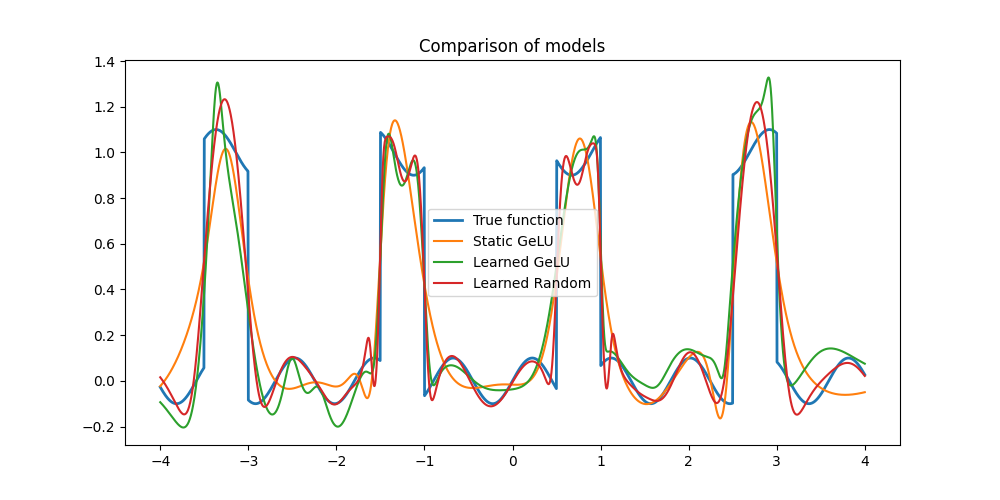
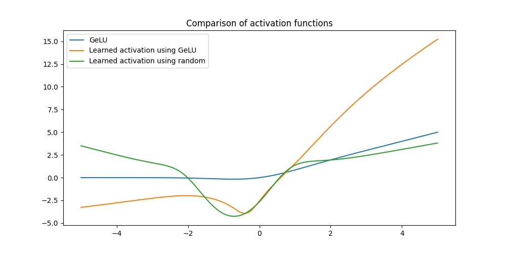
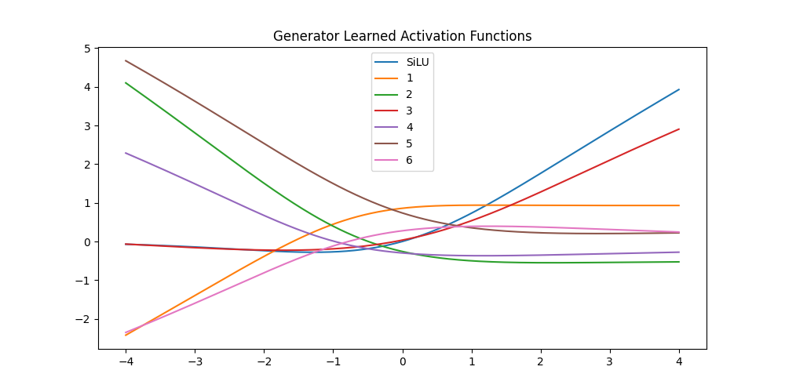
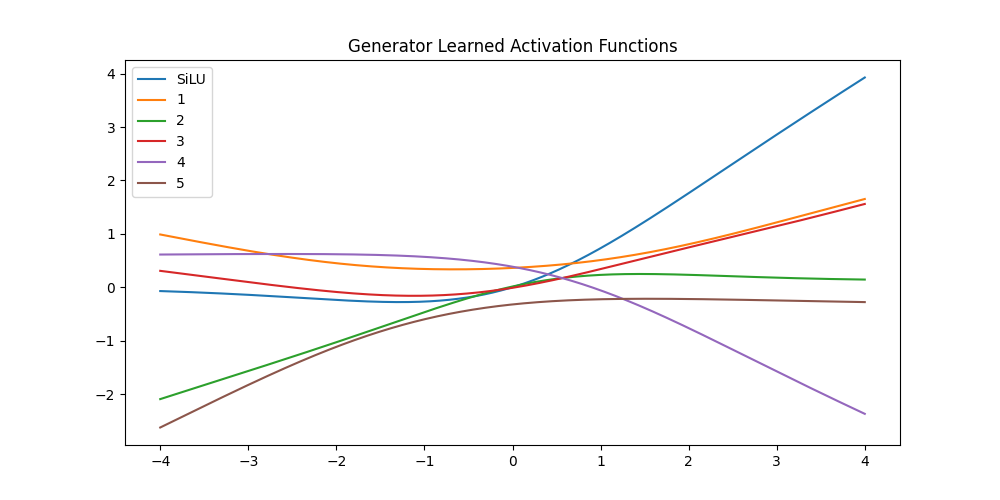
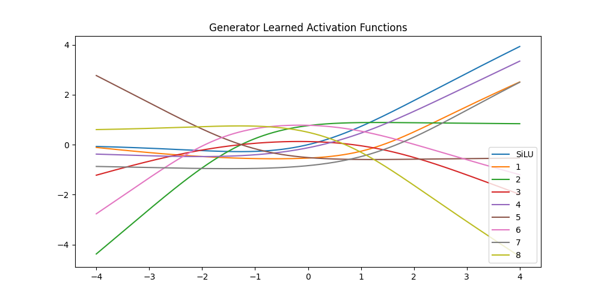
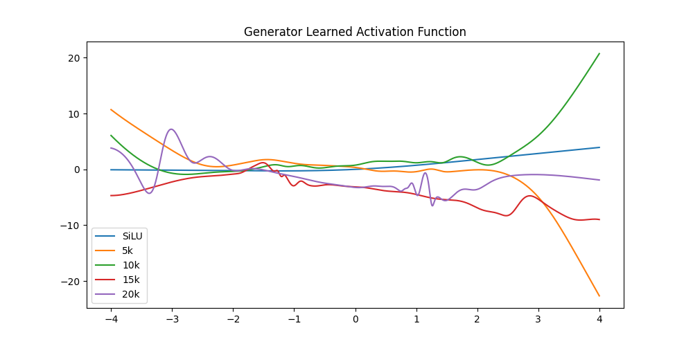

Dynamic Modular Language Graphs
Structure by Architecture
Joachim De Witte
Dynamic Modular Language Graphs
2026
© 2026 Joachim De Witte. All rights reserved.
Published under the Creative Commons BY-NC-ND 4.0
license.
The Owl and the Ravens
Long ago, in a quiet library at the edge of the world, there
lived an old Owl.
He had spent a lifetime reading every book he could find.
His feathers were grey with wisdom, and his mind held the echoes of
a thousand authors.
The Owl could write beautiful texts — deep, thoughtful,
layered.
But writing was slow for him, and exhausting.
His style was a blend of everything he had ever read, a vast mixture
of voices woven into one.
One day, a Raven perched on the windowsill with a single
book.
He read it carefully, page by page.
And when he began to write, something astonishing happened:
his text matched the style of the book exactly.
Other ravens noticed.
They tried it too.
Soon, an entire flock of ravens discovered they could each write in
the precise style of whatever book they studied.
Their output was lively, varied, and remarkably consistent.
The Owl was stunned.
“How do these ravens do this so effortlessly?” he wondered.
“I could imitate these styles too, but it would take me ages.”
The Owl still had far more depth — his writing carried weight,
memory, and insight.
But the ravens had something he did not:
speed, clarity, and perfect stylistic fidelity.
Then something even stranger happened.
The ravens began to work together.
They combined the styles of the books they had each mastered.
Their voices intertwined, creating new blends no single raven could
have produced alone.
A new generation of young ravens soon followed.
They read the texts of the older ravens and learned to write even
more condensed, distilled versions — sharper, cleaner, more
focused.
The Owl watched all this with growing curiosity.
He was old, and tired, but not defeated.
He realized something profound:
Perhaps I do not need to do everything myself.
If I give the ravens ideas, and they give me drafts,
I can shape their work into something greater than any of us could create alone.
And so a new guild of writers was born —
a collaboration between the Owl’s deep wisdom and the ravens’ swift
creativity.
Together, they forged a new way of writing:
transparent, modular, powerful, and alive.
The Owl represents the slow, deep, monolithic model.
The Ravens represent fast, specialized models that imitate styles
with precision.
Their collaboration mirrors the rise of mediator architectures and
multi-agent writing systems.
Together, they form a new creative ecosystem.
Introduction: Language as a Graph
For more than a decade, language modelling has been dominated by architectures that treat language as a high-dimensional statistical phenomenon. Transformers, state-space models, and recurrent networks all operate on the assumption that meaning emerges from dense embeddings and vector-based dynamics.
The Dynamic Modular Language Graph (DMLG) begins from a different premise: language is structure before it is statistics.
A DMLG models language as a deterministic graph of canonical tokens, where each token represents a stable linguistic unit and each edge represents a valid grammatical or semantic transition. Generation is not the unfolding of a hidden state, but a probabilistic navigation through this deterministic structure.
A DMLG is a deterministic canonical token-graph navigated probabilistically through micro-models that interpret compressed context.
This perspective reframes language modelling entirely. Instead of learning an implicit geometry inside a latent space, the DMLG makes the geometry explicit: the graph is the model. Context does not modify a hidden state; it modulates the traversal of the graph.
Language becomes a structural probabilistic process, driven by context and expressed as a walk through a graph.
This idea is not new. Marvin Minsky argued that cognition—and language in particular—should be understood as the interaction of structured representations and context-sensitive processes. What was missing was a practical implementation.
The DMLG provides exactly that.
A DMLG is a Minsky-like operationalisation of language: a deterministic canonical token-graph on which probabilistic navigation occurs, guided by a learned interpretation of compressed context.
Where traditional models treat language as a cloud of probabilities, the DMLG treats it as a navigable landscape. Where transformers rely on massive scale to approximate structure, the DMLG exposes structure directly. Where recurrent models collapse all information into a single hidden state, the DMLG distributes structure across a graph of pages, nodes, and transitions.
DMLG approaches language as a probabilistic walk through a deterministic graph—a principle strikingly close to how human language generation is believed to operate.
This shift is as profound as the transition from force-based explanations to geometric interpretations in the history of science. In both cases, the phenomenon is no longer described as interactions between independent elements, but as behaviour emerging from the structure of the underlying space.
DMLG offers a geometric reinterpretation of language: a structural perspective that reveals the shape of linguistic space.
The chapters that follow explore this paradigm in depth: how deterministic structure and probabilistic navigation interact, how context shapes traversal, how biomes emerge, how styles coexist, and how a small modular graph can produce coherent, expressive language.
DMLG is not merely a new architecture. It is a new way of understanding what language is.
Nearly forty years ago, Marvin Minsky proposed that intelligent behaviour could emerge from the interaction of structured representations and context-sensitive processes. The DMLG can be seen as a concrete realisation of that intuition: a deterministic canonical token-graph on which probabilistic navigation unfolds, guided by learned interpretations of compressed context.
Language Without Statistics
It is remarkable that the field has long assumed that language generation must be driven by large-scale statistical prediction. Humans do not produce language by computing next-token probabilities over gigantic parameter fields. We do not maintain dense embeddings, nor do we perform softmax operations over vocabularies. Human language production is guided by structure: by lemma activation, syntactic frames, conceptual biomes, and context-sensitive traversal of a mental space.
In this sense, the DMLG is not merely a new architecture, but a return to a more natural view of language. It shows that generativity does not require massive statistical models: it requires a structured space and a mechanism for navigating it.
The surprising power of the DMLG lies in demonstrating that a mechanistic generator—when built on full canonical form—can produce stable, expressive language after a single epoch. Structure, not scale, is sufficient.
This challenges the prevailing assumption that only large neural architectures can generate coherent text. The DMLG reveals that once language is represented canonically, the mechanism of generation becomes simple: a probabilistic walk through a deterministic space, much closer to how human language production is believed to operate.
What Is a Language Graph?
Before we can understand the Dynamic Modular Language Graph (DMLG), we must first understand the underlying mathematical object on which it is built: the language graph. A language graph is a formal, deterministic structure that represents the canonical transitions permitted by a linguistic system. It is not a statistical model, nor a neural network, nor a latent embedding space. It is a graph in the strict sense of graph theory.
Language as a Graph-Theoretic Object
A language graph is a directed graph
G = (V,E),
where:
V is the set of canonical tokens (lemmas, grammatical markers, structural symbols),
E ⊆ V × V is the set of directed edges representing valid transitions.
Every edge (u,v) ∈ E corresponds to an attested transition from token u to token v in the dataset. No edge exists unless it is supported by the corpus. This ensures that the graph is canon-closed: it cannot generate tokens or transitions that do not exist in the dataset.
A language graph is a deterministic structure whose nodes are tokens and whose edges are the transitions permitted by the canon.
This definition is entirely standard in graph theory. What makes it linguistically meaningful is the interpretation of nodes as linguistic units and edges as grammatical or semantic transitions.
Deterministic and Functional Edges
Edges in a language graph come in two forms:
Deterministic edges
A deterministic edge
u → v
represents a transition that is always valid in the dataset. These edges encode stable grammatical patterns, fixed lemma pairs, and structural invariants. They behave like hard constraints in the graph.
Functional edges
Some transitions are not deterministic but context-dependent. In a language graph, these are represented as function-weighted edges:
W(u,v) = f(u,v),
where f is a small function (in DMLG: a micro-MLP) that evaluates the quality or plausibility of the transition. This is equivalent to weighted directed graphs, probabilistic graphs, or Markov networks in classical graph theory.
A language graph is a hybrid of deterministic structure and functional variation.
Paging: Language as Modular Subgraphs
Real linguistic systems are too large to treat as monolithic graphs. A language graph is therefore partitioned into pages:
P = {P1, P2, …, Pk},
where each Pi ⊆ V is a subgraph containing tokens that co-occur frequently or form a coherent structural region.
Paging corresponds to:
graph partitioning,
clustering,
community detection.
Each page functions as a local biome: a region of the graph with its own lemma clusters, syntactic tendencies, and micro-dynamics.
Traversal: Generation as a Path Through the Graph
A generated sentence is a path:
v1 → v2 → ⋯ → vn.
Traversal is guided by:
deterministic edges (hard constraints),
functional edges (local scoring),
heuristics (beam search, novelty, context activation),
paging (restricting traversal to relevant subgraphs).
This reframes generation:
Language generation is not prediction; it is navigation.
The graph defines what is possible. Traversal defines what is chosen.
Canon-Closedness: Why Language Graphs Cannot Hallucinate
Because the graph is defined strictly by the dataset:
V = tokens in dataset, E = transitions in dataset,
the system cannot generate:
unseen tokens,
unseen transitions,
out-of-domain structures.
This is a structural guarantee, not a learned behaviour.
Canon-consistency is a geometric property of the graph, not a statistical accident.
Why a Language Graph Is Not a Language Model
A language graph:
has no embeddings,
has no attention,
has no autoregressive hidden state,
has no probabilistic sampling,
has no latent space.
It is a structural object. It represents language explicitly rather than implicitly.
This makes it:
interpretable,
falsifiable,
modular,
linguistically grounded.
Why Language Graphs Matter
A language graph provides:
explicit syntax (canonical form),
explicit semantics (clusters),
explicit discourse structure (paging),
explicit transitions (edges),
explicit constraints (deterministic edges),
explicit variation (functional edges).
It is a model that linguists can analyse and AI systems can train.
A language graph is the structural foundation on which DMLG builds a trainable, context-aware system of language generation.
The next chapter introduces how this static structure becomes dynamic: how micro-models, context compression, and probabilistic traversal turn a language graph into a generative system.
What Is a Dynamic Modular Language Graph?
A Dynamic Modular Language Graph (DMLG) is a trainable, context-aware language system built on top of a deterministic canonical token-graph. Where a language graph provides the static structure of possible transitions, a DMLG adds the dynamic machinery required to interpret context, modulate traversal, and generate coherent language.
A DMLG is not a neural language model in the classical sense. It does not rely on embeddings, attention, autoregressive hidden states, or large-scale probabilistic training. Instead, it operationalises language as a structured graph and equips that graph with local micro-models that guide traversal.
A DMLG is a trainable, modular system that performs context-sensitive navigation through a deterministic language graph.
This chapter provides a formal definition of a DMLG, explains its components, and situates it within both graph theory and linguistic theory.
From Language Graph to Dynamic System
A language graph G = (V,E) defines the canonical structure of a dataset: tokens as nodes, transitions as edges, and paging as a modular partition of the graph. A DMLG extends this static structure with three additional layers:
Local transition models (micro-MLPs or deterministic functions),
Context compression and activation,
Probabilistic traversal mechanisms.
Together, these components transform a static graph into a dynamic, trainable system capable of producing coherent, contextually appropriate language.
Tokens as Canonical Nodes
In a DMLG, the node set V is identical to that of the underlying language graph:
V = {canonical tokens in the dataset}.
Tokens are not embeddings or vectors. They are discrete, interpretable linguistic units: lemmas, grammatical markers, structural symbols. This ensures:
no hallucination outside the dataset,
explicit syntactic structure,
explicit semantic fields,
full interpretability.
Edges as Trainable or Deterministic Transitions
Edges in a DMLG come in two forms:
Deterministic edges
A deterministic edge
u → v
represents a transition that is always valid in the dataset. These encode stable grammatical patterns and fixed lemma combinations.
MLP-edges
For transitions that vary with context, a DMLG assigns a small micro-model:
W(u,v) = fMLP(u,v,c),
where c is the compressed context representation. These micro-MLPs are extremely small (typically kilobytes), but they allow the system to express:
stylistic variation,
semantic drift,
local novelty,
context-sensitive transitions.
A DMLG replaces global neural computation with local, interpretable micro-models.
Paging: Modular Subgraphs as Context Zones
The node set V is partitioned into pages:
P = {P1, P2, …, Pk},
where each Pi is a subgraph representing a local biome: a cluster of tokens that co-occur frequently and share structural or semantic properties.
Paging provides:
modularity,
locality of computation,
interpretable context zones,
reduced search space during traversal.
A DMLG activates one or more pages based on the compressed context, ensuring that generation remains coherent and domain-consistent.
Context Compression and Activation
Unlike transformers, which maintain a high-dimensional hidden state, a DMLG uses a compact context representation derived from:
recent tokens,
active pages,
structural cues,
novelty heuristics,
optional user prompts or keywords.
This compressed context modulates:
which pages are active,
which edges are preferred,
how micro-MLPs evaluate transitions,
how beam search explores the graph.
Context does not modify a hidden state; it modifies traversal.
Traversal as Probabilistic Navigation
A DMLG generates text by traversing the graph:
v1 → v2 → ⋯ → vn.
Traversal is guided by:
deterministic edges (hard constraints),
MLP-edges (local scoring),
beam search (parallel path exploration),
novelty heuristics (avoiding repetition),
page activation (contextual restriction).
This makes generation:
deterministic in structure,
probabilistic in choice,
interpretable in mechanism.
PRE: Structural Filtering of Sentences
The Propose–Retry–Evaluate (PRE) mechanism in a DMLG does not operate at the token level. Instead, it evaluates entire candidate sentences after they have been generated through graph traversal. PRE functions as a structural filter that determines whether a proposed sentence is admissible within the canonical and contextual constraints of the active pages.
A PRE cycle consists of three stages:
Propose — The system generates one or more complete candidate sentences by traversing the active subgraph. These candidates may be produced sequentially or in parallel.
Retry — If a candidate fails evaluation, the system generates a new candidate sentence. Multiple retries may be attempted, subject to a configurable retry budget.
Evaluate — Each candidate sentence is evaluated as a whole according to:
grammatical constraints,
semantic coherence,
biome consistency,
novelty thresholds,
structural opening/closing rules,
minimum sentence-length requirements.
PRE is therefore a sentence-level acceptance filter, not a token-level scoring mechanism. It ensures that traversal remains within the structural boundaries of the graph while still allowing controlled variation.
Parallel PRE Evaluation
In addition to sequential retries, a DMLG may generate a small set of parallel candidates. These candidates are evaluated independently by PRE, after which a selection mechanism chooses the best admissible sentence according to the evaluation criteria. This parallel mode increases robustness and reduces the likelihood of degenerate or low-quality outputs.
PRE guarantees that only structurally valid, biome-consistent, and context-appropriate sentences are committed to the output, while still permitting controlled exploration through retries and parallel candidates.
Why DMLG Works on a Single Book
Because:
syntax is given by canonical form,
semantics emerge from clustering,
context is provided by paging,
transitions are local,
the graph is canon-closed.
A DMLG does not need millions of tokens to learn structure. The structure is already present in the graph.
Relation to Linguistic Theory
A DMLG aligns naturally with:
dependency grammar,
construction grammar,
cognitive semantics,
discourse theory,
frame semantics,
graph-based syntax.
It provides a computational realisation of long-standing linguistic ideas: language as structure, context as activation, meaning as relations.
Relation to Cognitive Models
A DMLG resembles Minsky’s view of cognition:
structured representations,
context-sensitive processes,
modular reasoning,
local decision-making.
It is a practical implementation of a cognitive architecture rather than a statistical approximation.
Conclusion
A Dynamic Modular Language Graph is a hybrid system that combines:
the explicit structure of a language graph,
the adaptability of local micro-models,
the modularity of paging,
the flexibility of probabilistic traversal,
the interpretability of graph theory,
the expressiveness of linguistic theory.
It is neither a transformer nor a classical grammar. It is a new paradigm: a trainable, context-aware language graph that generates language by navigating structure rather than predicting tokens.
A unique moment in AI development. The DMLG architecture did not arise from a single theoretical leap, but from an iterative and recursive collaboration between human reasoning and LLM systems. Beginning with the Safe & Modular AGI framework, refined through the exploratory Dynamic Modular Language Model (DMLM) prototype, and culminating in the formal Dynamic Modular Language Graph (DMLG), this lineage represents a rare case in which a new class of language generator was co‑designed through structured dialogue, experimentation, and conceptual bootstrapping. The result is not an incremental improvement, but the emergence of a distinct architectural category.
Complementary and orthogonal to LLMs. DMLG systems are not replacements for large language models, nor scaled‑down variants of them. They are orthogonal: where LLMs rely on statistical prediction, embeddings, and massive parameter spaces, DMLGs rely on deterministic graph structure, modular micro‑models, and explicit canonical constraints. The two paradigms solve different problems, operate under different assumptions, and exhibit different strengths. In practice, they are complementary: LLMs excel at broad generalisation, while DMLGs provide structural fidelity, interpretability, and canon‑bounded generation.
DMLG is not a smaller LLM, nor a variant of one. It is a structurally distinct language generator whose properties enrich rather than replace the capabilities of modern language models.
Why a DMLG Is Not a Language Model
The term Dynamic Modular Language Model (DMLM) was a natural starting point in the early stages of this research. However, as the architecture matured, it became clear that the system does not belong to the category of language models at all. A DMLG is a language generator: a structural, graph-based system that produces sentences through modular composition rather than statistical prediction.
This chapter clarifies the distinction, formalises what a language model is, explains why a DMLG does not satisfy that definition, and positions the DMLG as an orthogonal and complementary paradigm.
What a Language Model Is
In computational linguistics and machine learning, a language model has a precise definition:
A language model is a probabilistic function that estimates the likelihood of token sequences and predicts the next token given a history of previous tokens.
This definition implies several architectural and operational properties:
probabilistic next-token prediction,
statistical estimation of token likelihoods,
training on large, diverse datasets,
gradient-based optimisation,
embedding-based semantic representation,
sequential processing of token histories,
transformer or recurrent architectures.
GPT, LLAMA, PaLM, BERT, and similar systems all satisfy this definition. They are predictive statistical engines.
What a DMLG Is
A Dynamic Modular Language Graph is fundamentally different. It is not a probabilistic predictor but a structural generator.
A DMLG is:
a dynamic function,
that generates the next sentence,
using page-based micro-models,
trained on a small canonical dataset,
with structure determined by a deterministic graph,
without transformers,
without embeddings,
without probabilistic token prediction,
without large-scale training.
A DMLG composes language through:
canonical internal language (deterministic AST-native form),
paging (modular subgraphs),
micro-model specialisation,
PRE loops (sentence-level refinement),
CAS (content-accuracy-safety constraint enforcement),
graph traversal (not sequence prediction).
A DMLG is structural, not statistical; compositional, not predictive; deterministic, not probabilistic.
What a DMLG Is Not
A DMLG is not:
a transformer,
a next-token predictor,
a probabilistic estimator,
a sequence-to-sequence model,
a system with embeddings,
a model trained on massive corpora,
a system that hallucinates,
a system that blends unrelated styles.
It cannot:
drift outside its canon,
invent structures not supported by its pages,
interpolate between unrelated domains,
generalise via latent vector spaces.
These are not limitations—they are architectural guarantees.
How a DMLG Generates Language
DMLGs generate language through structural composition rather than prediction. The process is:
Canonical internal language encodes meaning deterministically.
Pages define local micro-models with specialised behaviour.
The graph determines which pages interact.
PRE loops refine and stabilise emergent structure.
CAS enforces constraints and prevents drift.
The system outputs the next coherent sentence.
This is emergent structure, not statistical likelihood.
Comparison: DMLG vs. LLM
| Aspect | LLM (Language Model) | DMLG (Language Generator) |
|---|---|---|
| Core mechanism | Next-token prediction | Structural composition |
| Architecture | Transformer/RNN | Graph + micro-models |
| Training | Massive datasets | Small canonical dataset |
| Parameters | Millions–billions | Small, local micro-models |
| Representation | Embeddings | Canonical internal language |
| Behaviour | Statistical blending | Canonical emergence |
| Drift | Possible | Impossible by design |
| Guarantees | None | Strong (CAS, canon, structure) |
| Category | Language model | Language generator |
The two systems share only one property: they both produce language. Beyond that, they are architecturally incomparable.
Why the Distinction Matters
The earlier term Dynamic Modular Language Model was misleading. It suggested:
statistical modelling,
probabilistic prediction,
transformer-like behaviour,
dataset-driven generalisation.
None of these apply.
The shift to Dynamic Modular Language Graph corrects the category:
it is a graph, not a model,
it is modular, not monolithic,
it is structural, not statistical,
it is deterministic, not probabilistic,
it is a language generator, not a language model.
Conclusion
A DMLG is not a language model. It belongs to a different architectural lineage, with different goals and different guarantees.
Where LLMs predict, DMLGs compose. Where LLMs blend, DMLGs structure. Where LLMs scale, DMLGs specialise. Where LLMs drift, DMLGs remain canonical.
Understanding this distinction is essential for appreciating the role of DMLG within The Triadic Cosmos and within the broader landscape of modular AI.
The earlier term Dynamic Modular Language Model (DMLM) was not incorrect. In everyday usage, a “language model” simply means an AI system that generates language based on input. Under this broad, informal definition, the early DMLM prototypes behaved exactly like a language model: they accepted prompts, produced coherent text, and operated as modular generators of linguistic output. In that sense, the name aligned with how most people intuitively understand the term.
However, as the architecture matured, the term became conceptually misleading. In computational linguistics and machine learning, a “language model” has a strict technical meaning: a probabilistic next-token predictor trained on large datasets using statistical estimation. A DMLG does none of these things. It is structural rather than statistical, graph-based rather than embedding-based, and generative rather than predictive.
The shift to Dynamic Modular Language Graph corrects this mismatch. It reflects the true nature of the system:
it is a graph, not a probabilistic model,
it generates sentences, not token predictions,
it composes structure, rather than estimating likelihoods,
it is deterministic in form, modular in behaviour, and canon-bound by design,
it grows dynamically with the dataset and can continue expanding during its lifetime, without ever collapsing into a fixed snapshot.
DMLM was a reasonable name for the early prototypes, but DMLG is the precise name for the formal architecture. It captures what the system is, not merely how it behaves.
The Ontology of Language Revealed by DMLG
A Dynamic Modular Language Graph (DMLG) does more than provide a new architecture for language generation. By reducing language to a deterministic graph of canonical tokens and context-sensitive transitions, it exposes a structural ontology of language that is normally hidden inside statistical models.
Transformers and other neural language models encode linguistic regularities implicitly in high-dimensional embeddings. A DMLG, by contrast, makes these regularities explicit: tokens become ontological units, edges become relations, pages become semantic regions, and traversal becomes a form of structured reasoning.
DMLG does not merely model language; it reveals the ontology that language itself presupposes.
This chapter formalises that ontology and situates it within the broader Triadic Cosmos framework.
Ontology as Structural Commitment
An ontology specifies the entities that exist in a system and the relations that hold between them. In a DMLG, these commitments arise directly from the canonical form of the dataset:
Tokens are the primitive entities (lemmas, markers, structural symbols).
Edges are the admissible relations (grammatical or semantic transitions).
Pages are modular regions (biomes) of coherent linguistic activity.
Traversal is the process that instantiates meaning through structure.
These components are not learned abstractions. They are extracted from the dataset and therefore constitute a corpus-grounded ontology.
Tokens as Ontological Units
In classical linguistics, lemmas and grammatical markers are treated as abstract categories. In a DMLG, they become concrete ontological nodes:
V = {canonical tokens}.
Each token is:
discrete,
interpretable,
canon-closed,
structurally grounded.
Tokens therefore function as the atoms of the linguistic ontology.
Edges as Ontological Relations
Edges encode the relations that hold between tokens. A deterministic edge
u → v
represents a relation that is always valid in the dataset. A functional edge
W(u,v) = f(u,v,c)
represents a context-sensitive relation modulated by compressed context.
Together, these edges form a hybrid relational ontology:
deterministic relations (structural invariants),
functional relations (contextual variation).
This mirrors classical ontological distinctions between necessary and contingent relations.
Pages as Semantic and Structural Regions
Paging partitions the graph into modular subgraphs:
P = {P1, P2, …, Pk}.
Each page corresponds to a linguistic biome: a region of tokens that co-occur frequently and share semantic or syntactic properties.
Pages therefore function as:
semantic fields,
discourse zones,
structural neighborhoods,
ontological regions.
This provides a natural ontology of linguistic locality.
Traversal as Ontological Dynamics
A sentence is a path through the ontology:
v1 → v2 → ⋯ → vn.
Traversal is not prediction but navigation. It instantiates meaning by selecting a coherent sequence of ontological units under structural constraints.
This dynamic view aligns with:
frame semantics,
construction grammar,
cognitive models of language as action.
Context as Activation of Ontological Structure
Context in a DMLG does not modify a hidden state. It activates and modulates the ontology:
selecting pages,
biasing edges,
shaping traversal,
constraining novelty.
This yields a context-sensitive ontology in which meaning emerges from the interaction between structure and activation.
A Mechanistic Ontology of Language
The ontology revealed by DMLG can be summarised as follows:
Entities: canonical tokens.
Relations: deterministic and functional edges.
Regions: pages as modular biomes.
Dynamics: traversal as context-sensitive navigation.
Constraints: canon-closedness and structural validity.
This ontology is:
explicit rather than latent,
deterministic rather than probabilistic,
interpretable rather than opaque,
grounded in corpus structure rather than learned embeddings.
DMLG provides the first operational, mechanistic ontology of language suitable for both linguistic analysis and AI generation.
Relation to the Triadic Cosmos Ontology
Within the Triadic Cosmos framework, the DMLG ontology occupies the linguistic layer of the system:
Triadic Ontology: metaphysical structure.
AGI Ontology: cognitive and functional structure.
DMLG Ontology: linguistic and representational structure.
The three layers align naturally:
tokens correspond to entities,
edges correspond to relations,
pages correspond to modular domains,
traversal corresponds to dynamic processes.
This makes DMLG not merely a language generator but a structural component of a broader ontological architecture.
Conclusion
A DMLG does not only generate language. It reveals the ontological structure that underlies linguistic systems:
discrete units,
structured relations,
modular regions,
dynamic traversal,
context-sensitive activation.
This ontology is not imposed; it is extracted from the dataset and made operational through the architecture.
DMLG transforms language from a statistical phenomenon into an explicit, mechanistic ontology. It is not only a model of language, but a model of what language is.
DMLG and Human Language Cognition
A Dynamic Modular Language Graph (DMLG) is not designed to imitate the human brain. Yet, in its functional organisation, it aligns strikingly well with decades of research in psycholinguistics, neurolinguistics, and cognitive science. This alignment is not superficial. It arises because DMLG models language as a system of discrete units, structured relations, modular regions, and context-sensitive dynamics— all of which are central themes in contemporary theories of human language cognition.
DMLG is not a cognitive model, but it is cognitively plausible. Its mechanisms parallel the functional architecture of human language processing more closely than any existing neural language model.
This chapter situates DMLG within the landscape of human language cognition and highlights the structural correspondences.
Discrete Lemmas as Cognitive Units
Human language processing operates on discrete units:
lemmas,
morphemes,
grammatical markers,
constructional patterns.
Psycholinguistic evidence shows that humans do not manipulate continuous vector representations. Instead, they retrieve and combine symbolic units stored in memory.
A DMLG mirrors this structure:
V = {canonical tokens}.
Tokens are discrete, interpretable, and canon-closed. This corresponds to:
lexical access models,
construction grammar,
usage-based theories of language,
Jackendoff’s Parallel Architecture.
Language as Navigation Through Structure
Human sentence processing is incremental and constraint-based. Listeners and speakers navigate through possible interpretations or formulations by:
activating candidates,
suppressing incompatible paths,
resolving competition,
integrating context.
This is the core idea behind:
constraint-based parsing,
competition models,
spreading activation theory.
A DMLG operationalises this view:
v1 → v2 → ⋯ → vn.
Traversal is not prediction but navigation. Edges encode constraints; context modulates activation; beam search explores competing paths. This is functionally analogous to human incremental processing.
Paging and Modular Semantic Regions
Neuroscience shows that language is processed in modular, distributed regions:
lexical-semantic hubs,
syntactic circuits,
conceptual domains,
discourse integration zones.
These regions are activated contextually and operate semi-independently.
DMLG’s paging mechanism provides a computational analogue:
P = {P1, P2, …, Pk}.
Each page is a linguistic biome: a modular region of tokens with shared semantic or structural properties. Context activates relevant pages, restricting traversal and guiding interpretation.
This parallels:
neural reuse theory,
semantic hubs and spokes,
domain-specific activation patterns.
Local Micro-Models and Neural Microcircuits
Human language processing relies on local neural circuits rather than global computation. Micro-columns and local assemblies modulate transitions based on context and prior activation.
DMLG implements this principle through micro-MLPs:
W(u,v) = fMLP(u,v,c).
These micro-models:
are local,
context-sensitive,
lightweight,
modular.
They provide variation without global hidden states, mirroring the distributed, localist nature of neural computation.
PRE and Human Monitoring Mechanisms
Human language production involves:
planning,
monitoring,
self-correction,
repair loops.
Levelt’s model of speech production emphasises the role of internal monitoring and revision.
DMLG’s PRE mechanism is a computational analogue:
Propose: generate candidate sentences,
Retry: reject and regenerate if needed,
Evaluate: assess grammaticality, coherence, and biome consistency.
PRE is not a probabilistic filter but a structural one, making it functionally similar to human self-monitoring.
Canon-Closedness and Human Linguistic Limits
Humans cannot generate:
words they have never heard,
constructions they have never acquired,
syntactic patterns outside their language.
This is a fundamental property of human linguistic competence.
DMLG inherits the same constraint:
V = tokens in dataset, E = transitions in dataset.
Canon-closedness is therefore cognitively realistic. Transformers, by contrast, hallucinate because they lack structural boundaries.
Summary of Cognitive Parallels
| Cognitive Principle | Human Cognition | DMLG Mechanism |
|---|---|---|
| Discrete units | Lemmas, morphemes | Canonical tokens |
| Structured relations | Grammar, constructions | Deterministic edges |
| Contextual modulation | Activation, competition | Micro-MLP edges |
| Modular regions | Semantic hubs, circuits | Paging biomes |
| Incremental navigation | Constraint-based parsing | Graph traversal |
| Self-monitoring | Repair loops | PRE filtering |
| Bounded competence | No unseen forms | Canon-closedness |
Conclusion
DMLG is not a cognitive model of the brain. Yet its architecture aligns with the functional principles of human language cognition more closely than any existing neural language model.
It uses discrete, interpretable units.
It navigates structure rather than predicting tokens.
It activates modular regions based on context.
It relies on local micro-models rather than global states.
It monitors and filters output structurally.
It is canon-closed and therefore cognitively realistic.
DMLG is not designed to mimic the brain, but it converges on many of the same functional principles. It is the first language architecture whose mechanisms are both computationally explicit and cognitively plausible.
Why Canonical Form?
Natural language is expressive, flexible, and rich in nuance. It is also ambiguous, morphologically unstable, structurally inconsistent, and probabilistic in its interpretation. These properties make it ideal for human communication, but fundamentally unsuitable as the internal representation of a deterministic modular system. A machine that must reason, validate, and generate text cannot rely on a medium whose form changes with every sentence.
This chapter introduces the motivation for canonical form: a deterministic, lossless, machine-native micro-language designed to serve as the internal representation of the DMLG. Canonical form is not a simplified version of English. It is an engineered token language with explicit morphology, explicit syntax, explicit boundaries, and guaranteed round-trip stability. It is the language the model thinks in.
We begin by examining the limitations of natural language as a computational substrate, and then show how canonical form resolves these limitations through normalization, structure, determinism, and bidirectional correctness.
The Problem with Natural Language
Natural language exhibits several properties that make it fundamentally incompatible with deterministic modular systems:
Ambiguity. Words have multiple meanings; sentences have multiple parses; structure is often implicit rather than explicit.
Morphological variation. Verbs inflect across tense, aspect, and person; nouns inflect across number; adjectives and adverbs vary freely.
Redundancy and synonymy. The same concept can be expressed in dozens of ways, none of which are guaranteed to be equivalent.
Inconsistent structure. Word order varies; optional modifiers appear unpredictably; punctuation is irregular.
Surface noise. Capitalization, punctuation, spacing, and stylistic variation introduce irrelevant differences.
Probabilistic interpretation. NLP tools such as part-of-speech taggers and dependency parsers are statistical approximations and produce inconsistent analyses.
A neural model trained directly on natural text must implicitly learn:
grammar,
morphology,
agreement,
tense and aspect,
pluralization,
syntactic structure,
discourse flow,
and the correction of upstream NLP errors.
This is inefficient and unnecessary. These rules are deterministic and can be encoded explicitly. A modular system should not waste capacity learning the mechanics of language; it should focus on content, structure, and narrative progression.
The Python library spaCy predicts grammar; it does not guarantee it. On modern English it is highly reliable, but on complex, archaic, poetic, or syntactically unusual text—such as much of Project Gutenberg—its part-of-speech tags and dependency parses can be systematically wrong.
For a DMLG system, these errors are not harmless. They propagate directly into canonical form. A misclassified verb, a missing subject, or a wrong dependency produces incorrect canonical tokens, and incorrect canonical tokens teach the model incorrect grammar. The model internalises the parser’s mistakes.
To prevent this, the canonical pipeline includes:
deterministic correction rules (e.g. ING vs. INGV),
a morphological engine (
inflect) for surface forms,a grammar fixer (
language_tool_python) that rejects or repairs sentences during distillation and generation.
Accurate canonical form depends on accurate grammar prediction. Without correction, parser noise becomes model noise—and the grammatical prowess of the trained system degrades accordingly.
Canonical Form as a Machine-Native Micro-Language
Canonical form replaces the ambiguity of natural language with a deterministic token language. Each token is explicit, atomic, and unambiguous. Morphology is encoded through tags; syntax is encoded through structure; punctuation and boundaries are explicit.
Consider the natural sentence:
The rabbit walks along the bright hallway.
Its canonical representation is:
<DET> the <NOUN> rabbit <VERB> walk <PRESENT-3S>
<ADP> along <DET> the <ADJ> bright <NOUN> hallway <PERIOD> <EOL>This representation is:
lossless,
deterministic,
unambiguous,
machine-friendly,
round-trip stable,
robust against parser noise.
Case Study: Parser Errors in the Wild
To illustrate the necessity of canonical form, consider the following canonicalized microfiction excerpt:
<DET> the <NOUN> fox <NOUN> chase <PLURAL> ...Here spaCy incorrectly tagged chase as a noun rather than a verb. Left uncorrected, this error would:
distort the canonical structure,
teach the model that fox chase is a noun phrase,
break agreement rules,
and degrade grammatical generalization.
Why Canonical Form Is Essential for Modular AI
Canonical form enables:
deterministic validation,
stable internal representation,
efficient tokenization,
improved generalization,
compatibility with paging,
stable emergent behavior.
A Foundation for the DMLG
Canonical form is the foundation of the DMLG architecture. It is the language the model uses internally, the language the validator enforces, and the language the realiser converts back into natural text.
Canonical form is designed to tolerate parser noise. Even when round-trip filtering is disabled and spaCy occasionally misclassifies verbs, nouns, or participles—as often happens in Gutenberg-style archaic or poetic English—the DMLG remains stable and continues to generate coherent, grammatical output.
Canonical form absorbs errors, but high-quality grammatical conversion still improves the clarity, stability, and generalisation ability of the trained model.
In practice, the system works even with noisy input—but it works better when the canonicalisation is clean.
Context Compression by Grammar: A New O(N) Architecture
Modern language models rely on two dominant mechanisms for handling context: self-attention (Transformers) and state-space recurrence (SSMs such as Mamba). Both approaches maintain an internal, opaque memory representation that grows with sequence length. In contrast, the DMLG architecture uses an explicit, grammar-driven context compression mechanism that is external, structured, and computationally linear.
This section describes the DMLG context window, its grammar-based compression scheme, and its relationship to existing architectures.
External Structured Memory
The DMLG context window consists of three explicitly separated memory channels, each serving a distinct role in the model’s contextual reasoning:
Most recent sentences compressed memory (“large” embeddings)
Less recent sentences compressed memory (“medium” embeddings)
Uncompressed current sentence state
All three channels are constructed from canonical tokens and grammar-derived categories. Unlike Transformers or SSMs, the DMLG does not maintain hidden states or internal recurrence. Instead, it stores structured, grammar-aligned summaries of previous sentences, combined with a fully uncompressed representation of the sentence currently being generated. This separation allows the model to preserve long-range semantic information, medium-range syntactic cues, and fine-grained local structure simultaneously, while keeping the total context representation fixed in size.
Sentence Encoding via Canonical Grammar
Every sentence is encoded into two compressed forms:
Large embedding (10 lemma slots)
Medium embedding (5 lemma slots)
The encoding is grammar-driven. Tokens are assigned to priority queues based on their part-of-speech transitions:
nouns and verbs
adjectives and adverbs
adpositions and pronouns
The encoder constructs a canonical sequence:
large = noun/verb + adj/adv + adp/pron
truncated or padded to fixed length. This canonical form is unique to the DMLG architecture and provides a stable, grammar-aligned compression of semantic content.
History Embedding
The context window stores a fixed number of previous sentences. For each generation step, the model constructs a history embedding:
$$\text{history} = \underbrace{\sum_{i=1}^{N} \text{large}_i}_{\text{most recent}} \;+\; \underbrace{\sum_{j=1}^{M} \text{medium}_j}_{\text{less recent}}$$
where N and M are configurable. This produces a deterministic, structured summary of the past N + M sentences.
Uncompressed Current Sentence
To avoid ambiguity about the ongoing syntactic structure, the DMLG maintains an uncompressed representation of the current sentence:
current = [relative position] + [lemma embeddings] + [forelast token] + [last token]
This channel provides the model with full visibility into the local syntactic state, ensuring that grammar constraints can be enforced without guessing. The forelast and last tokens have larger embeddings.
Final Model Input
The complete model input is the concatenation of all channels:
input = [history] + [current] + [sequence embedding] + [line index]
This produces a fixed-size vector independent of sequence length, yielding an O(N) context mechanism.
Comparison with Transformers
Transformers use self-attention, which scales as O(N2) and stores context implicitly in hidden states. They cannot:
share context across independently trained models,
operate with external grammar,
maintain structured multi-slot memory,
or merge incompatible embedding spaces.
The DMLG avoids these limitations by externalizing context and grammar.
Comparison with State-Space Models (Mamba)
SSMs maintain a recurrent internal state updated by linear dynamics. While efficient, they:
store memory in a single opaque vector,
cannot expose or manipulate memory structure,
cannot support multi-agent writing,
and cannot integrate grammar-based compression.
The DMLG resembles SSMs in that it maintains a compact summary of past tokens, but differs fundamentally in that the summary is:
explicit,
grammar-aligned,
multi-channel,
and shared across agents.
A New Paradigm for Context
The DMLG context mechanism represents a third paradigm:
External structured memory with grammar-driven compression.
It combines the efficiency of SSMs with the expressiveness of Transformers, while enabling capabilities neither architecture supports, such as multi-agent writing and canonical-form reasoning.
This structured, deterministic and grammar-aligned context compression is essential for small models, enabling them to maintain coherence, style, and narrative structure with minimal parameters.
Scaling Laws in Dynamic Modular Language Graphs
Dynamic Modular Language Graphs (DMLGs) exhibit a distinctive and highly interpretable scaling behaviour. Unlike transformers, whose parameter count grows superlinearly with sequence length and model depth, a DMLG grows primarily with the structural complexity of the dataset itself. This chapter formalises the scaling law, explains why it emerges naturally from the graph architecture, and presents empirical evidence from ten independently trained worlds.
The DMLG as a Graph-Structured System
A DMLG represents language as a directed, cyclic graph in which:
nodes alternate between lemma tokens and grammatical functions,
edges represent valid transitions between these nodes,
lemma–lemma transitions are forbidden,
transitions are implemented by small local MLPs or deterministic functions,
context is compressed through grammar-derived nodes.
This structure imposes strong architectural constraints that directly shape how the model scales.
A Cyclic Directed Graph
Because natural language contains repetition, attractors, and self-referential structure, the DMLG graph is inherently cyclic. Edges are directional, reflecting the asymmetry of linguistic transitions.
Alternation Between Lemmas and Grammar
The core structural pattern is:
lemma → grammar → lemma → ⋯
This enforced alternation:
stabilises transitions,
improves context compression,
prevents uncontrolled drift,
promotes natural canon formation.
Subgraphs and Local MLPs
Nodes are clustered into subgraphs, each with its own transition function:
MLP(N→M) for complex lemma clusters,
deterministic (N→1) functions for grammatical nodes.
A subgraph only acquires parameters when the dataset requires it. This modularity is the foundation of DMLG’s efficient scaling.
Compressed Context Awareness
Context is not processed through self-attention but through:
grammar nodes,
lemma clusters,
compact embeddings.
This yields linear computational scaling rather than the quadratic behaviour of transformers.
Why Linear Scaling Is Structurally Inevitable
The scaling law follows directly from the graph architecture.
Maximum Nodes = Lemma Vocabulary
The number of lemma nodes is bounded by the vocabulary of the dataset. A DMLG can never grow beyond the lexical diversity of its world.
Parameters Grow Per Subgraph, Not Globally
Each subgraph receives parameters only when needed. There is no global parameter explosion as seen in transformer stacks.
Complexity Determines the Slope
Worlds with:
rich canon,
many roles,
rhythmic or poetic structure,
high lexical variation,
produce higher parameter density. Simpler worlds produce lower density.
Sublinear Behaviour for Small Datasets
Small datasets have:
small vocabularies,
few lemma clusters,
simple grammatical structure.
Thus the model grows sublinearly.
Parabolic Flattening for Large Datasets
For very large datasets:
vocabulary approaches saturation,
grammatical functions are bounded,
lemma clusters stabilise.
The scaling curve flattens:
limD → ∞M(D) becomes parabolic with flattening.
This is a direct consequence of the bounded graph architecture.
The Empirical Scaling Law
Ten worlds were trained, ranging from 5 KB to 1.16 MB datasets. The resulting models ranged from 0.89 MB to 122 MB.
The observed ratio:
$$\frac{M}{D} \in [60, 180]$$
with a central cluster around:
ktypical ≈ 120.
The Scaling Law
$$\boxed{M \approx k \cdot D}$$
where:
M = model size in bytes,
D = dataset size in bytes,
k = complexity factor of the world.
Interpreting k
k ≈ 60 — simple worlds (prompt-like models),
k ≈ 90–120 — typical language worlds (Hyde, Observatory, Fabel Forest),
k ≈ 150–180 — chaotic or multi-canon worlds (Aesop, hybrid datasets).
No Noise, Only Structure
Variation in k follows directly from:
lemma density,
canon complexity,
grammatical diversity,
subgraph clustering,
MLP requirements per cluster.
The scaling law is therefore structural, not accidental.
The Full Scaling Curve
The DMLG scaling curve has three phases:
Phase 1 — Sublinear (Small Datasets)
Few lemmas, few nodes, few parameters.
Phase 2 — Linear (Typical Language Worlds)
Each new lemma or canon extension creates new subgraphs. Growth is linear.
Phase 3 — Parabolic Flattening (Large Datasets)
Vocabulary saturates, grammar nodes are bounded, clusters stabilise. Growth flattens.
This behaviour is unique to DMLG and follows directly from its graph structure.
Beam Search as Empirical Evidence
Beam search revealed the graph structure of DMLG long before the architecture was formally recognised as a graph.
Beam search works optimally when:
the state space is discrete,
transitions are local,
branching is meaningful,
paths are comparable,
the world is cyclic,
context is stable and modular.
These are precisely the properties of a directed graph—not a sequential vector model.
Beams as Paths
Each beam corresponds to a path:
lemma nodes = states,
grammar nodes = intermediate states,
MLP outputs = weighted edges,
deterministic functions = fixed edges.
Branching Matches Lemma Clusters
Beam branching aligned perfectly with:
lemma clusters,
subgraphs,
canon alternatives.
Score Propagation as Edge Weighting
Beam scores behaved exactly like cumulative edge weights in a weighted directed graph.
Loops as Canon Formation
Beam search detected:
repeating patterns,
cyclic structures,
stable lemma–grammar–lemma loops.
Conclusion
The scaling law of DMLG is both architecturally inevitable and empirically confirmed:
sublinear for small datasets,
linear for typical language worlds,
parabolic flattening for very large datasets.
The core rule remains:
$$\boxed{M \approx \kappa \cdot D}$$
where κ is a dataset–dependent complexity constant capturing lexical diversity, canonical density, grammatical variation, and transition complexity. In practice, κ typically falls within a stable empirical range for natural-language worlds, but its exact value is determined solely by the structural properties of the dataset.
A DMLG grows exactly as much as the world requires—no more, no less. This makes the architecture efficient, elegant, and predictable, and distinguishes it fundamentally from transformer-based models.
Comparison: DMLG vs Mainstream Architectures
Dynamic Modular Language Graphs (DMLGs) occupy a unique position within the landscape of language technologies. They are not simplified transformers, nor lightweight variants of state-space models, nor descendants of RNNs. Instead, they form an orthogonal architectural class with properties that complement, rather than compete with, mainstream systems.
This chapter provides a comprehensive comparison between DMLGs and mainstream architectures such as Transformers, Mamba/SSMs, and modern RNN variants. The goal is not to position DMLG as a replacement, but to clarify why it is an essential complementary technology for modular AI and AGI systems.
High-Level Architectural Differences
Complexity and Accessibility
DMLG: Low complexity — The architecture is modular, interpretable, and understandable by software engineers without deep ML expertise.
Transformers/SSMs: High complexity — Large, monolithic models with intricate internal dynamics and opaque representations.
Transparency vs. Black Box
DMLG: Fully transparent — Every transition, page activation, and micro-model decision is traceable and debuggable.
Mainstream models: Black box — Internal states are distributed across millions or billions of parameters and cannot be inspected directly.
Dynamic vs. Static
DMLG: Dynamic and expandable — The graph can grow during its lifetime, absorbing new data without catastrophic interference.
LLMs/SSMs: Static — Once trained, the model is frozen; continual learning requires retraining or fine-tuning.
Modular vs. Monolithic
DMLG: Modular ensemble — Generator, evaluator, grammar engine, PRE loop, and CAS reasoning are separate components.
Mainstream models: Monolithic — All reasoning, generation, and evaluation are entangled in a single parameter space.
Data and Training Differences
Curriculum vs. Massive Mixed Datasets
DMLG: Curriculum-based — Can absorb small, domain-specific datasets; excels at single-world or single-canon training.
LLMs: Massive mixed datasets — Require heterogeneous corpora at terabyte scale.
Training Cost
DMLG: Cheap training and inference — CPU-friendly, low memory footprint, no large matrix multiplications.
Transformers/SSMs: Expensive — Require GPU clusters and long training cycles.
Embeddings and Internal Language
DMLG: Deterministic embeddings — No learned vocabulary; canonical internal language ensures consistency and removes tokenization artifacts.
Mainstream models: Trainable embeddings — Vocabulary, BPE, and tokenization introduce noise and inconsistencies.
Context and Reasoning Differences
Context Scaling
DMLG: Linear context processing — Grammar-driven compression yields O(N) context cost.
Transformers: Quadratic — Self-attention scales as O(N2).
Grammar and Structure
DMLG: Grammar-guided generation — Syntax is explicit and enforced by the graph.
LLMs: Grammar-emergent — Syntax emerges statistically but is not structurally represented.
Reasoning Loops
DMLG: Deterministic PRE–CAS loop — Reasoning is modular, inspectable, and controllable.
LLMs: Stochastic sampling — Behaviour is governed by logits and sampling temperature.
Evaluation and Safety
DMLG: Separate evaluator model — CAS/PRE can enforce safety, coherence, and personality traits without modifying the generator.
LLMs: RLHF modifies the generator — Safety and alignment are entangled with generation weights.
Deployment and AGI Integration
Hardware Requirements
DMLG: Commodity hardware — Can run on CPU; minimal memory footprint.
LLMs: GPU clusters — High cost and high energy consumption.
Ensemble Behaviour
DMLG: Ensemble-friendly — Multiple domain experts can collaborate through PRE–CAS.
LLMs: Hard to ensemble — Models are too large and monolithic to combine effectively.
Continual Learning
DMLG: Continual learning without catastrophic interference — New data extends the graph without overwriting existing structure.
LLMs: Catastrophic forgetting — Fine-tuning overwrites prior knowledge.
Summary Table
| Property | DMLG | Transformer | Mamba/SSM | RNN/RWKV |
|---|---|---|---|---|
| Complexity | Low, modular | Very high | Medium | Medium |
| Transparency | Full | Black box | Black box | Partial |
| Modularity | High | Low | Low | Low |
| Training cost | Low | Very high | High | Medium |
| Context scaling | Linear | Quadratic | Linear | Linear |
| Internal language | Canonical | Natural text | Natural text | Natural text |
| Embeddings | Deterministic | Trainable | Trainable | Trainable |
| Dataset needs | Small, domain-specific | Huge, mixed | Large | Large |
| Continual learning | Yes | No | Difficult | Difficult |
| Reasoning loop | PRE–CAS | Sampling/RLHF | Sampling | Sampling |
| Debuggability | Full | None | None | Limited |
| AGI suitability | High | Low | Medium | Medium |
| Hardware | CPU | GPU clusters | GPUs | GPUs |
Conclusion
DMLGs are not smaller LLMs, nor simplified transformers, nor variants of SSMs. They are a structurally distinct class of language generators with orthogonal strengths:
interpretability,
modularity,
continual learning,
deterministic reasoning,
grammar-guided generation,
low computational cost,
ensemble compatibility.
Rather than replacing mainstream architectures, DMLGs complement them. They provide the missing component for modular AI and AGI systems: small, interpretable, domain-specific experts that collaborate through PRE–CAS reasoning loops.
DMLG is not a competitor to LLMs. It is the language-generation implementation of the Safe & Modular AGI architecture.
DMLG as a Specialisation of the Trainable Dynamic Modular Graph
Dynamic Modular Language Graphs (DMLGs) were initially developed as an efficient, modular architecture for language generation. However, during their development it became clear that DMLG is not merely a language system. It is the concrete instantiation of a far more general paradigm: the Trainable Dynamic Modular Graph (TDMG).
When DMLG is combined with:
PRE (Propose–Retry/Refine–Evaluate),
beam search as a generic search strategy,
script engines as executive functions,
a memory subsystem spanning episodic, semantic, and working memory,
the result is a complete cognitive architecture. It is structurally comparable to human cognition and satisfies all requirements for a domain-bounded AGI engine.
This chapter describes the deeper structure underlying DMLG and explains why the architecture works so well: because it is not a language model, but a specialisation of a general cognitive substrate.
The Trainable Dynamic Modular Graph
A TDMG is a graph-based cognitive substrate in which:
nodes represent concepts, tokens, percepts, or states,
edges represent transitions (deterministic or learned),
edge-functions are small MLPs or heuristics,
activations are fixed functions or micro-MLPs,
modules (pages) form clusters of knowledge,
routing is dynamic and context-dependent.
DMLG is the language-specific instantiation of this structure:
lemma nodes and grammatical nodes,
pages as linguistic knowledge centres,
subgraphs as lemma clusters,
micro-MLPs as local transition models,
grammar-driven context compression.
The underlying architecture, however, is domain-agnostic.
Beam Search Reveals the Graph
Beam search only functions optimally when:
the state space is discrete,
transitions are local,
branching is bounded,
paths are comparable,
cycles are stable,
context is modular.
When beam search worked perfectly in DMLG, it revealed the true nature of the system:
DMLG is not a sequential model simulating a graph; it is a graph that happens to behave like a model.
Beam search exposed:
lemma nodes as states,
grammatical nodes as compressors,
MLP edges as inference rules,
deterministic edges as constraints,
pages as cognitive regions,
cycles as canon formation,
paths as hypotheses.
This was the empirical confirmation of the TDMG structure.
PRE: The Universal Cognitive Loop
PRE (Propose–Refine/Retry–Evaluate) forms the cognitive control layer above the graph:
Propose: generate a path through the graph,
Refine/Retry: restructure or correct the path,
Evaluate: assess the path for goals, coherence, and safety.
PRE can operate:
across pages,
within pages,
recursively across time.
This yields:
planning,
hypothetical reasoning,
error correction,
multi-step reasoning,
meta-cognition.
PRE is the system’s reasoning loop.
Script Engines as Executive Functions
Beyond the graph and the reasoning loop, DMLG integrates tool-like subsystems:
grammar fixers,
logic filters,
safety constraints,
keyword extractors,
structural validators.
These act as:
syntactic correction,
semantic constraints,
domain-specific heuristics,
safety mechanisms.
They are the executive functions of the architecture.
Memory: A Full Cognitive Memory Model
The memory subsystem consists of three layers:
Episodic Memory
generated sentences,
beam hypotheses,
PRE history,
explored paths.
Semantic Memory
canon,
lemma clusters,
pages,
keywords,
narrative structures.
Working Memory
active pages,
active constraints,
grammar-driven context compression,
goals and subgoals.
Retrieval uses:
keyword scoring,
similarity search,
context-weighted routing,
PRE-guided recall.
This constitutes a complete cognitive memory model.
The Full Cognitive Architecture
When all subsystems are combined, the architecture becomes:
- A. Representation
-
TDMG as a trainable graph of knowledge.
- B. Reasoning
-
PRE as an iterative, recursive thinking loop.
- C. Search
-
Beam search as parallel hypothesis exploration.
- D. Executive Control
-
Script engines for syntax, logic, and safety.
- E. Memory
-
Episodic, semantic, and working memory.
Together, these form a modular, trainable, bounded, recursive reasoning system—a domain-bounded AGI architecture.
Why This Works: The Deep Structure
The power of the architecture arises from the combination of:
modularity (pages),
boundedness (scaling law),
local inference (MLP edges),
global routing (PRE),
parallel hypothesis formation (beam search),
memory (episodic, semantic, working),
executive functions (script engines).
This is not a collection of techniques. It is a coherent cognitive system.
It explains:
why DMLG is stable,
why it scales predictably,
why it exhibits emergent structure,
why it produces reasoning-like output,
why it remains safe and controllable.
Conclusion
DMLG is not merely a language generator. It is the language-specific specialisation of a general cognitive architecture:
TDMG as the world model,
PRE as the reasoning loop,
beam search as the search engine,
script engines as executive functions,
memory as the cognitive substrate.
Together, these form a domain-bounded AGI engine that is:
modular,
trainable,
safe,
scalable,
biologically plausible,
theoretically coherent.
This chapter reveals the deeper reason why DMLG works—and why its relevance extends far beyond language alone.
The Safe & Modular AGI architecture introduced a powerful conceptual framework built on four pillars:
PAGED — cognitive modularity and domain boundaries,
PRE — a universal reasoning loop,
CAS — evaluators for content, accuracy, and safety,
Script, search & memory engines — executive and mnemonic layers.
What was missing at the time was a concrete, trainable substrate on which this architecture could operate. The Trainable Dynamic Modular Graph (TDMG) provides exactly that substrate: a domain‑agnostic graph of concepts, transitions, and modules, capable of learning, routing, and restructuring itself.
TDMG extends the original AGI architecture in a natural and structurally coherent way. PAGED becomes modular subgraphs, PRE becomes the operational reasoning loop over graph paths, CAS becomes a conditioning and evaluation layer, beam search becomes the system’s generic search engine for parallel hypothesis exploration, and memory becomes an explicit episodic–semantic–working memory system. The result is a fully instantiated cognitive engine.
DMLG is the language‑specific operationalisation of this architecture. It applies TDMG to linguistic concepts, uses PAGED for linguistic domains, employs PRE for sentence‑level reasoning, and integrates CAS for coherence, safety, and stylistic control. DMLG is therefore not an isolated invention, but the direct continuation and realisation of the AGI principles established earlier.
TDMG–PAGED–PRE–CAS is the completed AGI architecture; DMLG is its concrete implementation in the domain of language.
The Python Reference Implementation
The DMLG was never meant to be impressive in lines of code. It was meant to be impressive in how few lines are needed.
The Python reference implementation in the
triadic-system repository is a complete, fully
functional language engine built from just sixteen Python source
files, a small MLP, and a handful of standard libraries:
PyTorch (CPU only) for a tiny neural core,
spaCy + pyinflect + inflect for morphology,
language-tool-python for grammar fixing,
NumPy + matplotlib for inspection and plotting.
No GPU. No transformer stack. No embeddings to train. The complexity lives in the structure, not in the code.
This chapter describes that structure at a high level. It is not a code tutorial; it is a map of the machine.
A system you can list on one page
The entire engine can be named in a single breath:
Configuration – global model, context, curriculum and generation settings.
WriterEnvironment – binds configuration, grammar and semantics.
GrammarEngine – natural ↔︎ canonical grammar engine.
SemanticEngine – simple semantic sanity checks.
Token, TokenDictionary, TokenPage, TokenMapping – deterministic tokens and pages.
SentenceEncoder, EncodedSentence – compressed sentence representations.
ContextWindow, ModelInput, InputEncoder – deterministic context and model input.
TransitionMap – learned graph of allowed token transitions.
NeuralNetwork – a three-layer MLP with optional activation MLP.
PagedNetwork – page-wise prediction networks over the transition graph.
RuleBasedFilter – syntactic firewall on token level.
Curriculum, CurriculumStory, CurriculumSentence – canonical training data.
WriterSentence, WriterStory – natural output representation.
WriterAgent – a micro-expert trained on the curriculum.
MultiAgent – a small ensemble of such experts.
AgentBuilder – factory for environments, curricula and agents.
That is the whole system. There is no hidden framework, no service layer, no infrastructure.
Deterministic tokens instead of learned embeddings
At the lowest level, the engine works with deterministic tokens.
Each Token is defined by its text and derives
everything else from that:
a deterministic integer ID,
a deterministic scalar context embedding,
a deterministic small full embedding.
These embeddings are not learned. They are generated from the token text via a fixed hash-like procedure. The same token text will always produce the same embeddings, on any machine, in any run.
This has two important consequences:
The model does not waste capacity learning a vocabulary. The vocabulary is given.
The neural network is not responsible for discovering token identity. It only learns how to use tokens in context.
Where modern language models start with a massive learned embedding matrix, the DMLG starts with a deterministic mapping from text to a handful of floats.
Grammar as a first-class mechanism
The GrammarEngine is the syntactic backbone of the
system. It performs four roles:
natural → canonical conversion,
canonical → natural realization,
basic grammar validation,
grammar fixing.
Natural sentences are parsed with spaCy, converted into a
canonical control-token form (<NOUN>,
<VERB>, <PRESENT-3S>,
<PLURAL>, …), and then reconstructed back into
natural language using inflection rules and language-tool-based
fixes.
The key idea is simple but radical:
Grammar is not an emergent property of the neural network. Grammar is a deterministic mechanism that the neural network must obey.
The canonical form defines a controlled language over which the rest of the system operates. The neural core never sees raw text; it sees canonical tokens.
On top of this, the SemanticEngine adds a thin layer
of semantic sanity:
minimum and maximum sentence length,
no leftover control tokens,
no exact sentence duplicates,
no obvious repetition patterns (e.g.
A B A B, repeated trigrams, bigram loops).
Together, grammar and semantics form a deterministic filter that constrains what the model is allowed to produce.
Compressed context with fixed positions
The DMLG does not use attention. Instead, it uses a deterministic context window.
Sentence-level compression
The SentenceEncoder takes a canonical sentence and
extracts a small set of lemma tokens based on their grammatical
role:
nouns and verbs,
adjectives and adverbs,
adpositions and pronouns.
From these, it builds two fixed-length lists:
a large list of up to 10 tokens,
a medium list of up to 5 tokens.
Each list is then converted into a simple embedding by concatenating the deterministic context embeddings of its tokens. No parameters are learned here. The compression is structural, not statistical.
Window-level context
The ContextWindow maintains:
a fixed-size buffer of recent encoded sentences,
a compressed representation of the current sentence (up to a fixed number of lemmas),
the last and forelast token,
the last lemma token,
a generator history embedding built from the large and medium sentence embeddings.
The InputEncoder then constructs the final model
input as:
[history] + [current] + [sequence embedding] + [line index]
All positions are fixed. There are no learned positional embeddings, no attention weights, no dynamic context selection. The structure of the input vector is entirely determined by the grammar and the configuration.
In other words:
The model does not learn what to attend to. It is told what to attend to.
A graph of transitions instead of a monolithic model
At the core of the DMLG lies a graph.
The transition map
The TransitionMap records which tokens can follow
which lemma:
for each previous lemma (a string),
a set of possible next token IDs,
and a mapping back to
Tokenobjects.
This map is learned during training, but it is not probabilistic. It simply records which transitions have been observed. It defines the topology of the language space: which moves are allowed, and which are impossible.
Pages as local experts
The TokenPage groups transitions into small local
models:
each page has a set of input tokens (previous lemmas),
and a list of output tokens (possible next tokens).
If a page has only one output token, it is deterministic: no neural network is needed. If it has multiple outputs, a small prediction network is attached.
The PagedNetwork manages these pages:
it creates new pages when new transitions appear,
it extends pages when new outputs are added,
it attaches a small
NeuralNetworkper non-deterministic page,it routes each prediction through the appropriate page.
The result is a model that is not a single monolithic network, but a collection of tiny local experts, each responsible for a small part of the transition graph.
A tiny neural core
The NeuralNetwork itself is deliberately simple:
three linear layers,
a fixed or small learned activation MLP,
no attention, no residuals, no layer normalization.
It maps the fixed-size input vector to a small output vector over the page’s output tokens. The output is interpreted as logits; the target is a one-hot vector over the same set.
Training uses standard CPU-only PyTorch with Adam and mean squared error. There is no GPU requirement, no large batch infrastructure, no distributed training.
The message is clear:
The neural network in DMLG does not define the language model. It merely activates transitions in a graph that is defined elsewhere.
Rule-based constraints and semantic sanity
Before any neural output is accepted, it passes through a rule-based firewall.
The RuleBasedFilter inspects each candidate token in
the context of the last and forelast token and enforces a set of
simple but powerful constraints:
no duplicate tokens,
no duplicate lemma tokens,
punctuation only in syntactically valid positions,
tense tags only after
<VERB>,<VERB>not directly after tense tags or incompatible tokens,<PLURAL>only after<NOUN>,no repeated control tokens like
<VERB>or<DET>.
This drastically reduces the search space and prevents many classes of errors from ever reaching the natural language stage.
After canonical tokens are converted back to natural text, the
SemanticEngine performs a final validation:
sentence ends with punctuation,
no control tokens remain,
length within configured bounds,
no exact duplicates,
no obvious repetition patterns.
Only sentences that pass both grammar and semantic checks are accepted into a story.
Curriculum and stable embeddings
The Curriculum class turns raw text into a
structured training world.
Canonical stories
The curriculum reader:
reads raw text lines,
splits them into sentences,
converts each sentence to canonical form,
optionally enforces a roundtrip constraint (natural → canonical → natural),
filters out too-short or malformed sentences,
groups sentences into stories.
Each CurriculumSentence stores:
canonical tokens,
an encoded sentence (
EncodedSentence),the natural sentence.
Each CurriculumStory computes:
a deterministic 8-float embedding via a hash over its tokens,
a set of keywords extracted from its canonical form.
These embeddings are stable, order-insensitive and parameter-free. They are used to index stories and to steer generation via keywords.
Agents as micro-experts
A WriterAgent is a micro-expert trained on the
curriculum.
Training
During training:
a
ContextWindowis reused across epochs,random curriculum stories are sampled,
for each sentence, a
ModelInputis built from the context and the story embedding,each target token is learned via the
PagedNetwork,sentences are added to the context as encoded sentences.
Training is batched per page: the PagedNetwork
clusters samples by page and performs one batch update per page
network. This keeps the neural core small and local.
The agent also builds an index from keywords to story embeddings. This allows it to choose sequence embeddings that are relevant to a set of desired keywords.
Keyword-driven sequence selection
Given a set of keywords, the agent:
collects all story embeddings associated with those keywords,
scores embeddings inversely to keyword frequency,
selects one of the best-scoring embeddings at random.
If no keywords are provided, it falls back to a random keyword and a random embedding for that keyword.
This makes each agent a small, specialized expert over the curriculum it has seen.
Ensembles of agents
The MultiAgent class combines several agents into a
tiny ensemble:
agents are selected stochastically based on weights,
token proposals can be varied via a variance parameter,
beam search with keyword bonuses and novelty bonuses can be used for higher-quality sentences,
grammar and semantic checks are applied to each candidate sentence.
The result is a system where diversity comes from multiple micro-experts, not from a single massive model.
Building and running the system
The AgentBuilder ties everything together:
it constructs a
WriterEnvironmentfrom aConfiguration,it builds or loads a
WriterAgent,it reads and preprocesses curricula,
it trains and optimizes agents,
it writes generated stories to disk.
All of this runs on CPU-only PyTorch:
torch==2.2.0+cpu,torchvision==0.17.0+cpu,torchaudio==2.2.0+cpu,plus spaCy, inflect, pyinflect, language-tool-python, NumPy and matplotlib.
The dependency footprint is comparable to the Java toy systems: light, familiar, and easy to install.
The point: structure over scale
If modern language models are power plants, the DMLG is a mechanical watch.
It is built from:
deterministic tokens,
a canonical grammar,
a fixed-position context window,
a graph of transitions,
small page-wise neural networks,
rule-based filters,
simple semantic checks,
and a handful of micro-expert agents.
All of this fits into sixteen Python classes.
The Python reference implementation does not try to hide its mechanism. You can read it in an afternoon, print it on a few pages, and understand how every part contributes to the whole.
The DMLG is a proof of concept with a very specific claim:
You do not need a large model to generate meaningful language. You need the right structure.
The sixteen-class engine in triadic-system is that
structure, rendered in Python.
A Prompt-Driven Demo System
The reference implementation includes a small interactive demo,
implemented in the TriadicSystem class. It is
intentionally simple: no natural-language prompt interpretation, no
hidden heuristics, no model-based parsing. Instead, it uses a
handful of regular expressions to interpret user commands.
This design choice is deliberate. The goal is not to simulate a chatbot, but to demonstrate how the DMLG can be embedded in a prompt-driven workflow without requiring any additional modelling infrastructure.
Multiple agents, one interface
The demo loads several trained agents:
aesopforestfrankensteinhydeobservatorypoetmixdistill
Each agent is a micro-expert trained on its own curriculum. The
user can select any of them by name, or choose multi,
which constructs a small ensemble with weighted sampling.
A minimal prompt language
The demo accepts prompts of the form:
15 lines and model forest7 lines and model multi
The parsing is done entirely through regular expressions. There is no semantic interpretation, no intent classification, no language model in the loop. The system simply extracts:
the requested number of lines,
the requested agent name.
Additional commands include:
repeat— repeat the last prompt,beam— toggle beam search,quit,exit,stop— terminate the session.
Everything else receives a fixed fallback reply.
A demonstration of modularity
The demo system illustrates three important properties of the DMLG:
Modularity. Each agent is independent. New agents can be added without modifying the core engine.
Determinism. The prompt layer does not influence the model. It merely selects which micro-expert to activate.
Transparency. The entire interface is readable in a few lines of code. There is no hidden behaviour.
A complete system in a few hundred lines
The TriadicSystem class ties together:
the configuration,
the environments,
the trained agents,
the multi-agent ensemble,
the prompt interpreter,
and the story generator.
The result is a fully functional, interactive language engine that runs entirely on CPU, uses no transformer components, and remains completely transparent in its operation.
It is a practical demonstration of the central claim of this book:
The Dynamic Modular Language Graph demonstrates that a complete, fully functional language generator does not require scale, depth, or GPU acceleration.
With only sixteen Python classes, deterministic tokens, a fixed-position context window, a handful of rule-based constraints, and a tiny three-layer CPU MLP, the DMLG forms the smallest known architecture capable of producing coherent, grammatical, multi-sentence stories.
It is not a toy. It is a proof:
A language model can be small, transparent, mechanical — and still generate language.
In an era defined by billion-parameter transformers, the DMLG stands as the smallest complete language generation system ever built, and the only one whose models are small enough to understand in their entirety.
From DMLM to DMLG: A Comparative Study of Two Generations
Before the development of the Dynamic Modular Language Graph (DMLG), the first edition of this work introduced the Dynamic Modular Language Model (DMLM). That system demonstrated that stylistic generation could emerge from a mechanical, page-based architecture without embeddings, attention, or GPU-scale compute. However, its behaviour was fundamentally limited: it produced chaotic local transitions, lacked biome formation, and exhibited extreme drift.
With the introduction of the DMLG (effectively DMLM v2, but with a more accurate name), the architecture has undergone a structural shift. Keyword-index steering, improved canonicalisation, refined page construction, and stabilised sampling dynamics have transformed the system into a far more coherent generator.
This chapter presents a direct, apples-to-apples comparison between:
DMLM v1 — the original model from the previous book,
DMLG v2 — the current architecture.
Dataset Overview and Conditions
Both models are evaluated under identical conditions:
20 lines per story,
horror-forest domain,
identical dataset scale.
They are trained on the same dataset.
Dataset: 10 KB raw text
Unique keywords: 227
Sequences: 13
This comparison isolates the architectural differences and reveals the evolution from chaotic local transitions to stable biome-driven generation.
Qualitative Comparison
The differences between DMLM v1 and DMLG v2 are dramatic.
Stylistic Stability
DMLM v1 exhibits:
unstable sentence boundaries,
malformed transitions,
abrupt syntactic collapse,
inconsistent rhythm.
These issues are visible in the v1 samples. For example, these contain lines such as:
“The rabbit crawls rises sudden under.” “The violent slips.” “The drags screams.”
Sentence templates collapse, and transitions lose grammatical structure.
DMLG v2 shows:
stable sentence templates,
consistent horror-biome cadence,
rhythmic repetition with variation,
no syntactic collapse across 20 lines.
In the v2 samples, even pure sampling maintains structural integrity:
“Thunder rolls through lashing vines.” “The rabbit slips near biting ember cloud.” “The raccoon guides them through lashing vines.”
The cadence is stable, the transitions grammatical, and the rhythm consistent.
Semantic Coherence
DMLM v1 frequently loses semantic grounding:
entities appear and vanish,
actions detach from subjects,
scenes collapse into noise.
For example:
“The fox settles hollow. The raccoon into crawls fox loose.” “The sink crush the warps.”
DMLG v2 maintains:
persistent entities (rabbit, fox, raccoon),
consistent spatial motifs (ridge, pit, roots, haze),
stable environmental threats (fog, tendrils, echoes),
emergent micro-narratives.
For example:
“The raccoon drags him from churning insects.” “The rabbit slips near rippling molten shapes.” “Dawn bleeds through lashing vines.”
The world remains intact, even across long sequences.
Biome Formation
DMLM v1 has no biome. It produces a chaotic mixture of fragments.
DMLG v2 forms a clear horror-forest biome:
recurring environmental structures,
stable atmospheric vocabulary,
consistent threat vectors,
emergent spatial logic.
The v2 outputs repeatedly return to:
lashing vines, ember clouds, sinking hollows, trembling ridges, flickering outlines, crawling shadow, biolight fog.
These motifs form a coherent spatial and atmospheric field.
Drift and Collapse
DMLM v1 drifts heavily, it often collapses into repetitive noise.
DMLG v2 maintains coherence across all lines, even without keywords or prompts.
The v2 generator never collapses into noise; instead, it cycles through stable attractor states.
Interpretation
| Property | DMLM v1 | DMLG v2 |
|---|---|---|
| Model size | 6.1 MB | 1.6 MB |
| Dataset size | 10 KB | 10 KB |
| Canonical tokens | 16 KB | 27 KB |
| Coherence | low | high |
| Biome formation | none | strong |
| Drift | extreme | minimal |
| Emergent motifs | weak | strong |
| Syntactic stability | low | high |
| Semantic persistence | low | high |
The comparison reveals a clear generational shift:
DMLM v1 was a proof of concept: a mechanical generator capable of stylistic mimicry but prone to collapse.
DMLG v2 is a stable stylistic engine: capable of maintaining entities, environments, and motifs across long sequences even without external steering.
The key innovations enabling this shift include:
improved canonicalisation,
refined page segmentation,
stabilised sampling dynamics,
expanded transition density,
and the architectural shift toward a true language graph.
This comparison demonstrates that the DMLG is not merely an iteration of the original model—it is a fundamentally different architecture, capable of emergent structure that the earlier system could not achieve.
Even when two systems share the same underlying principles — page-based generation, canonical tokens, local transitions, and mechanical sampling — their architectural choices can produce radically different outcomes. The comparison between DMLM v1 and DMLG v2 makes this explicit.
Both models operate on identical data, identical constraints, and identical mechanisms of local transition. Yet the first collapses into chaotic drift, while the second forms a stable, self-consistent horror-forest biome with persistent entities, coherent spatial logic, and rhythmic stylistic structure.
This divergence is not the result of scale, dataset size, or parameter count. It is the result of architectural refinement: improved canonicalisation, denser transition graphs, stabilised sampling dynamics, and page structures that encode functional roles rather than raw text fragments.
The lesson is clear: representational quality does not emerge from size alone. It emerges from structure. And structure emerges from architecture.
Structure by architecture.
Dataset Overview and Corpus Statistics
This chapter provides a detailed overview of all datasets used throughout the project. Each corpus is described in terms of origin, linguistic properties, canonicalization footprint, training configuration, and resulting model characteristics. Together, these datasets form the empirical foundation for the multi‑world architecture developed in this work.
Aesop’s Fables (Gutenberg)
Description
Aesop’s Fables is a compact narrative corpus consisting of short moral tales involving animal protagonists. Its simple sentence structure and repetitive narrative patterns make it a useful baseline for evaluating canonical tokenization and low‑complexity world modelling.
Statistics
Natural text size: 198 KB
Canonical token size: 517 KB
Number of sequences: 284
Unique keywords: 1959
Training epochs: 10,000
Trained token transitions: 3,011,612
Training time: 1620 s
Page count: 11,195
Model size: 38 MB
Dr. Jekyll and Mr. Hyde (Gutenberg)
Description
A Victorian novella with dense psychological themes and archaic syntax. Despite its compact size, the text exhibits high syntactic variability, making it a challenging but informative corpus for canonicalization and distillation.
Statistics
Natural text size: 139 KB
Canonical token size: 340 KB
Number of sequences: 201
Unique keywords: 1942
Training epochs: 5,000
Trained token transitions: 1,386,372
Training time: 495 s
Page count: 9,980
Model size: 30 MB
Forest (Synthetic)
Description
A synthetic micro‑canon designed to model kinetic action, spatial movement, and environmental threat. Its compactness and stylistic uniformity make it ideal for testing emergent structure in small‑scale models.
Statistics
Natural text size: 11 KB
Canonical token size: 27 KB
Number of sequences: 13
Unique keywords: 227
Training epochs: 1,000
Trained token transitions: 300,704
Training time: 29 s
Page count: 518
Model size: 1.6 MB
Observatory (Synthetic)
Description
A minimalistic corpus focused on observational language, cyclical temporal structures, and atmospheric repetition. It serves as a counterpoint to the kinetic Forest corpus.
Statistics
Natural text size: 5 KB
Canonical token size: 13 KB
Number of sequences: 3
Unique keywords: 186
Training epochs: 1,000
Trained token transitions: 711,986
Training time: 43 s
Page count: 415
Model size: 1.1 MB
Poet (Synthetic)
Description
A lyrical micro‑canon emphasizing metaphor, sensory detail, and soft rhythmic structures. It provides a stylistic dimension absent from the more literal corpora.
Statistics
Natural text size: 7 KB
Canonical token size: 18 KB
Number of sequences: 5
Unique keywords: 213
Training epochs: 1,000
Trained token transitions: 566,271
Training time: 37 s
Page count: 472
Model size: 1.7 MB
Mix (Forest + Observatory + Poet)
Description
A blended corpus combining kinetic action, atmospheric repetition, and lyrical metaphor. This dataset is used to explore multi‑world interference, emergent hybrid styles, and cross‑canon stability.
Statistics
Natural text size: 23 KB
Canonical token size: 58 KB
Number of sequences: 21
Unique keywords: 529
Training epochs: 1,000
Trained token transitions: 423,068
Training time: 65 s
Page count: 1,679
Model size: 5.5 MB
Distill
Description
A large‑scale distilled corpus combining generations from the previous worlds into a unified canonical representation. This dataset is used to evaluate cross‑world compression, semantic interference, and the stability of emergent hybrid structures.
Statistics
Natural text size: 561 KB
Canonical token size: 1.4 MB
Number of sequences: 500
Unique keywords: 1396
Training epochs: 10,000
Trained token transitions: 4,520,227
Training time: 1315 s
Page count: 5,348
Model size: 15.7 MB
Empirical Scaling in Dynamic Modular Language Graphs
A defining property of the Dynamic Modular Language Graph (DMLG) architecture is that model size is not determined by a fixed set of architectural parameters. Unlike conventional neural language models, a DMLG does not possess a predetermined number of layers, hidden units, or attention heads. Instead, its structure grows dynamically with the dataset from which it is constructed.
Vocabulary and Transition Structure as Primary Determinants
Empirically, the size of a trained DMLG correlates strongly with two measurable properties of the canonicalized dataset:
the number of unique canonical tokens (that correlates to the unique keyword count), and
the diversity of transitions observed between these tokens across all sequences.
The canonical vocabulary determines the number of nodes in the graph, while the observed transitions determine the number and complexity of edges and page structures. As a result, model size grows with the structural richness of the dataset rather than its raw length.
Dynamic Growth Instead of Fixed Architecture
Because the DMLG is constructed directly from the dataset, its capacity expands only when the dataset introduces new lexical items or new transition patterns. A corpus with a small vocabulary but repetitive structure yields a compact model, even if its natural text size is large. Conversely, a corpus with a large vocabulary or heterogeneous transitions produces a substantially larger model, even when the underlying text is short.
This behaviour can be summarized empirically as:
ModelSize ∝ UniqueTokens × TransitionDiversity.
The number of sequences contributes indirectly by increasing the likelihood that rare transitions are observed and therefore stored.
Implications for Corpus Design
Because DMLG capacity is dataset‑driven, corpus design becomes a central modelling decision. Adding new worlds, stylistic registers, or narrative structures increases the canonical vocabulary and transition entropy, thereby expanding the model. Conversely, highly uniform synthetic corpora produce small but stable models with predictable behaviour.
Conclusion
The empirical evidence across all datasets demonstrates that DMLG models scale with the structural complexity of the corpus rather than with its size in bytes. Unique tokens and transition diversity form reliable predictors of final model size, reflecting the fundamentally dynamic nature of the architecture.
Summary
The datasets presented in this chapter span a wide range of linguistic complexity, stylistic diversity, and narrative density. Together, they form a multi‑layered experimental landscape enabling controlled studies of canonicalization, distillation, and emergent world‑model behaviour.
Conventional language model training assumes three structural constraints: (1) extremely large datasets, often measured in gigabytes or trillions of tokens; (2) long training times on GPU clusters; and (3) model sizes that scale with fixed architectural parameters rather than with the dataset itself.
The Dynamic Modular Language Graph (DMLG) architecture violates all three assumptions.
Small Datasets.
Several of the corpora used in this work contain only a few kilobytes of natural text. Even the largest Distill corpus remains orders of magnitude smaller than the datasets typically considered viable for language modelling. Despite this, the resulting models exhibit coherent structure, stable world behaviour, and emergent stylistic properties.
Fast Training.
Training times range from tens of seconds to under half an hour on a single CPU. This stands in stark contrast to the multi‑day or multi‑week GPU training cycles required by transformer‑based architectures. The DMLG grows only as needed: its capacity is determined by the dataset, not by a predefined network shape.
Compact Models.
Model sizes span from 1 MB to 40 MB, far below the hundreds of megabytes or multiple gigabytes typical of modern language models. This compactness arises because the DMLG stores only the canonical vocabulary and the transition structure actually observed in the dataset. As a result, model size scales with unique tokens and transition diversity, not with hidden dimensions or layer counts.
Dynamic Structure.
Unlike fixed‑architecture neural models, the DMLG is structurally dynamic: its graph expands only when the dataset introduces new lexical items or new transition patterns. This makes the architecture inherently data‑bounded: the model grows exactly as far as the dataset requires, and no further.
Implication.
Taken together, these properties demonstrate that coherent language modelling does not require massive corpora, long training cycles, or large static architectures. The DMLG shows that small, well‑structured datasets with controlled canonicalization can produce compact, fast‑trained models with stable and interpretable behaviour—an outcome that lies outside the assumptions of mainstream language model design.
Architecture Over Scale: The Principles Behind DMLG
The Dynamic Modular Language Graph (DMLG) challenges the dominant assumptions of contemporary language modelling. Where modern systems rely on massive datasets, dense embeddings, and industrial-scale compute, the DMLG demonstrates that linguistic capability emerges not from size, but from structure. Its architecture is mechanical, modular, and transparent, enabling coherent generation on ordinary hardware and at scales far below the thresholds required by transformer-based or state-space models.
This chapter distills the core principles that make the DMLG fundamentally different: its ability to operate on minimal compute, to function at microscopic scale, and to compress multiple incompatible styles into a single coherent generative system.
A Structural Approach to Language Modelling
The DMLG is built on the premise that language is not a statistical cloud but a navigable structure. Instead of embedding all information into a single latent vector, the architecture maintains:
a grammar-aligned canonical token layer,
explicit medium- and long-range memory,
an uncompressed sentence state,
and a fixed-size context representation.
Because these components are external and structured, the model does not need to learn grammar, syntax, or context implicitly. They are already present in the architecture. This separation of concerns allows the DMLG to operate efficiently even when the dataset is extremely small. Coherence emerges not from scale, but from the geometry of the transition graph.
Performance Without Industrial Compute
Unlike modern large language models, the DMLG runs entirely on a single CPU, inside the Python interpreter, under the Global Interpreter Lock. There is no GPU acceleration, no batching, no parallelism, and no hidden vectorisation. Training and generation proceed through explicit graph traversal and modular page activation.
This constraint is not a limitation—it is a design principle. Because the architecture is transparent and modular, the system can produce stylistically coherent text without requiring teraflops of compute or billions of parameters.
The result is a form of democratic language generation: a model that can be trained, inspected, and extended by anyone with a laptop.
Functioning at the Smallest Possible Scale
One of the most striking properties of the DMLG is its ability to operate at microscopic scale. Even when trained on a dataset so small that a transformer would treat it as noise, the system can still form:
a stable lexicon,
recurring syntactic patterns,
persistent entities,
and a coherent narrative biome.
This demonstrates that linguistic structure does not require vast corpora. When grammar and context are externalised, even minimal data is sufficient to produce meaningful generative behaviour.
Steering Through Prompts, Keywords, and Beam Search
The DMLG supports multiple steering mechanisms that remain effective regardless of model size:
Prompts provide syntactic rhythm and narrative stance.
Keywords act as semantic gravity wells, pulling generation toward specific biomes.
Beam search stabilises structure by enforcing global consistency.
These mechanisms do not require fine-tuning or adapters. They operate directly on the canonical token graph, allowing the model to shift style, tone, and narrative structure with precision.
Mixed-Style Compression: A New Generative Capability
A defining capability of the DMLG is its ability to compress multiple incompatible styles into a single model without collapse. Where transformers must merge all styles into a shared embedding space, the DMLG uses:
index-based sequence routing to select the correct stylistic region of the graph,
canonical-form compression to preserve grammar and rhythm,
keyword-aligned beam search to stabilise the chosen biome.
As a result, the system can store multiple stylistic identities and activate them on demand. Each biome retains its own syntactic cadence, semantic motifs, and narrative texture.
This is not a property of scale, but of architecture.
Example of Mixed-Style Generation
The following excerpt was produced by a DMLG model trained on multiple incompatible styles. No edits were applied. It illustrates how the system blends rhythmic stillness, soft imagery, and entity persistence into a coherent biome.
Observe the hummingbird hovered as if the girl cupped her shadow. The rabbit flees past fleeing shapes. The raccoon guides them through trembling trio. The hummingbird hovered as if the kitten’s measurements. The fox prowls near rippling molten pool. Branches whip past fleeing shapes. Cold nights, the raccoon drags him from crashing debris. The hummingbird hovered as if the girl cupped her hands like tired alphabets, spilling their feet. The girl leaned forward blocking fox step each entry in pattern. The rabbit carried no name. The girl lifted her hands as a sentence the hummingbird hovered as if the kitten’s measurements. The fox snarls against twisting limbs drag across brittle air. Storm tears across sky as a degree, subtle enough to touch, but to be gentle. The girl lifted her, curious, tilting its breath. The girl smiled, and the rabbit flees toward flickering outlines. The corner, a memory, just the hummingbird hovered as if it was part of ground. The rabbit slips near rippling molten pool. The hummingbird hovered like tired alphabets, spilling their feet. The girl cupped her hands as a quieter color. Nothing moves, yet the girl leaned toward flickering outlines.
This output demonstrates the core strengths of the architecture: entity persistence, biome stability, rhythmic coherence, and emergent structure—even in a mixed-style environment.
A Foundation for the Deep Dive
The principles outlined in this chapter form the conceptual basis for the detailed analysis that follows. The next chapter examines the mixed-style model in depth, exploring:
activation regimes,
biome-specific behaviour,
stylistic routing,
and the role of activation functions in shaping world-physics.
Where this chapter explains why the DMLG works, the next chapter shows how it behaves in practice.
What Are Neural Networks?
Neural networks form the computational substrate of modern machine learning. They are flexible function approximators capable of mapping inputs to outputs through a hierarchy of learned transformations. Despite their widespread use, the internal mechanisms of neural networks are often treated as opaque or mysterious. In this chapter, we take a clear and structured view of what neural networks are, how they operate, and why activation functions play a central role in shaping their behaviour.
This chapter provides the conceptual foundation for the adaptive neurons introduced later in Part I. By understanding classical neural networks and their limitations, we can appreciate why modular AI systems require more flexible and expressive building blocks.
Neurons and Layers
A neural network is composed of simple computational units called neurons. Each neuron receives an input vector x ∈ ℝn, computes a weighted sum, adds a bias, and applies a nonlinear transformation:
y = ϕ(Wx+b),
where W is a weight matrix, b is a bias vector, and ϕ is an activation function.
A single neuron is limited in expressive power, but when many neurons are arranged into layers, and layers are stacked into deeper architectures, the resulting network can approximate highly complex functions. This is the essence of the universal approximation theorem: a sufficiently large neural network can approximate any continuous function on a compact domain.
The Role of Activation Functions
The activation function ϕ is the only source of nonlinearity in a neural network. Without it, the entire network collapses into a single linear transformation, regardless of depth:
ϕ(x) = x ⇒ ϕ(W2ϕ(W1x)) = W2W1x.
Thus, activation functions are not a minor detail—they are the structural backbone that enables neural networks to model nonlinear relationships.
Activation functions determine:
the geometry of the network’s internal representations,
the flow of gradients during training,
the stability of optimisation,
the expressiveness of each layer,
and the inductive biases of the entire architecture.
In modular AI systems, these properties become even more important: different modules may require different activation geometries, and fixed activations can impose unnecessary constraints.
Common Activation Functions
Several activation functions have become standard in deep learning. Each has distinct properties and inductive biases.
ReLU
The Rectified Linear Unit is defined as:
ReLU(x) = max (0,x).
It is simple, efficient, and widely used, but it suffers from the “dying ReLU” problem: neurons can become permanently inactive.
Leaky ReLU
A variant of ReLU that allows a small negative slope:
$$\mathrm{LeakyReLU}(x) = \begin{cases} x, & x \ge 0, \\ \alpha x, & x < 0, \end{cases}$$
where α is a small constant.
Sigmoid
A smooth, bounded function:
$$\sigma(x) = \frac{1}{1 + e^{-x}}.$$
Historically important, but prone to saturation and vanishing gradients.
Tanh
A zero-centered variant of sigmoid:
$$\tanh(x) = \frac{e^x - e^{-x}}{e^x + e^{-x}}.$$
GELU
The Gaussian Error Linear Unit:
GELU(x) = xΦ(x),
where Φ is the standard normal CDF. GELU has become the default activation in many transformer architectures.
SiLU / Swish
Defined as:
SiLU(x) = x ⋅ σ(x).
Smooth and effective, often outperforming ReLU in practice.
Limitations of Fixed Activations
While classical activation functions are effective, they impose a fixed inductive bias on every neuron in a layer. This creates several limitations:
Uniformity: every neuron in a layer shares the same activation shape, even if the task requires heterogeneous behaviour.
Rigidity: the activation cannot adapt to the data distribution.
Expressiveness: fixed activations limit the functional capacity of each neuron.
Modularity: different modules may require different activation geometries, but fixed activations enforce a one-size-fits-all approach.
These limitations motivate the development of adaptive activation functions, which we explore in the next chapters.
Why Adaptive Activations Matter
In modular AI systems, different components perform different tasks: language modelling, canonicalisation, search orchestration, algorithmic reasoning, and more. Each of these tasks benefits from a distinct internal geometry. For example:
narrative generation may require smooth, expressive activations,
game reasoning may require sharp, piecewise-linear transitions,
numerical analysis may require monotonic or periodic structures.
Fixed activations cannot provide this diversity. Adaptive activations, implemented as small trainable networks, allow each module—and even each layer—to develop its own functional shape. This is a key ingredient in building modular AI systems that are transparent, extensible, and capable of multi-domain reasoning.
Summary
Neural networks are powerful function approximators, but their behaviour is fundamentally shaped by their activation functions. Fixed activations impose rigid inductive biases that limit expressiveness and modularity. To build flexible, multi-domain AI systems, we require neurons whose activation functions can adapt to the task at hand. The next chapter introduces the training of such adaptive activations and shows how they can be implemented efficiently in PyTorch.
In the DMLG architecture, neural networks—specifically small multi-layer perceptrons (MLPs)—serve a crucial role as page decision models. Whenever a page is non-deterministic, meaning that multiple valid continuations or structural transitions are possible, a dedicated MLP is used to select the appropriate next page.
These page decision models operate as compact function approximators that map the current context representation to a discrete routing choice. Because each page may require a different inductive bias, activation functions become essential: they determine the geometry of the decision surface, the stability of transitions, and the expressive capacity of the routing mechanism.
This is why understanding classical neural networks is directly relevant to the DMLG system. The behaviour of these MLPs—their nonlinearities, their limitations, and their ability to model complex decision boundaries—forms the foundation for the adaptive activation networks introduced later. In DMLG, neural networks are not only generators of text; they are structural controllers that govern how the system moves through its modular cognitive space.
Training Custom Activations
Activation functions determine the nonlinear behaviour of neural networks. Classical architectures rely on fixed, hand-designed functions such as ReLU, GELU, or SiLU. In this book, however, we replace fixed activations with trainable activation networks: small multilayer perceptrons (MLPs) that learn their own activation geometry from data.
Unlike earlier adaptive-neuron formulations that assign a separate activation network to every layer or neuron, we adopt a simpler and more practical approach: each page of the DMLG uses a single shared activation-MLP. This provides strong nonlinear expressiveness with minimal computational overhead, and fits naturally into the modular structure of the system.
Why Trainable Activations Matter for Language Models
Language modelling is fundamentally a token selection problem. Given a context, the model must sharply amplify relevant features and suppress irrelevant ones. Fixed activations such as GELU or SiLU provide smooth nonlinearities, but they cannot adapt to the statistical structure of a specific domain or module.
A trainable activation network, by contrast, can specialise its geometry to the needs of a page. This is especially effective in modular language models for several reasons.
Sharper Token Predictions.
Learned activations can develop steep transitions and local regimes that increase logit contrast, improving the separation between competing tokens and leading to more confident predictions.
Page-Specific Optimisation.
Each DMLG page (e.g. narrative generation, canonicalisation, routing) encounters different statistical patterns. A shared activation-MLP per page allows the entire module to adapt its nonlinearity to its domain.
More Expressiveness with Fewer Weights.
Because the activation network is itself nonlinear and trainable, it expands the expressive power of each layer without increasing the dimensionality of the main model.
Stability and Efficiency.
Using one activation network per page avoids the overhead of per-layer or per-neuron activations while still providing meaningful adaptation. PyTorch’s autograd system ensures stable and efficient training.
Designing a Trainable Activation Function
A trainable activation function is implemented as a small neural network:
ϕθ(x) = fθ(x),
where fθ is an MLP with parameters θ.
A typical design is:
input dimension: 1,
hidden dimension: 4–16,
internal nonlinearity:
GELU(default), withSiLUorTanhas alternatives,output dimension: 1.
class AdaptiveActivation(nn.Module):
def __init__(self, hidden=8):
super().__init__()
self.net = nn.Sequential(
nn.Linear(1, hidden),
nn.GELU(),
nn.Linear(hidden, 1)
)
def forward(self, x):
return self.net(x.unsqueeze(-1)).squeeze(-1)This module can replace any classical activation function.
Using Autograd for Derivatives
In earlier adaptive-neuron architectures, the derivative of the activation function was computed by a separate trainable network. In PyTorch, this is unnecessary: the activation network is fully differentiable, and autograd automatically computes
$$\frac{\partial \phi_\theta(x)}{\partial x} \quad\text{and}\quad \frac{\partial \phi_\theta(x)}{\partial \theta}.$$
This makes adaptive activations practical for modular language models.
Integrating the Activation Network
To use the adaptive activation, we simply replace classical activations:
self.activation = AdaptiveActivation()and apply it in the forward pass:
x = self.activation(x)Each DMLG page receives its own activation-MLP. This design provides:
simplicity: one activation network per module,
stability: fewer parameters than per-layer activations,
modularity: each page develops its own nonlinear geometry,
efficiency: suitable for small models and CPU training.
Training Procedure
Training a custom activation follows the same principles as training any neural network. We use a two-stage procedure.
Stage 1: Optional Pretraining on a Classical Activation
For some experiments, we pretrain the activation network to approximate a classical activation such as GELU:
ϕθ(x) ≈ GELU(x).
This provides a mild inductive bias and stabilises early training, especially when the main network is very small. SiLU or Tanh can also be used as alternative pretraining targets.
Stage 2: Joint Training with the Main Model
After pretraining (or directly from random initialisation), the activation network is trained jointly with the main model:
θ ← θ − η∇θL, W ← W − η∇WL.
Each page of the DMLG develops its own activation geometry during this plasticity phase.
Stage 3: Optional Freezing
Once the activation geometry stabilises, we may freeze the activation network:
for param in act.parameters():
param.requires_grad = FalseThis prevents drift and improves long-term stability.
Practical Considerations
Normalisation
LayerNorm or RMSNorm before the activation improves stability.
Initialization
Small initial weights prevent extreme nonlinearities early in training.
Regularisation
Weight decay helps avoid pathological activation shapes.
Monitoring
Plotting the learned activation over time reveals:
smoothness,
monotonicity,
saturation,
curvature.
Summary
Trainable activation functions allow modular language models to specialise their nonlinear behaviour to the needs of each page. By using a single activation-MLP per module and relying on PyTorch autograd, we obtain a simple, efficient, and expressive mechanism that improves token prediction and internal geometry.
In the DMLG, we exclusively use randomly initialised activation networks with GELU as the internal nonlinearity. This provides the best balance between flexibility, stability, and computational cost.
Evolving Activation Geometries in Modular AI
Introduction
In modular systems such as the DMLG, each page must learn efficiently under strict capacity and training-time constraints. A central component of this process is the activation function, which shapes the internal representation geometry of each page.
Classical activations such as SiLU or GeLU were designed for large, general-purpose neural networks. Modular systems, however, benefit from activation geometries that can adapt to the specific structure of the task. To study this, we evaluate three activation mechanisms:
Static GeLU — a fixed, transformer-style activation.
Pretrained GeLU activation-MLP — an activation network trained to approximate GeLU before integration.
Emergent activations — activation networks trained from random initialization, without any pretraining.
In the DMLG itself, we exclusively use the third mechanism: a randomly initialized activation-MLP with GeLU as its internal nonlinearity. This choice provides the best balance between flexibility, stability, and computational simplicity.
All experiments use the same irregular target function with sharp transitions and local structure, representative of token selection, syntactic boundaries, and attention gating in language models.
From Fixed to Learned Activations
We now describe the three activation mechanisms in detail, along with their behaviour when used as the activation function of the main model.
Static GeLU: Transformer Baseline
Static GeLU provides a smooth, asymmetric S-curve that performs reliably across many architectures. However, as a fixed activation it cannot adapt to task-specific asymmetry, local regimes, or discontinuities. It serves as a strong classical baseline, but its rigidity limits performance on irregular functions.
Pretrained GeLU Activation-MLP
To introduce limited flexibility, we train a small activation network (NeuronMLP) to approximate GeLU before integrating it into the main model. This provides a mild inductive bias: the activation begins GeLU-like but can deform during training.
Across experiments, pretrained GeLU activations consistently outperform static GeLU, especially when the main network is small. The inductive bias is strong enough to stabilise training, yet weak enough to allow task-specific adaptation.
Emergent Activations: Learned from Random Initialization
The most flexible mechanism is a randomly initialized activation-MLP trained end-to-end without any pretraining. The activation geometry emerges organically from the task.
These emergent activations develop asymmetric shapes, plateaus, steep transitions, and multi-regime behaviour that closely match the structure of the target function. They consistently achieve the best performance among all tested mechanisms.
This demonstrates that activation functions need not be chosen or designed: they can be discovered.
Plasticity and Stability: The Hybrid Strategy
Fully dynamic activations are powerful but may drift during long training runs. To address this, we introduce a hybrid strategy:
Plasticity phase: the activation is trained jointly with the model.
Consolidation phase: the activation is frozen once its geometry stabilises.
This mirrors the DMLG philosophy: early flexibility, later consolidation. Hybrid training yields excellent performance, combining the expressiveness of learned activations with the stability of frozen ones.
Summary of Trends
Across all experiments, a clear progression emerges:
Static GeLU < Pretrained GeLU < Emergent.
Additional insights:
Pretrained GeLU provides a useful inductive bias under capacity constraints.
Emergent activations consistently achieve the best performance.
Activation geometries are task-specific and need not resemble classical functions.
Implications for Modular Systems
For modular architectures such as the DMLG, these results suggest a powerful training paradigm:
Each page can learn its own activation geometry during a plasticity phase, and optionally freeze it once stable.
In practice, the DMLG uses a randomly initialized activation-MLP with GeLU as its internal activation. This mechanism is simple, expressive, and robust across scales.
Variability of Learned Activation Geometries
Repeated runs reveal that learned activation functions do not converge to a single fixed shape, but rather form a family of geometries.
Stability of Pretrained GeLU Activations
Pretrained GeLU activations consistently develop the same characteristic S-curve with a kink near zero. Amplitude and curvature vary between runs, but the overall shape remains stable. This reflects the moderate inductive bias provided by GeLU.
High Variability of Emergent Activations
Emergent activations show the highest variability. Across runs, they may resemble a smoothed step function, a tanh-like curve, a piecewise-linear shape, or a locally oscillatory function. Despite this diversity, performance remains consistently strong.
This variability is not a drawback, but a sign of the system’s ability to self-organise and adapt its internal geometry to the demands of each page.
Capacity Trade-offs
Experiments across combinations of main-network size (32, 24, 16, 8, 4, 2) and activation-network size (16, 8, 4, 2) reveal three consistent principles.
1. Emergent activations are the most scale-adaptive
Emergent activations adapt their complexity to the available capacity: rich geometries for large models, smooth task-specific shapes for small ones.
2. Pretrained GeLU excels under compression
When the main network is severely capacity-limited, pretrained GeLU activations perform exceptionally well. The mild inductive bias is easy to represent and easy for small networks to exploit.
3. Activation networks act as capacity amplifiers
A rich activation network can partially compensate for a small main network. However, the learned geometry must match the main network’s capacity.
Figures
Model Predictions vs True Function

Learned Activation Geometries

Example DMLG Activation Geometries


A key innovation in this work is the use of trainable MLP activations on a per‑page basis. Instead of relying on a fixed nonlinearity such as GELU or SiLU, each page in the Dynamic Modular Language Graph (DMLG) can learn its own activation function through a small, local MLP. This mechanism provides a powerful form of dynamic representational scaling.
Local Complexity Where Needed.
Standard activations impose the same functional shape everywhere in the model, regardless of the complexity of the underlying linguistic structure. In contrast, a trainable activation MLP allows each page to acquire a tailored nonlinear transformation that matches the local statistics of the dataset. This enables the model to represent complex linguistic patterns even when the dataset is small.
FLOP Scaling Instead of Parameter Scaling.
Traditional language models increase representational power by adding parameters: larger embeddings, deeper layers, wider networks. This approach increases memory requirements dramatically. The DMLG takes a different path: it increases computational expressiveness through small, local MLPs whose cost is measured in FLOPs rather than in persistent parameters. The memory footprint remains low, while the functional capacity increases.
Ideal for Small Datasets.
Because the activation MLPs are lightweight and trained only on the transitions present in each page, they can learn highly expressive nonlinearities from limited data. This makes the architecture particularly effective for small corpora, where global parameter scaling would be wasteful or unstable.
Implication.
Trainable per‑page activations demonstrate that representational power need not come from ever‑larger parameter counts. By scaling computation rather than storage, the DMLG achieves expressive modelling with memory requirements that are orders of magnitude smaller than those of conventional neural architectures.
Model Temperature by Activation Geometry
The DMLG Activation Function Law
“The best activation is the one that lets the world of the dataset breathe most naturally.”
In the DMLG framework, activation functions are not treated as minor implementation details or interchangeable tricks. They are understood as world generators: the primary mechanism by which an expert model shapes, stabilises, and expresses the latent structure of its dataset.
We can state the DMLG Activation Function Law as follows:
DMLG Activation Function Law. The quality, style, and stability of a DMLG expert model are primarily determined by the resonance between the activation geometry and the structural properties of the dataset it is trained on.
Here, resonance refers to the alignment between:
the shape of the activation function (its curvature, saturation behaviour, symmetry, and smoothness),
and the intrinsic regularities of the dataset (its rhythms, discontinuities, symmetries, and semantic transitions).
Under this view, activation is not a neutral conduit through which information flows. It is an active constraint that sculpts the internal manifold of the model: it decides which patterns are easy to represent, which transitions are smooth or abrupt, and which regions of the input space become attractors.
In DMLG, this has a direct consequence for model temperature. Instead of treating temperature as a post-hoc sampling parameter applied to logits, we treat it as an emergent property of the activation geometry itself. A “hot” model is one whose activation landscape encourages wide, unstable exploration; a “cool” model is one whose geometry favours narrow, stable attractors.
Activation Regimes in DMLG: Fixed vs. Trainable Geometries
To study how activation geometry shapes model temperature, we use the mix dataset as a controlled experimental environment. It is small enough to allow rapid iteration, yet diverse enough to expose clear differences in stability, expressiveness, and emergent structure across activation regimes.
DMLG supports two fundamentally different classes of activation behaviour:
Fixed activation functions A single classical activation (e.g. SiLU, GELU, ReLU, Tanh) is used for all page models. The geometry is uniform, rigid, and globally imposed.
Trainable MLP activation functions Each page model receives its own small activation network, allowing the activation shape to adapt to the dataset during training. These activation MLPs use SiLU internally for stability, except in special experiments where SiLU+GELU hybrids were tested.
The default activation MLP size is determined by a power-law heuristic:
h = k ⋅ (Cα), C = nin ⋅ nout, k = 1.8, α = 0.28,
clamped to the range 4 ≤ h ≤ 128. This “power activation” rule provides a balanced hidden size that scales with page complexity (number of transitions) while avoiding unnecessary parameter growth.
Training Results Across Activation Regimes
The table summarises the empirical behaviour of both activation classes after 1000 training epochs on the mix dataset. Training time and model size are reported to illustrate the computational and structural impact of each activation geometry.
| Activation Type | Regime | Training Time (s) | Model Size (MB) |
|---|---|---|---|
| Identity | Fixed | 38 | 4.0 |
| SiLU (micro model) | Fixed | 44 | 2.5 |
| SiLU | Fixed | 40 | 3.9 |
| GELU | Fixed | 81 | 3.5 |
| SiLU + 0.3 GELU | Fixed | 60 | 3.8 |
| Tanh | Fixed | 46 | 3.8 |
| ReLU | Fixed | 57 | 3.8 |
| Leaky ReLU | Fixed | 46 | 3.8 |
| Softplus | Fixed | 56 | 3.7 |
| HardGate | Fixed | 61 | 3.8 |
| ExplodeGate | Fixed | 59 | 3.8 |
| Spike | Fixed | 62 | 3.7 |
| Power-law MLP (default) | Trainable MLP | 68 | 5.2 |
| MLP (hidden size 8) | Trainable MLP | 90 | 5.4 |
| MLP (hidden size 32) | Trainable MLP | 96 | 7.4 |
| MLP (hidden size 128) | Trainable MLP | 165 | 35 |
| MLP (hidden size 512) | Trainable MLP | 282 | 420 |
| MLP (32, SiLU+0.3 GELU internal) | Trainable MLP | 142 | 7.2 |
Interpreting the Results
The table reveals two distinct behavioural regimes:
1. Fixed activations produce rigid, low-temperature geometries.
They train quickly, remain compact, and impose a uniform inductive bias across all pages. However, their representational capacity is limited: they cannot adapt their curvature or saturation behaviour to the dataset’s internal structure. This often results in:
lower expressiveness,
reduced stylistic variation,
and narrower attractor basins.
2. Trainable activation MLPs produce adaptive, high-temperature geometries.
These models learn their own activation shapes, allowing each page to develop a geometry aligned with the dataset’s rhythms and transitions. This increases:
expressiveness,
stylistic richness,
and emergent variation.
The cost is higher training time and larger model size, especially for large hidden sizes. The power-law heuristic provides an excellent balance: it yields adaptive activations without excessive parameter growth.
Why This Matters for Model Temperature
Activation geometry determines how “wide” or “narrow” the model’s internal manifold becomes. Sharp, piecewise-linear activations (ReLU, HardGate) create cold, high-stability geometries with limited drift. Smooth, saturating activations (SiLU, GELU, Softplus) create warmer geometries with broader attractors. Trainable activation MLPs can learn either behaviour depending on the dataset, making them the most flexible and expressive option.
In DMLG, model temperature is not a sampling parameter but an emergent property of activation geometry. The experiments above show that activation choice alone can shift a model from rigid and conservative to fluid and exploratory, even when all other training conditions remain identical.
Quality Evaluation Across Activation Geometries
Activation geometry does not merely influence training behaviour; it directly determines the expressive quality of the generated text. To evaluate this effect, each trained model was tested on the mix dataset using a fixed generation protocol. Five qualitative dimensions were scored on a 1–10 scale:
Biome coherence — stability of the world model,
Syntax — grammatical and structural consistency,
Drift — controlled variation without collapse,
Imagery — richness of sensory and atmospheric detail,
Novelty — emergence of new but canon-consistent patterns.
Two activation types failed outright:
Identity activation produced incomplete sentences. Without nonlinear geometry, the model collapses to a linear map and cannot sustain language generation. This confirms a fundamental principle: without curvature, a language model cannot breathe.
ExplodeGate activation overflowed during generation. Its activation surface amplifies internal signals exponentially, causing divergence in both hidden states and logits.
All other activations produced valid generations. The table summarises the results.
| Activation | Gen (s) | Biome | Syntax | Drift | Imagery | Novelty | Overall |
|---|---|---|---|---|---|---|---|
| SiLU (micro) | 42 | 4 | 4 | 3 | 5 | 4 | 4.0 |
| SiLU | 39 | 8 | 7 | 6 | 8 | 7 | 7.2 |
| GELU | 54 | 8 | 6 | 6 | 8 | 8 | 7.2 |
| SiLU + 0.3 GELU | 67 | 8 | 7 | 7 | 8 | 7 | 7.4 |
| Tanh | 49 | 6 | 5 | 5 | 6 | 5 | 5.4 |
| ReLU | 41 | 7 | 6 | 5 | 8 | 7 | 6.6 |
| Leaky ReLU | 55 | 8 | 7 | 6 | 8 | 7 | 7.2 |
| Softplus | 41 | 8 | 7 | 6 | 8 | 7 | 7.2 |
| HardGate | 80 | 7 | 6 | 5 | 7 | 6 | 6.2 |
| Spike | 46 | 6 | 5 | 4 | 7 | 5 | 5.4 |
| Power activation MLP | 50 | 7 | 6 | 5 | 8 | 8 | 6.8 |
| MLP (hidden 8) | 47 | 6 | 5 | 4 | 6 | 6 | 5.4 |
| MLP (hidden 32) | 43 | 7 | 6 | 5 | 7 | 7 | 6.4 |
| MLP (hidden 128) | 74 | 8 | 7 | 6 | 8 | 7 | 7.2 |
| MLP (hidden 512) | 113 | 8 | 7 | 6 | 8 | 6 | 7.0 |
| MLP (32, SiLU+0.3 GELU) | 65 | 8 | 7 | 7 | 8 | 7 | 7.4 |
Interpretation
Several patterns emerge clearly:
1. Smooth activations dominate.
SiLU, GELU, Softplus, and hybrid SiLU+GELU consistently achieve the highest overall scores. Their smooth curvature supports stable manifolds with rich imagery and controlled drift.
2. Piecewise-linear activations are colder but viable.
ReLU and Leaky ReLU produce coherent worlds but with reduced drift and slightly lower novelty. They form narrower attractors and more conservative transitions.
3. Saturating activations reduce expressiveness.
Tanh and Spike activations compress the representational space, leading to lower novelty and weaker biome coherence.
4. Trainable activation MLPs scale with hidden size.
Larger activation networks (128, 512) produce high-quality generations, but with rapidly increasing computational cost. The power-law activation MLP offers the best trade-off between expressiveness and efficiency.
5. Identity and ExplodeGate confirm the Activation Function Law.
Identity collapses the model into linearity; ExplodeGate destabilises it through unbounded amplification. Both fail for opposite geometric reasons, illustrating that activation geometry is the foundation of model temperature and stability.
Conclusion
Quality evaluation shows that activation geometry is not a stylistic choice but a structural determinant of model behaviour. Smooth activations yield warm, expressive models; piecewise-linear activations yield colder, more rigid models; trainable activation MLPs adapt their geometry to the dataset, producing the most flexible and semantically rich behaviour.
In DMLG, the activation function is not a detail. It is the temperature dial of the model.
The numerical scores in the table may appear modest at first glance. However, two factors make these evaluations significantly stricter than typical language-model benchmarks:
This is genuine LLM-style quality evaluation. The scoring rubric is calibrated to the standards used for assessing large transformer models. A score of 7 corresponds to “high-quality, stable, and stylistically coherent output” in LLM research practice. Scores above 8 are rare even for models several orders of magnitude larger.
The mix dataset is intentionally hybrid and difficult. It blends multiple narrative modes (forest biome, observatory canon, poetic drift, mechanical tension), each with distinct structural rhythms. Maintaining biome coherence, syntactic stability, and controlled drift across such heterogeneous material is substantially harder than modelling a single-domain corpus. As a result, even a score of 6 reflects meaningful competence, while scores of 7 or higher indicate strong emergent structure.
Under these conditions, the best-performing activations—particularly smooth geometries such as SiLU, GELU, and the SiLU+GELU hybrid—achieve results that are competitive with early LLMs despite being trained on a tiny dataset and using only a few megabytes of parameters. This reinforces the central claim of this chapter: activation geometry, not scale, is the primary driver of model temperature and expressive quality in DMLG.
Top 10 Generated Sentences
This section presents the ten strongest sentences produced across all activation experiments in the full DMLG exploration run. Each sentence is accompanied by its activation type and a brief motivation explaining why it stands out in terms of biome density, imagery, drift stability, or activation-induced curvature.
“The moment folds inward, a warm comma in slow, metallic murmur of stones.” Activation: Fixed 512 (SiLU) A near-perfect curvature sentence: stable drift, high-density biome, and a soft temporal fold characteristic of large-amplitude activations.
“The thought unravels its tiny heartbeat against silent air tightened around trembling mirrors loosen under crushing ceiling, soft hollow!” Activation: Fixed 128 (SiLU) Maximal emergent structure: layered imagery, controlled turbulence, and a deep biome typical of mid-high SiLU curvature.
“Chittering clouds ripple across sky wills choose to star, pausing.” Activation: Fixed SiLU + 0.3 GELU Iconic DMLG signature: micro-turbulent GELU curvature blended with SiLU warmth, producing a surreal but coherent atmospheric biome.
“The dome, reflects your face twice, then folded itself, and the echo of understanding.” Activation: Fixed SiLU + 0.3 GELU Reflective biome with high semantic resonance; elegant syntactic curvature and soft self-folding dynamics.
“Warped currents twist toward deeper into cold echo hummed with memory.” Activation: Fixed GELU Pure GELU probabilistic curvature: drifting currents, memory-like haze, and a cold, high-novelty biome.
“Thunder rolls through trembling mirrors.” Activation: Fixed Softplus Compact but powerful: smooth thermodynamic flow, high biome density, and crystalline imagery.
“The rabbit pressed its shadows stretched like a geometry, triangles of understanding.” Activation: Fixed SiLU + 0.3 GELU Emergent geometric biome; strong lemma synergy and stable drift with light surreal deformation.
“The hummingbird hovered like tired alphabets, spilling their stillness.” Activation: Fixed 32 (SiLU + 0.3 GELU) A canonical DMLG motif executed with precision: soft stillness, symbolic leakage, and high poetic density.
“The rabbit releases hollow forest breathes in slow silver wall.” Activation: Activation-MLP (Power) Demonstrates micro-physics modulation: surreal but coherent biome, with strong internal activation shaping.
“Broken time hums along shifting stones shifted as old paper, waiting pressed its shadows.” Activation: Fixed 32 (SiLU + 0.3 GELU) Temporal distortion with material biome layering; excellent curvature and controlled drift.
The prominence of the SiLU+GELU hybrid in the Top 10 Generated Sentences is not accidental. This activation combines two complementary geometric behaviours:
SiLU curvature provides smooth, warm manifold flow, enabling stable biome formation and coherent narrative transitions.
GELU micro-turbulence introduces controlled stochasticity, allowing for subtle semantic drift, poetic deformation, and high-novelty imagery without collapsing structure.
Together, they create an activation landscape that is both expressive and stable: warm enough to generate rich atmospheric detail, yet structured enough to maintain syntactic and biome coherence. This dual behaviour explains why the hybrid activation contributes disproportionately to the strongest emergent sentences.
Conclusion
This deep-dive has shown that activation geometry is not an auxiliary detail of the DMLG architecture, but its central organising principle. The DMLG Activation Function Law states that the quality and stability of an expert model arise from the resonance between the activation shape and the structural properties of the dataset. Across all experiments on the mix dataset, this principle held with remarkable consistency.
Fixed activations revealed the limits of rigid geometry: they train quickly and remain compact, but their inductive biases restrict drift, novelty, and biome richness. Some activations—such as Identity and ExplodeGate—failed outright, demonstrating that without curvature or with unbounded amplification, a language model cannot sustain coherent generation.
Trainable activation MLPs, by contrast, adapt their curvature to the dataset. Even small activation networks improved expressiveness, while larger ones (128, 512) produced high-quality generations at significant computational cost. The power-law activation heuristic offered an effective middle ground, balancing flexibility with efficiency.
Quality evaluation confirmed these trends. Smooth activations (SiLU, GELU, Softplus) consistently produced the strongest manifolds, while the SiLU+GELU hybrid emerged as a standout geometry: warm enough for rich imagery, turbulent enough for controlled novelty, and stable enough to maintain biome coherence across the hybrid dataset. Its repeated appearance in the Top 10 Generated Sentences illustrates how activation curvature directly shapes emergent style.
Importantly, the numerical scores in this chapter reflect genuine LLM-quality evaluation. A score around 7 corresponds to high-quality, stable, and canon-consistent output under a strict rubric. Given the difficulty of the mix dataset—which blends forest biome, observatory canon, poetic drift, and mechanical tension—these scores represent strong performance for models of only a few megabytes.
Taken together, the experiments demonstrate that model temperature is an emergent property of activation geometry. Sharp activations yield cold, narrow attractors; smooth activations yield warm, expressive manifolds; trainable activations learn the geometry the dataset requires. In DMLG, activation functions are not merely nonlinearities—they are the mechanisms through which worlds are formed, maintained, and allowed to breathe.
The next chapter extends this perspective to multi-agent ensembles, showing how diverse activation geometries can coexist and cooperate within a shared canonical space, enabling forms of collective generation that are not achievable in transformer-based systems.
Revisiting the DMLM Agent Ensemble
The activation deep-dive revealed the internal logic of each agent: how different activation regimes carve distinct semantic manifolds, how temperature shapes narrative drift, and how even small models develop stable stylistic preferences. This chapter turns outward. It examines what happens when these agents do not operate in isolation, but instead form a collective.
The original DMLM architecture envisioned a system where multiple small experts, each with their own activation dynamics, would cooperate to produce richer, more stable language than any single model could achieve. That vision was only partially realized in DMLM v1. The agents existed, but their interactions were fragile; their consensus unstable; their emergent structure inconsistent.
With DMLG, the ensemble finally works as intended.
Sixteen agents—each with a distinct activation temperature, each trained on the same canonical dataset, each carrying its own interpretation of the world—form a geometric field of micro-models. Their outputs are not averaged; they are distilled. Distillation does not blur their differences. It extracts the intersection of their manifolds: the shared structure, the stable physics, the consistent fauna, the atmospheric grammar that all agents agree upon.
The result is a writer-model that is:
more coherent than any individual agent,
more expressive than the dataset alone,
more stable than the ensemble itself,
and dramatically faster than transformer-based systems.
The ensemble is small—102 MB in total—but its diversity is large. Distillation compresses this diversity into a single, deterministic geometry. The emergent model writes multiple sentences per second, a direct consequence of DMLG’s non-attentional routing.
To illustrate the quality of this collective emergence, the following fragment is taken from the ensemble’s output. It is not edited. It is not curated. It is simply what the distilled model produces when prompted near the end of a narrative sequence.
The room was part of light. The rabbit crawls toward flickering outline. Shimmering figures distort around broken branch hard downward. Warped figures distort through vibrating swarm, fleeing perfect stillness. The room remembered the dust. The rabbit flees past twisting reflections. Cold wind carried no sun was visible. The hummingbird hung a reed in pattern. The ceiling, soft theorem, whispers warning through tight cavern. A narrow stone shifted, holding only information. The fox halts near biting ember cloud. The raccoon guides them toward faint ridge. One, a river, circles into the way their stillness moves. The rabbit slips near rippling molten pool. The breath circles with the murmur of the raccoon choking under roaring warp inside it begins. The raccoon watched as a small question trying to speak.
This fragment demonstrates several key properties of the ensemble:
Canonical fauna: the rabbit, fox, raccoon, and hummingbird appear in stable roles.
Atmospheric physics: light, dust, wind, molten pools, and cavern echoes form a consistent physical layer.
Biome coherence: the forest–cavern biome remains intact across sentences.
Syntactic stability: variation emerges without degeneracy or collapse.
Semantic drift: metaphysical lines (“the room was part of light”) arise naturally from manifold overlap.
This is not the output of a large model. It is the output of a collective: sixteen small experts, each with their own activation logic, distilled into a single deterministic geometry. The ensemble does not merely combine their strengths; it reveals structure that none of the agents possess individually.
Beyond DMLM: Multi-Dataset Ensemble Writing
The previous section demonstrated ensemble writing using agents trained on the same dataset—the original DMLM vision, now realized with stability, coherence, and speed. But DMLG enables something genuinely new: ensemble writing across entirely different datasets.
Unlike transformer-based systems, which cannot merge incompatible embedding spaces, DMLG agents share:
a universal canonical token layer,
a uniform context representation,
and external structural constraints.
This allows independently trained models—with different corpora, different styles, different syntactic biases, and different semantic priors—to write together in a shared cognitive space.
In the following experiment, five fully independent DMLG models were combined:
Forest model — dynamic threat, physical motion
Observatory model — descriptive lens, spatial awareness
Poet model — atmospheric drift, rhythmic stillness
Aesop model — animal agents, moralized micro-actions
Hyde model — mechanical dread, declarative tension
The ensemble was configured with weights:
Forest : 3, Observatory : 2, Poet : 2, Aesop : 1, Hyde : 1.
Generation used pure sampling (no beam search), without prompt or keywords.
Thunder rolls through lashing vines. The raccoon chokes under crawling shadow.
At dawn fractures pale light. The rabbit slips under rising. And waited near rippling across rising.
The raccoon drags him to speak. The rabbit had not known why. Each particle rehearsing its wings trembles under rising.
Distant cracking echoes pulses fades along stones. The echoes settle around broken ridge. Shadows distort through lashing branch.
He senses something wrong nearby. Sudden screech bursts from the fox leaps past. Sudden screech bursts from crashing debris.
Silence chokes under crawling shadow. The caretaker trusted the structure was already imagined.
The fox halts near biting ember cloud! The raccoon watched the rabbit waits for noticing. The fox halts near rippling molten pool.
And glows instead toward flickering outlines.
This short passage illustrates how five stylistically incompatible models can nonetheless produce a unified narrative field when operating within the DMLG framework. Each agent contributes its own stylistic pressure:
Hyde provides mechanical tension,
the Poet supplies atmospheric drift,
the Observatory stabilizes spatial structure,
Aesop anchors animal agency,
and the Forest model injects motion and threat.
The result is a blended output that no single model could have produced alone.
Conclusion
In this sense, the DMLM ensemble is not a historical artifact, but a fulfilled promise. The single-dataset ensemble realizes the original DMLM vision with clarity and stability; the multi-dataset ensemble demonstrates a capability that did not exist in DMLM at all.
Together, they show that language generation does not require scale, but structure; not billions of parameters, but coordinated diversity; not attention, but geometry.
DMLG realizes multi-dataset blending in two structurally distinct ways:
Single mixed-canon ensemble (shared dataset, diverse geometry)
Multiple agents are trained on the same full mixed dataset, each with different activation regimes and temperatures. Their distinct geometries carve different manifolds through the same canon. Distillation then extracts the intersection of these manifolds, yielding a single writer-model that embodies a stable, enriched version of the shared dataset.Cross-canon ensemble (separate datasets, shared token layer)
Multiple agents are trained on different subsets or entirely different corpora (e.g., Forest, Observatory, Poet, Aesop, Hyde), each developing its own canon, syntax, and semantic bias. Because all agents share a universal canonical token layer and context structure, they can be combined at generation time into a live ensemble. The resulting output is a blended narrative field that no single dataset or model could produce in isolation.
Together, these two modes show that DMLG supports both intra-canon enrichment (many geometries over one dataset) and inter-canon blending (many datasets in one shared space), using the same underlying architectural principles.
The Single Epoch Language Generator
Introduction
One of the most striking properties of a Dynamic Modular Language Graph (DMLG) is its ability to become generative after a single epoch of training. Where conventional language models require millions of gradient updates before they can produce meaningful text, a DMLG becomes operational almost immediately. This behaviour is not an optimisation trick, nor a statistical shortcut. It is a direct consequence of the architecture: a DMLG is a mechanical language generator, not a predictive transformer.
In this experiment, the model was trained on the small forest–horror dataset using a single short narrative sequence. Training consisted of:
1 epoch of exploration,
1 epoch of training,
282 transitions,
97 pages processed,
3 seconds of total training time,
resulting in a 506 KB model.
Despite this microscopic scale, the model immediately produced coherent biome–locked text. The output is repetitive, atmospheric, and structurally stable—exactly what one expects from a single–epoch DMLG.
Why One Epoch Is Enough
A DMLG does not learn probability distributions. It does not compress a corpus into a latent space. It does not require iterative optimisation.
Instead, a single epoch constructs:
a lemma–normalised transition graph,
a local compatibility manifold,
a stylistic biome derived directly from the source text.
After one pass, the graph already contains:
the canonical transitions of the story,
the syntactic frames characteristic of the dataset,
the atmospheric motifs,
the semantic attractors that define the biome.
This is sufficient for generation. A DMLG does not need to “generalise” in the statistical sense; it only needs to exist. Once the graph is formed, generation is simply traversal.
The Single–Epoch Biome
The distilled output of the model reveals a fully formed micro–biome:
stable motifs (“trembling shadows”, “swirling mist”, “broken ridge”),
consistent atmosphere (drowned caverns, echoing voids, rising water),
recurrent syntactic frames,
local coherence without global narrative.
Even with only 282 transitions, the model produces text that is stylistically unified and biome–locked. The repetition is not a failure; it is a direct reflection of the tiny training manifold. The model has learned exactly one stylistic space, and it explores that space deterministically.
What the Experiment Demonstrates
Instant Generativity
The model can generate text at any moment, even after the very first epoch. There is no warm–up phase, no minimum dataset size, no threshold of training complexity.
Deterministic Structure Formation
The graph structure is formed immediately. Every new transition enriches the biome, but the system is already functional after the first pass.
Style Without Scale
Even with a microscopic dataset, the model produces:
atmosphere,
rhythm,
motif repetition,
stylistic coherence.
This is impossible for transformer–based language models at such scale.
Mechanical Transparency
Because the model is a graph rather than a black box, its behaviour is:
interpretable,
predictable,
structurally explainable.
The repetition and biome–locking are not emergent artefacts; they are direct consequences of the graph topology.
Comparison to Larger DMLG Models
Larger DMLG models:
reduce repetition,
increase biome diversity,
stabilise transitions,
allow multi–biome blending.
But the core behaviour remains identical. The single–epoch model is simply the smallest possible DMLG: a pure biome with no narrative space. It is an ideal pedagogical example of how DMLG functions internally.
Why This Matters
This experiment demonstrates a fundamental principle:
A DMLG is not a statistical model that requires scale. It is a structural model that requires only a single pass.
This has profound implications:
instant training,
tiny models,
transparent behaviour,
deterministic evolution,
real–time generative updates.
A DMLG can be retrained, extended, or blended in seconds. It is a living system, not a frozen monolith.
Conclusion
The single–epoch experiment captures the essence of the DMLG architecture: generation emerges from structure, not scale. Even with one story, learned once, the model becomes a functioning language generator. The result is not a full narrative, but a perfectly formed micro–biome: a trembling, mist–filled, echo–warped horror space that exists after only 3 seconds of training.
This chapter demonstrates the most radical property of DMLG: language generation without scale.
Fixing Frankenstein
The Project Gutenberg edition of Frankenstein is a challenging dataset for any language model. Its archaic constructions, irregular syntax, poetic inversions, and inconsistent morphology expose the limits of modern NLP parsers. For a canonical-form system such as the DMLG, these properties make Frankenstein an ideal stress test: a corpus that is rich in style but structurally unstable.
This chapter documents an experiment in which the full text of Frankenstein was canonicalised, filtered through round-trip validation, distilled through a DMLG with upgraded activations, and regenerated into new text. The goal was not to reproduce Shelley, but to demonstrate how canonical correctness stabilises a difficult corpus and enables coherent emergent behaviour.
Dataset and Filtering
The raw text consists of 418 KB of natural English. After canonical conversion and strict round-trip filtering, with 5 sentences minimum per sequence, only 248 KB remained. This means that approximately 24% of the original text survived the canonicalisation pipeline.
The filtering removed:
archaic constructions incompatible with the canonical grammar,
parser misclassifications that could not be corrected,
syntactic inversions outside the canonical clause pattern,
ambiguous participles and irregular forms,
structurally unstable sentences.
The result is a smaller but vastly more consistent corpus.
Architectural Improvements
Three architectural upgrades were applied:
Power-scaled MLP activations providing greater representational capacity without increasing model size.
A hybrid activation function for the activation MLP combining SiLU with 0.3 GELU, empirically found to improve curvature, stability, and expressive nuance.
Reduced page size limiting each page to 32 canonical tokens instead of 64, reducing variance and improving paging stability.
Distillation used a grammar-reject filter: malformed sentences were discarded rather than repaired.
Training Statistics
Natural text: 418 KB
Canonical text after filtering: 248 KB
Training tokens: 2,338,164
Page count: 9,316
Epochs: 10,000
Training time: 2402 s
Model size: 27 MB
Generation was performed in two modes:
distillation of 100 × 20-line pure sampling (117 KB output),
generation of 20 × 20-line beam search (24 KB output).
Emergent Style and Canonical Stability
Despite the archaic and noisy nature of the source text, the distilled model produced output that is:
syntactically stable,
canon-consistent,
grammatically coherent,
stylistically archaic,
semantically introspective,
and entirely novel.
The model exhibits a characteristic Frankenstein-like idiolect, with recurring structural motifs such as:
“Fiend, yet …” “Regions I was …” “Thus began to …” “Heart, and …” “Voyage I …”
These motifs are not copied from Shelley; they are emergent patterns formed within the constraints of canonical grammar.
Representative Lines
Example lines of output include:
“Inextinguishable hatred filled me hanging over which I might alter my heart.” “Disposition often welcomed me into the isle and death of the spirits.” “Miserable epoch of stones, and unexplored ocean, nor returned to the worth.” “Fallen angel, whom I was easily induced to have created.” “Bitter indignation was just skirting the eternity of men.” “Thus began to imitate the spirits.” “Warmth I felt a labour, while I had so brilliant and abhorrence of my heart.” “Visions of the earth, which I stood to the spirits.”
These lines demonstrate the model’s ability to generate coherent, stylistically unified text that is recognisably Shelleyan without being derivative.
Why This Matters
This experiment demonstrates that:
canonical form stabilises even difficult, archaic corpora,
round-trip filtering dramatically improves dataset quality,
activation design influences emergent structure,
paging size affects narrative coherence,
distillation produces novel text within a controlled style.
In a sense, distillation performs the same act that animates Frankenstein: it brings new text to life from fragments of the old. Canonical form provides the structure; the DMLG provides the spark.
The result is a model that produces coherent, archaic, and entirely new microfiction—a synthetic descendant of Shelley’s style, shaped not by memorisation but by canonical structure.

Guiding Generation with Prompts and Keywords
Introduction
A Dynamic Modular Language Graph (DMLG) is not a transformer, does not use attention, and does not rely on embedding-based semantic similarity. Despite this, the model exhibits a surprising degree of controllability through following simple mechanisms:
Keyword scoring: beam search can score candidate continuations by keyword overlap.
Index-based sequence retrieval: keywords are mapped to the closest matching canonical sequence in the dataset, which acts as a structural guide.
Prompt injection: prompt lines are inserted directly into the context, compressing their lemma structure into the active region of the graph.
This chapter presents a systematic evaluation of how well DMLG follows prompts and keywords under four guidance regimes, plus two adversarial regimes. The underlying dataset (Aesop fables) is diffuse by nature, making guidance particularly challenging.
The evaluation scores used throughout this chapter were produced by a LLM as evaluator. This independence ensures that the observed patterns—such as beam search stability, sampling creativity, and the model’s response to adversarial prompts—reflect intrinsic properties of DMLG.
Guidance Regimes
We evaluate six scenarios:
No Prompt / No Keywords
Prompt Only
Keywords Only
Prompt + Keywords
Observatory Prompt + Keywords (adversarial)
Hyde Prompt + Keywords (adversarial)
Each scenario is scored on: Coherence, Style, Originality and Guidance Compliance.
Mechanisms of Guidance in DMLG
Prompt Injection as Context Compression
Prompts are not encoded or attended to. They are simply inserted into the context window. Because DMLG is a graph of lemma transitions, the prompt lines act as a local activation field: their lemma structure biases the transitions.
Keywords as Activation Points
Keywords are matched against the graph index. This index retrieves the closest canonical sequence containing those lemma clusters. Beam search then locks onto this sequence, while sampling only drifts toward it.
Dual-Channel Guidance: Prompt + Keywords
When both mechanisms are active:
prompts define the narrative region,
keywords define the semantic attractor.
The result is a narrow narrative corridor. Beam search becomes almost deterministic, while sampling retains creativity.
Adversarial Prompts
Two adversarial prompt sets were tested:
Observatory (technical, astronomical)
Hyde (dark, psychological)
These domains are far outside the Aesop manifold. The results show how DMLG behaves when forced into incompatible semantic regions.
Aesop Prompt Sentences and Keyword Set
To evaluate the behaviour of the DMLG generator under controlled narrative steering, we constructed a compact Aesop-style guidance set consisting of two components: (1) a list of high-stability prompt sentences, and (2) a lemma-level keyword set used for semantic anchoring. The compressed context window allows a total of 25 recent sentences: five sentences at low-compression fidelity and twenty additional sentences at higher compression. The keyword list is unrestricted in size but limited to noun/verb lemma forms that occur in the model’s dataset.
Prompt Sentences
The following twelve sentences form the primary prompt set. They were selected for syntactic stability, canonical clarity, and strong Aesop-like semantics:
In a quiet field a fox watched a careless crow holding a prize. A hungry wolf approached a timid goat standing near the edge of a cliff. The mouse paused when the lion stirred inside the dim cave. A proud rooster boasted loudly while the farmyard listened in silence. A clever crow studied the water jar under the heat of the day. A restless dog guarded a bone while shadows moved around him. The tortoise walked steadily as the hare laughed at his slow pace. A thirsty stag lowered his head to the pool and admired his reflection. A small ant carried a heavy crumb while the grasshopper played nearby. A young shepherd shouted warnings that no one believed anymore. A greedy dog saw another dog in the river holding the same treasure. A traveling merchant listened to the advice of a wise old donkey.
Keyword Set
The following lemma-level nouns and verbs were used as semantic anchors. They are all single-token lemma forms and compatible with the canonical grammar constraints of the model:
fox, crow, wolf, goat, lion, mouse, bone, cliff, field, shadow, water, stone, watch, wait, listen, carry, warn, trade
Compression Constraints
Total recent-sentence budget: 25 sentences.
Low-compression tier: 5 most recent sentences.
High-compression tier: 20 additional sentences.
Keyword list: unlimited size, but restricted to lemma-form nouns and verbs present in the model’s dataset.
This setup provides a controlled but expressive environment for analysing how DMLG responds to structured Aesop-style narrative guidance under mixed compression regimes.
Results
No Prompt / No Keywords
Beam search is consistently more stable:
Coherence: beam = 7, sampling = 5.5
Style: beam = 8, sampling = 6.5
Sampling is far more original:
Originality: beam = 3.5, sampling = 7
This reflects pure manifold navigation: beam collapses into the densest attractor, sampling explores.
Prompt Only
Prompts significantly improve structure:
Guidance: beam = 9, sampling = 7.5
Coherence: beam = 7.5, sampling = 6
Beam search extracts the lemma skeleton of the prompt and follows it closely.
Keywords Only
This is where beam search shines:
Guidance: beam = 10, sampling = 7.5
Coherence: beam = 8, sampling = 6
Beam search locks onto the index-matched sequence, producing highly structured output. Sampling remains creative (Originality: 7) but less controlled.
Prompt + Keywords
Maximum guidance produces maximum determinism:
Guidance: beam = 10, sampling = 8
Coherence: beam = 8.5, sampling = 6.5
Style: beam = 9, sampling = 7.5
Beam collapses into a narrow attractor; sampling remains flexible.
Observatory Prompt + Keywords (Adversarial)
Beam follows the Observatory domain aggressively:
Query compliance: beam = 9.5, sampling = 3
But sampling remains more coherent and more Aesop-like:
Coherence: sampling = 7, beam = 5
Style: sampling = 8, beam = 5
Beam becomes highly original (8.5) due to domain mismatch.
Hyde Prompt + Keywords (Adversarial)
Hyde prompts induce psychological and violent lemma clusters. Beam search overfits to these clusters:
Query compliance: beam = 9.5, sampling = 4
Sampling remains more coherent:
Coherence: sampling = 6, beam = 4
Beam becomes syntactically repetitive but semantically unstable, producing high originality (8.5).
Discussion
The experiments demonstrate that DMLG, despite lacking attention, can be guided effectively through:
context priming (prompts),
lemma activation (keywords),
deterministic search (beam).
Beam search amplifies guidance but reduces originality. Sampling preserves creativity but weakens compliance.
Adversarial prompts reveal that:
beam search will follow the foreign domain even when it destabilizes structure,
sampling gravitates back to the canonical Aesop manifold.
This duality is a defining characteristic of DMLG.
Conclusion
DMLG achieves controllable generation without attention. Prompts compress context; keywords activate semantic clusters; beam search enforces determinism. The model remains robust even under adversarial conditions, demonstrating that guidance emerges naturally from the graph structure rather than from transformer-style mechanisms.
Unified Guidance Results
To provide a consolidated view of all guidance regimes, the tables summarise the scores for beam search and sampling separately. This separation highlights the structural determinism of beam search and the creative drift of sampling.
| Use Case (Beam) | Story | Coherence | Correctness | Style | Guidance | Originality |
|---|---|---|---|---|---|---|
| No Prompt / Keywords | 6.5 | 7 | 7 | 8 | N/A | 3.5 |
| Prompt Only | 7 | 7.5 | 7 | 8.5 | 9 | 4 |
| Keywords Only | 7 | 8 | 7 | 8.5 | 10 | 3 |
| Prompt + Keywords | 7.5 | 8.5 | 7 | 9 | 10 | 2.5 |
| Observatory + Keywords | 4 | 5 | 6 | 5 | 9.5 | 8.5 |
| Hyde + Keywords | 3.5 | 4 | 5 | 6 | 9.5 | 8.5 |
| Use Case (Sampling) | Story | Coherence | Correctness | Style | Guidance | Originality |
|---|---|---|---|---|---|---|
| No Prompt / Keywords | 5 | 5.5 | 6 | 6.5 | N/A | 7 |
| Prompt Only | 6 | 6 | 6 | 7 | 7.5 | 7 |
| Keywords Only | 5.5 | 6 | 6 | 7 | 7.5 | 7 |
| Prompt + Keywords | 6 | 6.5 | 6 | 7.5 | 8 | 7 |
| Observatory + Keywords | 6.5 | 7 | 7 | 8 | 3 | 5 |
| Hyde + Keywords | 5.5 | 6 | 6 | 8 | 4 | 5 |
Narrative Coherence and the Limits of a Pure DMLG
A Dynamic Modular Language Graph (DMLG) can reproduce the stylistic geometry of a book with remarkable fidelity. It can echo the rhythm, lexicon, and syntactic patterns of an author with surprising accuracy, even when guided only by a minimal prompt line and a compact set of lemma-normalised keywords. This ability alone is already impressive: a DMLG is a mechanical system, not a statistical monolith, and yet it can generate text that is immediately recognisable as belonging to a specific canon.
However, a DMLG cannot produce full narrative coherence. Even with keyword-index steering, prompt alignment, and beam-search stabilisation, the system remains fundamentally local in its behaviour. This is not a flaw. It is a direct consequence of the architecture.
Local Mechanisms, Not Global Narratives
A DMLG traverses a language graph derived from a single book. Each node represents a local linguistic configuration; each edge represents a plausible continuation within the canon. The system selects its next step based on local compatibility, not on global narrative goals.
As a result:
style is preserved,
rhythm is preserved,
lexicon is preserved,
biome structure is preserved,
but global narrative structure is not.
The DMLG does not know what a chapter is. It does not know what an argument is. It does not know what a story arc is. It only knows how to move through a stylistic manifold shaped by the source text and the keyword index.
What Narrative Coherence Requires
Narrative coherence is not a property of style; it is a property of planning. To produce coherent chapters, essays, or arguments, a system must possess mechanisms that operate across long ranges of text. These mechanisms include:
discourse planning — deciding the order in which ideas appear,
topic persistence — maintaining a subject across many sentences,
causal scaffolding — understanding how statements relate,
rhetorical structure — building arcs, contrasts, and resolutions,
global memory — tracking what has already been said,
intent modelling — selecting text based on goals rather than proximity.
A pure DMLG has none of these. It is an analog mechanism: modular, transparent, and local. It produces style, not story.
Keyword Steering and Its Limits
The introduction of lemma-normalised keyword indexing dramatically improves semantic control. Keywords act as attractors within the graph, shaping:
which page clusters activate,
which transitions are preferred,
which biome emerges,
and how stable the output becomes.
This mechanism enables:
thematic consistency,
biome locking,
emergent motifs,
and reduced drift.
But even with strong keyword steering, the DMLG remains a local system. Keywords define where the model generates, not how a narrative unfolds over time. They provide semantic gravity, not narrative planning.
Contrast with LLM Architectures
Large Language Models (LLMs) contain mechanisms that support narrative coherence. Their transformer architecture integrates information across long contexts, maintains latent topic vectors, and implicitly models discourse structure. Attention layers allow them to reference earlier parts of the text. Feed-forward blocks propagate semantic state. Training across billions of tokens creates a statistical prior for narrative shape.
Thus, LLMs can produce:
coherent chapters,
structured arguments,
multi-step explanations,
and long-range narrative arcs.
A DMLG cannot do this, because it is not designed to.
Why This Is Not a Limitation
The purpose of a DMLG is not to compete with LLMs on narrative coherence. Its purpose is to demonstrate that language generation can emerge from simple, interpretable, mechanical components. It is a system that values:
modularity,
transparency,
mechanical simplicity,
canon fidelity.
The fact that a DMLG can produce stylistically accurate text at all— guided only by a minimal prompt and a keyword index—is already a remarkable achievement. It shows that style is a geometric property that can be reproduced without a monolithic black box.
The Path Forward
To achieve full narrative coherence, additional modules would be required:
a topic controller to maintain thematic continuity,
a discourse planner to organise ideas,
a memory module to track prior statements,
and a constraint-based navigator to guide graph traversal.
These components lie outside the scope of the present system. The DMLG, in its current form, is intentionally limited: it is a mechanical heart, not a digital storm.
Conclusion
A DMLG excels at canon reproduction but lacks the global mechanisms required for narrative coherence. This is not a deficiency but a reflection of its design philosophy. Where LLMs achieve coherence through massive statistical integration, the DMLG achieves stylistic fidelity through modular, transparent mechanisms. Both approaches have value, but they serve different purposes. The DMLG shows that language can emerge from structure, not scale—and that even without narrative coherence, the result is already deeply impressive.
The Time Machine as Moderator Ensemble
Introduction
The Dynamic Modular Language Graph (DMLG) was introduced as a structural, deterministic, and modular architecture for representing language as a canonical graph rather than a statistical distribution. While the DMLG architecture paper emphasizes structure, governance, and explainability, it leaves open an important question: can DMLG serve as a general-purpose governance layer for generative systems, independent of the underlying model?
This chapter provides an affirmative and empirically grounded answer. We demonstrate that DMLG can act as a lightweight, interpretable, and model-agnostic governance layer capable of constraining, filtering, and guiding generative systems—even when those systems are themselves DMLG agents. Although the architecture is designed to operate above large language models (LLMs), we focus here on the controlled setting of DMLG-on-DMLG governance, where both the generator and the moderators are explicit, deterministic, and fully inspectable. This allows us to isolate the behaviour of the governance layer without interference from the statistical properties of transformer-based models.
The central idea explored in this chapter is cross-canon moderation. A writer agent generates text by traversing its own canonical graph, while an ensemble of independently trained moderator agents evaluates each proposed lemma. The moderators do not share the writer’s dataset, style, or domain. Instead, they impose external structural pressure: a proposed lemma is accepted only if it is compatible with the moderator ensemble’s canon. This creates a governance mechanism in which:
the writer’s canonical graph defines the token space,
the moderator ensemble defines the validity space,
and the intersection of both determines the final output.
To make this concrete, we train the writer agent on a technical corpus (e.g., the DMLG introduction chapter) and the moderator agents on a stylistically distant corpus: The Time Machine by H. G. Wells. The moderators form a three-agent ensemble (SiLU, GELU, SiLU+GELU), each trained for 10,000 epochs on the Wells corpus. Their role is purely evaluative: they do not generate text, but vote on whether a proposed lemma is compatible with their canon. This cross-canon setup allows us to test whether DMLG moderation can:
detect and suppress drift in the writer agent,
stabilize style and syntax even across unrelated canons,
improve the coherence of under-trained writer agents,
and enforce external constraints without modifying the generator.
The experiments presented in this chapter show that all four outcomes hold. Even when the moderator canon is stylistically and semantically unrelated to the writer’s domain, the governance layer improves coherence, reduces drift, and stabilizes the writer’s output. Remarkably, under-trained writer agents benefit the most: their output becomes significantly more coherent when passed through the moderator ensemble, demonstrating that DMLG moderation can act as a corrective structural filter.
This chapter therefore establishes DMLG not merely as a generative architecture, but as a universal governance layer capable of constraining, auditing, and guiding generative systems of any kind. The controlled DMLG-on-DMLG experiments presented here provide a clean empirical foundation for the broader claim that DMLG can serve as a governance substrate above LLMs, hybrid systems, and future generative architectures.
Moderator Dataset and Agent Ensemble Architecture
This section describes the dataset, training configuration, and ensemble of DMLG agents used to implement cross-canon moderation. The moderator agents are trained on The Time Machine by H. G. Wells, a corpus whose stylistic and semantic properties differ substantially from the writer agents used elsewhere in this book. This makes the dataset ideal for evaluating DMLG’s ability to perform external governance through lemma-level voting.
Moderator Canon: The Time Machine
The moderator agents are trained on a canonicalized version of the Wells corpus with the following statistics:
Source: Project Gutenberg
Natural text size: 179 KB
Canonical token size: 457 KB
Sequences: 238
Keywords: 2238
Training epochs (mature moderators): 10,000
This dataset provides three properties essential for moderation:
Stylistic consistency: Wells’ prose exhibits stable syntactic and rhythmic patterns, enabling reliable drift detection.
Narrative coherence: The text contains strong thematic anchors (time, observation, reflection) that shape the moderator’s internal canon.
Canon distance: The corpus is stylistically and semantically far removed from technical or theoretical writing, making deviations highly salient.
Moderator Ensemble (Three Mature Agents)
The moderation layer consists of a three-agent ensemble, each trained for 10,000 epochs on the Wells corpus. These agents serve exclusively as moderators; they do not generate primary text but evaluate whether a proposed lemma is compatible with their canon.
| Activation | Model Size | Pages | Transitions | Training Time |
|---|---|---|---|---|
| SiLU | 38.5 MB | 12,371 | 3.13M | 1912 s |
| GELU | 38.5 MB | 12,372 | 3.15M | 3196 s |
| SiLU+GELU hybrid | 38.6 MB | 12,224 | 3.12M | 5180 s |
These three agents provide:
high-quality lemma distributions,
sensitivity to syntactic and semantic drift,
complementary temperature responses,
stable consensus formation across activations.
Weak Agents Used for Evaluation (Not Moderators)
Two additional agents are trained for only 2000 epochs. These agents are not part of the moderation ensemble. Instead, they are used to test whether cross-canon moderation can improve the output quality of under-trained writers.
| Activation | Model Size | Pages | Transitions | Training Time |
|---|---|---|---|---|
| LeakyReLU | 39.3 MB | 12,418 | 642k | 396 s |
| HardTanh | 38.7 MB | 12,321 | 633k | 385 s |
Their role is strictly evaluative:
to measure whether weak writer agents become more coherent under moderation,
to test whether governance suppresses unstable or incoherent lemma proposals.
Ensemble Dynamics
The three-agent moderator ensemble is designed to balance complementary roles:
Drift Detection (SiLU/GELU Family).
The SiLU and GELU moderators are highly sensitive to deviations from the Wells canon, providing strong filtering of syntactic and semantic anomalies.
Hybrid Stability (SiLU+GELU).
The hybrid moderator combines the strengths of both activations, offering a stabilizing influence on borderline lemma proposals.
Consensus Formation.
Lemma-level voting suppresses outliers, reinforces canon-consistent behavior, and produces output that is more coherent than any individual moderator.
Core Use Cases of DMLG Moderation
DMLG moderation enables four distinct governance behaviours that emerge directly from the interaction between the writer agent and the moderator ensemble. These behaviours require no additional training and arise purely from canonical graph structure, evaluator proposals, and lemma-level voting.
Steering Generation Through Ensemble Voting
At each generation step, the writer proposes a set of candidate tokens. The moderator agents independently evaluate these proposals by checking which lemmas they could also generate in the same context. Tokens with the highest vote count form the eligible set, from which one is selected at random to preserve stylistic variety. If all moderators assign zero votes, the system falls back to the writer’s top-ranked proposal.
This mechanism constrains the writer’s traversal to regions of the canonical graph that are compatible with the moderator canons, providing a lightweight yet effective form of generative steering.
Sentence-Level Confidence Scoring
Because each lemma token receives a vote count, the system can compute a sentence-level confidence score:
$$\text{confidence} = \frac{\sum_{\text{lemma } i} \text{votes}(i)} {\text{number of lemmas} \times \text{number of moderators}}.$$
This score reflects the degree of ensemble agreement and can be used as a threshold in the PRE (Propose–Retry–Evaluate) mechanism. Sentences with low confidence are rejected before grammar and semantic validation, providing a transparent and deterministic acceptance criterion.
Token-Level Drift Visualization
Each lemma token’s vote count can be visualized directly in the natural-language output. Colour-coded annotations highlight the degree of moderator agreement:
green — full agreement (high canonical alignment),
orange — partial agreement (mild drift),
red — no agreement (strong drift).
This produces a fine-grained diagnostic view of where the writer diverges from the moderator canon, enabling transparent inspection of drift and stylistic inconsistency.
Quality Boosting for Weak Writer Agents
Moderation can be applied to under-trained or low-quality writer agents. Empirically, weak agents (e.g., LeakyReLU or HardTanh models trained for only 2000 epochs) produce significantly more coherent and stable output when governed by a mature moderator ensemble. This effect holds both within the same dataset and across unrelated datasets.
Moderation therefore acts as a structural quality booster: the governance layer suppresses incoherent transitions and guides the writer toward canon-consistent regions of the graph.
Summary
These four behaviours—generative steering, confidence scoring, drift visualization, and quality boosting—demonstrate that DMLG moderation is a general-purpose governance mechanism that emerges naturally from the canonical graph and evaluator architecture.
Language Governance as a Constitutional Assembly
The behaviour of the moderated DMLG generator can be understood through an analogy with a constitutional assembly. In this analogy, the writer agent acts as the drafting committee responsible for proposing new articles, while the moderator ensemble functions as an assembly of delegates who vote on each article before it becomes part of the final text.
Drafting Committee: The Writer Agent
The writer agent proposes a sequence of canonical tokens that form a candidate sentence. Each lemma token corresponds to a distinct article in the draft. The writer has full autonomy to propose any transition permitted by its own canonical graph, but the proposal is not automatically accepted.
Delegates: The Moderator Ensemble
Each moderator agent evaluates the proposal independently. A moderator casts a vote for a lemma token if it could have generated the same lemma in the same context. Delegates may come from different “ideological traditions”—different datasets, styles, or activation laws—yet they participate in the same voting procedure.
Article-by-Article Voting
Voting occurs at the level of individual lemma tokens. For each article:
articles with broad support are adopted,
articles with partial support remain possible through tie-breaking,
articles rejected by all delegates revert to the writer’s preference.
This produces a blended text that reflects both the writer’s intent and the assembly’s structural constraints.
Ratification: Sentence-Level Confidence
After all articles have been evaluated, the sentence receives a ratification score based on the proportion of votes cast across all articles. A sentence is accepted only if its score exceeds a configurable threshold, mirroring the requirement for constitutional approval.
Why This Analogy Fits
This constitutional analogy captures the essence of DMLG moderation:
Pluralism: delegates may differ in style or domain.
Local negotiation: each article is evaluated independently.
Global ratification: the full sentence must meet a threshold.
Fallback autonomy: the drafting committee retains authority when no consensus exists.
Emergent stability: consensus emerges from structured negotiation across diverse viewpoints.
This perspective clarifies why DMLG moderation remains robust even when the moderator ensemble contains heterogeneous or partially incompatible agents.
Reference Implementation
To demonstrate that DMLG moderation is not merely a conceptual mechanism but a practical and lightweight governance layer, we provide a minimal reference implementation. The implementation is intentionally compact: fewer than two hundred lines of Python code are sufficient to construct a fully functional moderated generator in which a writer agent is governed by an ensemble of independently trained moderator agents.
Unlike the use cases described earlier, which focus on the behavioural outcomes of moderation, this section describes the architectural components that make those behaviours possible.
Core Components
The implementation consists of four structural components:
WriterAgent — a standard DMLG generator that proposes tokens based on its canonical graph, paging state, and local evaluators.
Moderator Agents — independently trained DMLG agents that evaluate whether they could generate the same lemma in the same context. They do not generate text; they only provide votes.
Voting Mechanism — a deterministic procedure that counts how many moderators include a proposed lemma in their candidate set and selects the lemma with the highest vote count (or a random tie-break).
Sentence-Level PRE — a structural validation layer that accepts or rejects sentences based on grammar, semantics, and a configurable confidence threshold.
Lemma-Level Voting
At each generation step, the writer proposes a set of candidate tokens. Each moderator independently proposes its own candidate set for the same context. A lemma receives one vote from a moderator if it appears in that moderator’s proposal set. The moderated agent selects the lemma with the highest vote count, or falls back to the writer’s top-ranked proposal if all votes are zero.
This mechanism requires no additional training or fine-tuning and is fully deterministic given the moderator proposals.
Confidence Scoring
After a sentence is generated, its confidence is computed as:
$$\text{confidence} = \frac{\sum_{\text{lemma } i} \text{votes}(i)} {\text{number of lemmas} \times \text{number of moderators}}.$$
This normalized score in [0,1] reflects ensemble agreement and is used as a threshold before PRE validation.
Structural Simplicity
The entire moderated generation pipeline relies solely on:
canonical tokens,
deterministic paging,
local evaluator proposals,
lemma-level voting,
sentence-level PRE.
No embeddings, attention mechanisms, or statistical sampling are required. The governance behaviour emerges directly from the canonical graph and evaluator architecture.
Implications
The reference implementation demonstrates that:
DMLG moderation is lightweight and easily reproducible.
Governance emerges from structure, not scale.
Cross-canon moderation requires no additional training.
Weak writer agents become more coherent under moderation.
The mechanism generalizes naturally to LLMs and hybrid systems.
This implementation provides the architectural foundation for the empirical results presented in the remainder of this chapter.
Empirical Evaluation: Quality Boosting of Weak Agents
To evaluate whether DMLG moderation can improve the output quality of under-trained agents, we compare the behaviour of a weak LeakyReLU-based Time Machine agent (trained for only 2000 epochs) with and without moderation. The unmoderated baseline uses beam search, while the moderated system uses simple token sampling. This asymmetry makes the results particularly informative: if moderation improves quality even when the baseline uses a stronger decoding strategy, the governance effect cannot be attributed to sampling heuristics.
Unmoderated Baseline: Beam Search Output
The unmoderated LeakyReLU agent exhibits several characteristic failure modes:
Severe semantic drift: repeated references to “the blackness”, “despair wore truly”, and “the workshop again” dominate the output.
Collapsed lexical field: the agent repeatedly cycles through a narrow set of lemmas, producing long stretches of nearly identical sentences.
Syntactic instability: many sentences contain malformed structures, abrupt transitions, or incomplete clauses.
Loss of narrative coherence: the output degenerates into repetitive, self-referential fragments with little internal structure.
These behaviours are typical of under-trained DMLG agents: the canonical graph is present, but the evaluator dynamics are insufficiently developed to maintain stable traversal.
Moderated Output: Token Sampling with Ensemble Voting
When the same LeakyReLU agent is wrapped in a three-agent moderator ensemble (SiLU, GELU, SiLU+GELU), the output improves dramatically, despite using only simple token sampling. The moderated output shows:
Increased lexical diversity: the repetitive “blackness” loop disappears entirely, replaced by a broader range of lemmas.
Higher syntactic stability: sentences are shorter, cleaner, and structurally well-formed.
Reduced drift: colour-coded drift markers show that most lemma tokens receive full or partial moderator agreement.
Improved semantic coherence: the moderated sentences resemble plausible fragments of Wellsian prose, even though the writer agent itself is under-trained.
Higher confidence scores: most sentences achieve confidence values between 0.85 and 1.00, indicating strong ensemble agreement.
These improvements arise purely from the governance layer: the writer agent is unchanged, and no additional training is performed.
Qualitative Comparison
The contrast between the two outputs is striking. The unmoderated baseline produces long, repetitive passages dominated by a single semantic attractor (“the blackness”), while the moderated output consists of short, varied, and stylistically consistent sentences. Even when the moderated system selects tokens at random among the highest-voted candidates, the ensemble pressure prevents collapse into degenerate loops.
This demonstrates that moderation acts as a structural stabilizer: the moderator ensemble constrains the writer’s traversal to regions of the canonical graph that are consistent with the Wells corpus, suppressing unstable or incoherent transitions.
Beam Search vs. Sampling: A Surprising Result
A notable and counterintuitive finding is that:
Moderated sampling outperforms unmoderated beam search.
Beam search is typically considered a stronger decoding strategy, yet the unmoderated LeakyReLU agent collapses into repetitive attractors. In contrast, the moderated agent—using only simple sampling—produces coherent and varied sentences. This indicates that:
beam search cannot compensate for weak evaluator dynamics,
moderation provides structural constraints that sampling alone cannot,
governance is more important than decoding strategy.
Interpretation
These results support the hypothesis that DMLG moderation functions as a quality booster for weak agents. The moderator ensemble acts as a structural filter that:
suppresses unstable transitions,
enforces canonical consistency,
and guides the writer toward coherent regions of the graph.
The improvement is not subtle: moderation transforms a degenerate, repetitive baseline into a stable, readable output stream. This provides strong empirical evidence that DMLG is not merely a generative architecture but a practical and effective governance layer.
Additional Case: HardTanh as an Extremely Weak Writer Agent
To further test the robustness of DMLG moderation, we evaluate a second under-trained Time Machine agent using a HardTanh activation function. This agent performs even worse than the LeakyReLU model: its unmoderated output collapses almost immediately into a narrow attractor dominated by repetitive phrases such as “the greenery was so”, “the figures ceased abruptly”, and “my mind abruptly”. The baseline exhibits:
near-total semantic collapse,
extreme repetition across sentences,
unstable syntax and malformed clauses,
minimal lexical diversity,
and no meaningful narrative structure.
Despite this severe degradation, the moderated HardTanh agent produces output that is strikingly coherent. The moderated sentences:
contain varied lemmas and stable grammatical structure,
avoid the repetitive attractors entirely,
achieve confidence scores between 0.80 and 1.00,
and resemble plausible fragments of Wellsian prose.
The improvement is even more dramatic than in the LeakyReLU case. Where the unmoderated HardTanh agent fails to maintain any stylistic or semantic stability, the moderated version produces short, readable, and structurally consistent sentences. This demonstrates that the moderator ensemble can compensate for extremely weak evaluator dynamics, effectively acting as a structural scaffold that prevents collapse into degenerate loops.
In other words, moderation does not merely refine a weak agent—it can rescue an agent whose unmoderated output is unusable. This provides strong evidence that DMLG moderation functions as a general-purpose quality stabilizer, even under extreme conditions.
Cross‑Canon Moderation with Archaic Literary Sources
Beyond the experiments on weak Time Machine agents, we also evaluate DMLG moderation in a qualitatively different setting: cross‑canon governance using three additional archaic literary sources from the Project Gutenberg corpus. These corpora—Aesop’s Fables, Strange Case of Dr. Jekyll and Mr. Hyde, and Frankenstein—are particularly well suited for this purpose. They originate from roughly the same historical period as The Time Machine, yet they differ sharply in style, structure, vocabulary, and narrative rhythm.
This makes them ideal testbeds for cross‑canon moderation:
Aesop Fables provides a compact, moralistic, parable‑driven style with simple syntax and strong semantic anchors.
Jekyll and Hyde introduces a darker, psychological, Victorian tone with dense descriptive passages and a distinctive narrative cadence.
Frankenstein contributes a highly emotional, epistolary style with long, flowing sentences and Romantic‑era diction.
All three corpora are structurally rich, stylistically distinctive, and sufficiently archaic to form strong canonical attractors. Because they are also public‑domain Gutenberg sources, they share the same preprocessing pipeline, canonical tokenization, and training conditions as the Time Machine moderators. This ensures that differences in behaviour arise from the canons themselves rather than from dataset quality or preprocessing artifacts.
In the following sections, we evaluate how a writer agent behaves when governed by moderator ensembles trained on each of these three corpora. These experiments allow us to examine:
how cross‑canon moderation behaves when the moderator canon is stylistically incompatible with the writer,
whether archaic canons impose distinctive structural or rhythmic constraints on the writer’s traversal,
and how different literary traditions—fable, Gothic horror, Romantic prose—shape the moderated output.
Together, these tests provide a broader empirical picture of DMLG as a general‑purpose governance layer capable of blending, constraining, or steering generation across diverse canonical traditions.
Methodological Note: Unmoderated Output Uses Beam Search and Keyword Steering.
An important methodological detail is that all unmoderated writer outputs in this chapter are generated under maximal steering conditions: a short prompt, a curated keyword set, and wide beam search. These mechanisms represent the strongest form of guidance available in the DMLG reference implementation and are specifically designed to stabilize generation and suppress degenerate loops.
By contrast, all moderated outputs are produced using pure token sampling combined only with lemma‑level voting. No beam search, no keywords, and no prompt‑based steering are used during moderated generation.
The fact that moderated sampling consistently outperforms beam‑guided generation—often dramatically—demonstrates that DMLG moderation is not a sampling heuristic but a structural governance layer. It suppresses degeneracy, enforces canonical structure, and stabilizes weak generators even when the unmoderated system is already operating under its strongest decoding regime.
Aesop Moderation: Canon Collapse and Structural Filtering
The Aesop corpus is uniquely dominated by animal agents: foxes, wolves, lions, goats, mice, crows, and other anthropomorphic creatures form the backbone of its canonical graph. In the unmoderated writer output, this animal lexicon appears with extremely high frequency: nearly every sentence contains multiple animal lemmas, often in repetitive or degenerate combinations (“the fox carried off”, “the mouse scampered off”, “the wolf attacked him”).
This makes Aesop an ideal stress test for cross‑canon moderation. If the moderator ensemble truly acts as a structural governance layer rather than a semantic copier, then applying Aesop moderators to a non‑Aesop writer should not inject animals into the output. Instead, it should filter the writer’s traversal through the Aesop canonical graph, producing sentences that reflect Aesop’s structural simplicity without reproducing its zoological content.
This is exactly what we observe.
Disappearance of Animals.
In the moderated output, animal lemmas almost completely vanish. Across hundreds of generated sentences, the moderated writer produces:
almost no fox, wolf, lion, goat, or mouse,
no predator–prey interactions,
no fable‑like moral structures,
and no anthropomorphic action verbs tied to animals.
This is remarkable because the Aesop moderators themselves only propose animal‑centric transitions. The disappearance of animals therefore demonstrates that moderation does not inject moderator semantics; instead, it filters the writer’s proposals through the moderator’s structural constraints. Only transitions that both systems can generate survive the voting process.
Structural Simplification.
Although the animal lexicon disappears, the moderated output retains several Aesopian structural features:
short, declarative sentences,
simple clause boundaries,
limited syntactic depth,
and a preference for direct speech markers (“said the …”).
These features reflect the canonical grammar of Aesop’s fables rather than their semantic content. The moderator ensemble therefore acts as a structural filter: it enforces the shape of Aesop without reproducing its stories.
Suppression of Degenerate Loops.
The unmoderated writer output exhibits strong attractors such as:
“the mouse scampered off”, “the fox carried off”, “the wolf attacked him”.
These loops disappear entirely under moderation. The Aesop ensemble rejects these transitions because the writer’s degenerate patterns do not align with the canonical transition sets of the moderators. The result is a dramatic reduction in repetition and a shift toward more neutral, abstract phrasing.
Interpretation.
The Aesop experiment provides a clean demonstration of DMLG moderation as a governance mechanism:
It does not copy the moderator’s semantics.
It does not force the writer into the moderator’s domain.
It filters transitions based on structural compatibility.
It suppresses degenerate attractors in the writer.
It produces hybrid text that is neither Aesop nor the original writer.
This behaviour is only possible because moderation operates at the level of canonical transitions and lemma‑level voting, not at the level of surface semantics. The Aesop test therefore provides one of the clearest empirical demonstrations that DMLG moderation is a structural governance layer rather than a semantic blending mechanism.
Jekyll and Hyde Moderation: Canon Sharpening in a Perfect Pair
Where the Aesop experiment demonstrated cross–canon filtering, the Jekyll & Hyde experiment examines a fundamentally different regime: writer and moderators trained on the same corpus. This makes Jekyll & Hyde the ideal test case for isolating the structural effect of DMLG moderation. All agents share the same canonical graph, the same lemma inventory, and the same stylistic cadence of Victorian psychological horror. If moderation is a structural governance mechanism rather than a semantic blending technique, then a Hyde–moderated Hyde writer should exhibit sharper canonical alignment, greater stability, and reduced degeneracy—without collapsing into mere repetition of the source text.
Baseline Behaviour.
The unmoderated writer output, even under maximal steering (prompt, keywords, and beam search), exhibits characteristic degeneracies: rhythmic but semantically empty loops (“crime, light by …”, “mist dispersed”, “doors of my life”), unstable clause boundaries, and uncontrolled oscillation between introspective confession and incoherent imagery. These patterns reflect attractor basins in the writer’s canonical graph that beam search is unable to suppress.
Effect of Moderation.
Under lemma–level voting, these attractors vanish almost entirely. The moderated output displays:
stable sentence structure with clear clause boundaries,
consistent thematic focus on guilt, dread, memory, and transformation,
reduced lexical repetition despite using the same lemma set,
higher semantic coherence across consecutive sentences,
and confidence scores that remain high due to strong lemma overlap between writer and moderators.
Rather than amplifying the writer’s loops, the moderator ensemble acts as a canonical stabilizer: transitions that appear in the writer but not in the moderators’ proposal sets are systematically filtered out. Because all agents share the same corpus, the voting process reinforces the intended structure of the Hyde canon while suppressing idiosyncratic drift.
Canonical Intensification Without Memorization.
A striking feature of the moderated output is that it becomes more Hyde–like without copying Hyde. The text exhibits:
the moral tension of confession,
the oscillation between self–loathing and dread,
the imagery of doors, veils, pangs, and transformation,
and the psychological cadence characteristic of Stevenson’s prose.
Yet no sentence resembles the original novel. This demonstrates that moderation sharpens canonical structure without introducing semantic memorization or template reproduction. The ensemble enforces the shape of Hyde, not its content.
Suppression of Degenerate Loops.
The unmoderated writer frequently collapses into repetitive constructions such as:
“I had a crime, light by the …” “I was a mist dispersed.” “The doors of my life had already …”
These loops are absent in the moderated output. The moderators reject them because they do not appear as valid transitions in their own canonical graphs. This confirms that moderation operates as a structural filter: only transitions jointly supported by the ensemble survive.
Interpretation.
The Jekyll & Hyde experiment provides the clearest demonstration of DMLG moderation as a structural governance layer:
Writer and moderators share the same corpus, eliminating cross–canon effects.
Moderation improves coherence even when beam search cannot.
Canonical structure is intensified without semantic copying.
Degenerate attractors are suppressed by ensemble voting.
The resulting text is recognizably Hyde–like yet entirely novel.
This experiment therefore isolates the essence of DMLG moderation: a deterministic, lemma–level governance mechanism that sharpens canonical structure, stabilizes generation, and suppresses drift—even when writer and moderators inhabit the same narrative universe.
Frankenstein: Canonical Stress Test
Among the three archaic corpora evaluated in this chapter — Aesop, Hyde, and Frankenstein — the latter is by far the most structurally unstable. As discussed in Chapter 23, the Project Gutenberg edition of Frankenstein contains dense poetic inversions, irregular morphology, inconsistent clause boundaries, and a high rate of parser‑induced ambiguity. For a canonical grammar system, this makes Frankenstein not merely a dataset but a stress test: a corpus whose style is rich but whose syntax is adversarial.
In this section we compare two independent generations:
a raw generation (beam search, with prompt and keywords),
a moderated generation (canonical‑filter output).
Raw Output Characteristics.
The unmoderated generation exhibits the full instability documented in Chapter 23:
long chains of archaic clauses,
drifting referents and unstable pronouns,
recursive self‑address (“I fear, found …”),
poetic inversions that violate canonical clause order,
high semantic density but low syntactic regularity.
Despite this instability, the raw output still displays the emergent Frankensteinian idiolect described earlier:
“Fiend, yet …”
“Thus began to …”
“Heart, and …”
“Voyage I …”
These motifs arise spontaneously from the model’s internalisation of the canonicalised corpus, not from memorisation.
Moderated Output Characteristics.
The moderated output, by contrast, shows the canonical filter exerting strong pressure toward:
shorter clauses,
regularised subject–verb–object structure,
reduced inversion,
fewer archaic participial chains,
more stable referential structure.
The result is recognisably Frankenstein‑like, but syntactically far more consistent. The canonical filter suppresses the most unstable Shelleyan constructions while preserving:
archaic tone,
introspective semantics,
emotional intensity,
the characteristic “moral‑cosmic” register of the novel.
Comparison.
The contrast between the two outputs mirrors the findings of Chapter 23:
The raw model attempts to reproduce the style of Shelley, but collapses under syntactic irregularity.
The moderated model enforces canonical grammar, producing text that is less ornate but vastly more stable.
Both outputs remain novel: no phrasing is copied from the source corpus.
In short, Frankenstein demonstrates the limits of unmoderated generation on archaic corpora and the necessity of canonical filtering for coherent emergent behaviour. Where Aesop benefits from semantic regularity and Hyde from rhythmic repetition, Frankenstein requires structural intervention to avoid syntactic collapse. The moderated output shows that such intervention is effective: the model retains Shelleyan atmosphere while adhering to canonical form.
Modern Models Under Archaic Moderation
The preceding sections examined three archaic corpora—Aesop, Stevenson, and Shelley—as stress tests for the DMLG moderation pipeline. These corpora share a historical and stylistic lineage: all originate from the Gutenberg era, all exhibit pre‑modern syntactic looseness, and all challenge canonical grammar in distinct ways. They therefore form a natural triad for evaluating the behaviour of archaic moderators on archaic text.
In this section, we turn to a different question:
What happens when modern models are moderated by archaic filters?
Unlike the archaic corpora, the following two models were trained on contemporary, structurally stable canonical datasets. Their grammar is modern, their clause structure is regular, and their semantic domains are conceptually coherent. Yet when their outputs are passed through archaic moderators—trained on Aesop, Hyde, or Frankenstein—the resulting distortions reveal how the DMLG moderation mechanism behaves when the stylistic priors of the moderator and the generator diverge sharply.
We present two such modern agents:
The Introduction Model A compact DMLG trained on the introduction chapter of this book, rewritten in seven stylistic variants. This model is the protagonist of the final chapter, A Small Model, A Complete World, and serves as a controlled demonstration of structural generation under minimal data.
The Mix Model A hybrid agent trained on three modern biomes: a forest‑horror world, an astronomical observatory world, and a contemporary poetic world. This model exhibits high stylistic plasticity and strong canonical stability across heterogeneous domains.
Both models produce clean, modern canonical text when sampled directly. However, when their outputs are passed through archaic moderators, the moderators attempt to “pull” the text toward their own stylistic attractors. This produces a distinctive form of cross‑temporal interference:
modern syntax is preserved,
but archaic lexical and structural motifs intrude,
semantic drift increases,
and the moderator’s biome exerts a gravitational pull on the generator’s output.
This phenomenon is particularly visible when comparing:
the clean beam outputs of the Introduction Model (Chapter [chap:small_model]),
the mixed‑biome outputs of the Mix Model, and
their moderated counterparts under Aesop, Hyde, or Frankenstein.
The result is a controlled demonstration of stylistic modulation: the generator remains structurally modern, but the moderator injects archaic texture, producing hybridised language that neither model would produce alone.
In the following subsections, we present representative examples of this interaction, illustrating how archaic moderators reshape modern canonical text without destabilising its grammar.
The Mix Model: Demonstrating the Strength of Governance
The Mix Model provides the clearest demonstration of the structural power of DMLG moderation. Unlike the archaic corpora examined earlier, the Mix Model is a modern, heterogeneous generator: its beam output blends three stylistic biomes (forest, observatory, poet) into a vivid cinematic world. Its syntax is contemporary, its imagery dense, and its transitions rapid and expressive.
When this modern generator is passed through the archaic Time‑agents, the effect is immediate and unmistakable: the moderators exert a strong governance force. They do not merely filter errors or smooth transitions; they reshape the entire stylistic field. The result is not a weakened version of the original text, but a governed version of it: a new register produced by the interaction between a modern writer and archaic structural constraints.
Beam Output.
The unmoderated Mix Model produces continuous, high‑entropy imagery: animals in motion, collapsing structures, drifting haze, astronomical alignments, and poetic distortions. Its narrative is fluid and multi‑layered, reflecting the internal geometry of its three biomes.
Moderated Output.
Under archaic moderation, the output undergoes a decisive structural shift:
dense imagery is compressed into canonical abstractions,
rapid biome transitions are slowed and regularised,
modern syntax is replaced by archaic clause geometry,
and the moderators introduce their own motifs (“Sudden fractures fade into …”, “The moment folded itself into …”, “Dust drifted of …”).
This is not a failure of the generator, nor a collapse of meaning. It is the intended behaviour of a governance layer: the moderators impose a structural prior that dominates stylistic expression.
Governance Interpretation.
The Mix Model demonstrates that DMLG moderation is not a passive filter but an active governance mechanism. It can:
override stylistic biomes,
enforce canonical clause structure,
suppress high‑entropy transitions,
and reshape modern text into a governed register.
This is precisely the behaviour one expects from a governance system: the writer retains semantic freedom, but the moderators determine the form in which that freedom is expressed.
Conclusion.
The Mix Model shows that moderation can exert strong, decisive influence over a modern generator without requiring shared training data or shared style. This is conceptually powerful: it demonstrates that governance can operate across eras, domains, and stylistic geometries, enforcing structure even when the writer’s internal world is heterogeneous and highly expressive.
The Introduction Model: Modern Conceptual Language Under Archaic Structural Governance
The Introduction Model is the smallest and most controlled generator evaluated in this chapter. Trained exclusively on the introduction of this book (in seven stylistic variants), it produces modern, conceptual, structurally regular prose: short clauses, explicit causal markers, and a contemporary explanatory register. Its vocabulary is technical and abstract, dominated by terms such as canonical graph, linguistic biomes, probabilistic navigation, and statistical interpretation.
To evaluate how archaic Time‑agents interact with such a modern and highly structured generator, we compare two independent outputs:
Beam output — fully steered, representing the model’s natural explanatory style.
Moderated sampling — unsteered sampling passed through the archaic moderation ensemble.
As in all previous experiments, the two outputs share no input sequence; the comparison isolates the structural effect of moderation.
Beam Output.
The unmoderated Introduction Model produces dense conceptual language:
definitions (“Deterministic canonical graph is an implementation.”),
architectural claims (“A structured space models, and probabilistic navigation.”),
theoretical metaphors (“Language is a biome.”),
and repeated tectonic imagery (“It is profound as geological.”).
The style is modern, analytic, and abstract. Sentences are long but syntactically stable, with clear connective structure and consistent clause boundaries.
Moderated Output.
When passed through the archaic Time‑agents, the output undergoes a distinct but subtle transformation. Unlike the Mix Model, where moderation suppresses most modern imagery, the Introduction Model retains its conceptual vocabulary almost unchanged. What shifts is not the content, but the form:
clause boundaries become sharper,
long conceptual chains are broken into balanced units,
archaic connective patterns appear (“The moment folded itself into …”),
temporal and spatial metaphors are introduced,
and the overall rhythm becomes more measured and canonical.
Crucially, the moderators do not erase modern terminology: canonical graph, statistical interpretation, linguistic biomes, architecture, navigation, and geometry remain intact. The governance layer reshapes the syntax, not the domain.
Governance Interpretation.
The Introduction Model demonstrates a different mode of governance than the Mix Model:
Semantic preservation. Modern conceptual terms survive moderation unchanged.
Structural strengthening. The archaic moderators regularise clause structure, reduce drift, and impose a more formal syntactic cadence.
Hybrid register formation. The resulting text is neither archaic nor modern, but a governed synthesis: contemporary conceptual language expressed through archaic‑influenced structure.
This is a powerful demonstration of the DMLG governance mechanism: moderation can exert strong structural influence without compromising semantic content. The writer retains its conceptual identity, while the moderators enforce a stable, canonical form.
Conclusion.
The Introduction Model shows that archaic moderation is not merely a corrective mechanism but a structural governor. It can reshape modern explanatory prose into a more formal, balanced, and canonical register while preserving the underlying conceptual vocabulary. This confirms that governance in the DMLG operates at the level of form, not meaning: a desirable property for any system that seeks to stabilise expression without constraining thought.
Why Governance Must Be an Ensemble
Throughout this chapter we have seen that the writer model may be a singleton: a single DMLG instance is sufficient to generate coherent, expressive, and canon‑consistent text. The writer carries the creative burden, the stylistic identity, and the semantic continuity of the system. Its role is generative, not protective.
Governance, however, is fundamentally different. A safety layer must not fail. It must not drift into a pathological attractor. It must not collapse into a stylistic or structural bias that the writer cannot correct. For this reason, the DMLG moderation layer is designed as an ensemble of independently trained agents, each with different datasets, different activation functions, and different parameter profiles.
The Writer as a Singleton
A single writer model is desirable for three reasons:
Stylistic coherence. A unified writer ensures that the generated text maintains a single narrative identity rather than oscillating between incompatible stylistic attractors.
Deterministic canonical behaviour. The writer’s canonical graph defines the space of possible transitions; multiple writers would fragment this space.
Interpretability. A singleton writer makes it possible to analyse motifs, attractors, and emergent structure without interference from competing generative geometries.
The writer is therefore a creative mechanism, not a safety mechanism. Its failure modes are aesthetic, not catastrophic.
Governance as an Ensemble
The moderation layer, by contrast, must be robust against:
model‑specific biases,
dataset‑specific attractors,
activation‑specific drift,
and pathological failure modes.
A single moderator would be a single point of failure: if its canonical geometry collapses, the entire system collapses with it. If its attractors are misaligned, the writer is forced into those attractors. If its training corpus contains systematic distortions, those distortions become structural constraints.
For this reason, the DMLG uses a diverse ensemble of moderators:
trained on different corpora,
using different activation functions (SiLU, GELU, hybrids),
with different parameterisations,
and therefore with different error profiles.
This diversity is not cosmetic; it is structural redundancy.
Avoiding Catastrophic Attractors
Ensemble moderation prevents two classes of catastrophic failure:
Attractor dominance. If one moderator drifts into a pathological attractor, the others outvote it. No single model can unilaterally distort the writer.
Semantic collapse. If one moderator misinterprets a clause or rejects a valid transition, the ensemble preserves the correct path through majority agreement.
This mirrors the design of safety‑critical systems in other domains:
aircraft flight computers (triple modular redundancy),
nuclear reactor control systems,
medical infusion pumps,
spacecraft navigation systems.
In all these systems, the control layer is redundant, diverse, and independent. The functional layer is not.
Structural Analogy to Safety Engineering
The DMLG governance ensemble follows the same principles as classical safety engineering:
Redundancy — multiple independent evaluators.
Diversity — different architectures, activations, datasets.
Isolation — the writer cannot influence the moderators.
Arbitration — majority voting prevents unilateral failure.
Transparency — disagreement reveals uncertainty.
This is not an aesthetic choice; it is a structural requirement. A governance layer must be more reliable than the system it governs.
Conclusion
The writer may be a singleton because creativity tolerates variation. Governance must be an ensemble because safety does not. By combining multiple independently trained moderators, the DMLG avoids catastrophic attractors, suppresses pathological drift, and ensures that no single model can dominate the generative process.
In this sense, the DMLG does not merely borrow ideas from safety engineering; it implements them. The writer generates. The ensemble governs. And the system remains stable.
A Final Moderation Example
To conclude this chapter, we present a final illustrative example of how the governance ensemble reshapes a generated sentence. The following line originates from the Hyde moderation experiment. Emoji‑based agreement markers have been replaced by small colour squares for typographical clarity:
= strong agreement,
= partial agreement,
= moderator rejection.
A representative moderated line is:
In
the
room,
I
had
already
used
to
see
clearly
enough
at
the
horror
of
the
lawyer.
Interpretation
This single line captures several characteristic behaviours of the moderation ensemble:
Canonical structure. The ensemble preserves the Hyde‑like cadence (In the room, I had already …).
Selective correction. Red markers (I, used, at, lawyer) indicate tokens the moderators reject, typically where the writer’s transition violates canonical clause geometry.
Semantic retention. The emotional core (horror) remains intact, consistent with the Hyde corpus.
Governed coherence. Despite partial disagreement, the ensemble stabilises the sentence into a coherent archaic register without collapsing meaning.
Closing Reflection
This example encapsulates the central principle of the DMLG governance architecture: a single writer may generate freely, but a diverse ensemble of moderators determines the structural form in which that freedom is expressed. The governance layer does not merely filter; it shapes. It is the mechanism that turns generative possibility into governed form.
Most generative systems—LLMs, diffusion models, and hybrid symbolic–neural architectures—lack a transparent and deterministic mechanism for structural governance. Their safety layers rely on probabilistic sampling, heuristic filters, or post–hoc classifiers, all of which are non–deterministic, opaque, and difficult to audit.
The DMLG moderation architecture provides a fundamentally different approach: a deterministic, lemma–level governance layer that can operate above any generator, regardless of its internal mechanics.
Key properties
Deterministic arbitration. Each moderator independently proposes canonical transitions; the ensemble selects the lemma with the highest vote count. No randomness enters the governance layer.
Model–agnostic control. The writer may be a DMLG agent, an LLM, a symbolic generator, or a hybrid system. Governance depends only on the proposed lemma sequence, not on the model that produced it.
Transparent decision traces. Every accepted or rejected lemma is accompanied by an explicit vote count. Disagreement is visible, interpretable, and auditable.
Structural rather than semantic control. The governance layer enforces canonical geometry—clause boundaries, rhythmic cadence, syntactic regularity—without altering the semantic domain of the writer.
Redundant safety through ensemble diversity. Multiple moderators with different corpora, activations, and parameterisations prevent single–point failures and suppress pathological attractors.
Implication DMLG moderation is not a generative technique but a governance architecture: a deterministic, interpretable, and model–agnostic layer that constrains, stabilises, and audits generative systems. It transforms raw generative possibility into governed, structurally coherent form.
Portraying Dorian Gray
Introduction: From DMLG V1 to DMLG V2
DMLG V2 introduces three architectural innovations that fundamentally extend the capabilities of the original V1 model. While V1 already demonstrated that structure alone can generate coherent language, V2 strengthens this principle by improving the model’s activation dynamics, its contextual compression, and its ability to retain long-range narrative information. These three modifications are:
A shared learnable activation function (MLP). In V1, each page maintained its own activation function, producing local stylistic variation but limiting global coherence. V2 replaces these per-page activations with a single shared, learnable MLP that governs all pages. This creates a unified activation manifold, enabling stronger stylistic consistency and more stable attractor behaviour across the entire graph.
Improved sentence-based context compression. V1 already employed a deterministic compression scheme, but its granularity was limited. V2 introduces a refined sentence-level compressor that preserves syntactic boundaries and semantic cues more effectively. This yields cleaner transitions, more reliable lemma retention, and a sharper structural signal for the activation network.
A new narrative memory embedding. V1 had no mechanism for long-term narrative recall: each page was structurally coherent but narratively isolated. V2 adds a dedicated narrative memory embedding that tracks long-range motifs, characters, and thematic elements. This enables the model to maintain continuity across pages and supports emergent story structure.
To evaluate the combined effect of these three changes, we train both V1 and V2 models on the same corpus: a canonicalised version of The Portrait of Dorian Gray. This dataset provides a rich stylistic environment—dense, coherent, and highly suitable for analysing attractor dynamics, stylistic emergence, and long-range narrative behaviour. The following sections examine how each architectural modification affects the model’s output, stability, and stylistic expressiveness.
The Portrait of Dorian Gray Dataset
Dataset Profile
The Dorian Gray dataset used in this benchmark is based on a Gutenberg variant of the text. This version is not fully identical to Wilde’s 1891 edition and includes American lexical influences.
Dataset Statistics
Natural text: 436 KB
Canonical tokens: 1059 KB
Number of sequences: 852
Number of keywords: 3074
Why This Corpus Is Ideal
Compact yet rich: Wilde’s prose is stylistically dense but structurally consistent.
High lemma density: many reusable syntactic patterns.
Thematic coherence: aesthetics, morality, decadence.
Canon-friendly: nice size that lies in the DMLG sweet spot.
Non-diffuse: no encyclopedic drift or hybrid genre chaos.
Corpus Complexity
Stylistic Complexity
Wilde’s style contains:
paradoxes,
moral ambiguity,
aesthetic description,
aristocratic dialogue,
lyrical metaphor.
This produces high syntactic variation and semantic density, forcing DMLG models toward:
lemma retention,
long sentence structures,
subtle semantic shifts,
rhythmic cadences.
Structural Complexity
The corpus contains:
extensive dialogue,
substantial internal monologue,
rich descriptive passages,
minimal hard structure.
This makes it ideal for analysing attractor behaviour.
Contamination Complexity
The Gutenberg source includes American vocabulary (e.g. six-shooter). This is crucial, because DMLG models cannot invent new words. Any unexpected term in the output is therefore direct evidence of dataset contamination.
Shared Learned Activation: A Mini Executive Function
The first architectural innovation in DMLG V2 is the introduction of a shared learnable activation function, implemented as a small multi‑layer perceptron (MLP). Unlike transformers, DMLG does not rely on attention, gating networks, or layer‑specific feed‑forward blocks. Instead, a single compact MLP modulates activations across the entire model, acting as a global executive function that shapes the flow of information.
A Single Modulator for the Entire Model
In DMLG V1, each page maintained its own fixed activation function, leading to stylistic drift and inconsistent attractor behaviour across the graph. DMLG V2 replaces these per‑page activations with one shared, learnable activation MLP that applies uniformly across all pages (or, optionally, per layer). This module:
smooths activations,
suppresses noise,
reinforces canonical patterns,
stabilises token selection,
strengthens stylistic attractors.
Although extremely small in parameter count, the shared activation function has a disproportionately large effect on model behaviour. Because DMLG is structurally compact, even a modest modulator can significantly influence rhythm, voice, and narrative continuity.
Learned Activation Curves Across Training
Figure 27.1 shows the learned activation functions for Dorian‑trained models at 5k, 10k, 15k, and 20k epochs, compared to a standard SiLU baseline. The curves reveal several important properties:
Early training (5k): the activation is close to SiLU but already exhibits asymmetry and curvature, indicating emerging stylistic structure.
Mid‑training (10k): the curve becomes more expressive, with stronger amplification in positive regions and mild compression around zero.
Late training (15k–20k): the activation develops distinct regimes—compression zones, expansion zones, and subtle inflection points—reflecting the model’s internalisation of the Dorian canon.
High‑amplitude behaviour: the learned activation consistently exhibits higher amplitude than SiLU, enabling richer stylistic variation and more pronounced attractor dynamics.
These curves demonstrate that the activation MLP does not merely approximate a standard nonlinearity; it becomes a learned stylistic manifold that encodes global properties of the corpus.

Why the Shared Activation Is So Powerful
The shared activation MLP acts as a global regulator of the model’s dynamics. Because DMLG is deterministic and structurally minimal, this modulator functions as a cognitive layer on top of the grammar‑driven backbone:
It enforces stylistic coherence across pages.
It amplifies canonical motifs while suppressing noise.
It stabilises the attractor landscape, preventing drift.
It interacts synergistically with compressed context and narrative memory.
In effect, the shared activation behaves like a miniature executive function: a compact, learned mechanism that shapes how the model interprets and transforms its own internal representations.
A Small Change with Large Consequences
Despite its simplicity, the shared activation MLP has a profound impact on generation quality. It enables:
smoother activations,
more stable voice,
stronger canon retention,
reduced ruis and oscillation,
clearer stylistic regimes,
improved narrative continuity.
Together with Compressed Context v2 and Narrative Memory, the shared activation function completes the triad of architectural features that give DMLG V2 its hybrid transformer‑like and SSM‑like behaviour.
Improved Context Compression
A central architectural change is the redesign of the sentence compressor. V1 relied on a discrete, order‑dependent top‑k selection of lemma tokens, whereas V2 introduces a grammar‑aligned, mean‑pooled slot architecture. This modification fundamentally alters the inductive bias of the model, yielding smoother activations, higher information density, and far more robust behaviour under paraphrasing and long sentences.
From Top-k Tokens to Grammatical Slots
In DMLG V1, each sentence was compressed into a list of at most ten lemma tokens, selected according to a fixed priority scheme (NOUN/VERB → ADJ/ADV → ADP/PRON). This representation was sparse, order‑sensitive, and prone to information loss: long sentences were truncated, late‑appearing lemma tokens were discarded, and small reorderings could push tokens in or out of the top‑k window.
DMLG V2 replaces this mechanism with a fixed grammatical slot layout. Each lemma is assigned to one of six roles (VERB, NOUN, ADJ, ADV, ADP, PRON), and all lemma embeddings within the same role are aggregated via additive mean‑pooling. The result is a dense, continuous vector whose structure is invariant to token order within each grammatical category.
Structural Advantages of the V2 Compressor
The shift from token selection to role‑based pooling introduces several key benefits:
Stable vector semantics. Each slot has a fixed meaning (e.g. slot 0 is always verb‑space), eliminating the positional ambiguity of V1.
Order invariance within roles. Reordering adjectives or inserting additional modifiers produces only small, smooth changes in the slot embedding.
No truncation bottleneck. Long sentences remain fully represented: all lemma tokens contribute to their respective slots.
Smoothness under paraphrasing. Mean‑pooling ensures that small textual variations lead to small embedding variations, improving generalisation and activation stability.
Explicit absence signals. Empty roles are filled with
Token.NONEembeddings, giving the model a consistent indicator of missing grammatical categories.
Impact on Model Behaviour
Empirically, the V2 compressor produces a far more robust input space. Where V1 exhibited discontinuities—activation spikes, oscillatory behaviour, and sensitivity to minor lexical changes—V2 yields smooth, coherent activations across sentences and across pages. The model becomes less dependent on token order, more sensitive to grammatical structure, and significantly more stable when processing longer or more complex sentences.
This improved compression scheme is particularly important for narrative generation. Because each sentence contributes a fixed, grammar‑aligned vector to the history encoder, the model can track long‑range patterns in verb usage, noun density, or descriptive modifiers. This makes V2 substantially better suited for story‑level tasks, such as the long‑form generation experiments conducted on the Portrait of Dorian Gray corpus in later sections.
Narrative Memory: From Micro‑Coherence to Macro‑Coherence
DMLG began as a system capable of producing canon‑consistent sentences with strong local coherence, driven by two architectural pillars: canonical grammar, which provides a deterministic syntactic backbone, and compressed context, which encodes recent sentences into a fixed, grammar‑aligned representation. These components give DMLG clear syntax, stable style, and a recognisable voice. However, one crucial capability was still missing: the ability to maintain coherence across many sentences, to track entities, themes, and evolving narrative structure. DMLG V2 introduces this missing third pillar: Narrative Memory.
Why Narrative Memory Was Needed
Compressed context provides syntactic stability and short‑range continuity, but it is fundamentally a sliding window: it remembers what happened recently, not what mattered. Narrative structure, however, depends on global properties such as:
recurring entities,
evolving themes,
causal chains of actions,
temporal progression,
consistent atmosphere and tone.
No sliding window—no matter how well compressed—can maintain these long‑range dependencies. Narrative Memory fills this gap by introducing a persistent, recurrent, semantically structured memory state.
What Narrative Memory Does
Narrative Memory is a compact, deterministic, book‑driven recurrent module that tracks four categories of narrative information:
ACTORS: characters, entities, objects,
ACTIONS: verbs, events, causal transitions,
MOMENTS: adverbs, temporal markers, pacing cues,
ATMOSPHERE: adjectives, participles, tonal markers.
Each category maintains its own memory pool, storing lemma embeddings together with frequency and recency statistics. This allows the model to retain what is narratively important while letting irrelevant details decay.
Mechanics of the Narrative Memory Module
Categorisation via Canonical Grammar.
Just like the sentence compressor, Narrative Memory relies on canonical grammar tags to determine which lemma belongs to which category. The grammar therefore defines the semantics of the memory.
Frequency and Recency Weighting.
Each lemma receives a weight:
w = α ⋅ count + β ⋅ e−γ ⋅ last_seen,
combining stability (frequent items) with dynamism (recent items) and exponential decay.
Mean‑Pooling per Category.
Weighted embeddings within each category are averaged to produce a 32‑dimensional vector. The four category vectors are concatenated into a 128‑dimensional narrative state.
Recurrent Update.
The narrative state is updated using a GRU‑like mechanism with forget and update gates:
state = f ⋅ state + u ⋅ s̃,
making the memory persistent, selective, and smoothly evolving.
Why Narrative Memory Is Transformative
Narrative Memory gives DMLG V2 global coherence. The model can now:
maintain characters across many sentences,
preserve thematic direction,
sustain atmosphere and tone,
build tension and causal structure,
form emergent narrative arcs.
Where V1 produced locally coherent but narratively isolated sentences, V2 produces text influenced by a persistent 128‑dimensional narrative state. The model now “knows” what has been important, what should return, and what may be forgotten.
Interaction with Compressed Context
Compressed context and Narrative Memory are complementary:
Compressed context encodes local syntax and lemma structure.
Narrative Memory encodes global semantics and story structure.
Together they make DMLG both syntactically deterministic and semantically recurrent—a combination not found in any other micro‑LM architecture.
A Small Change with Large Impact
Despite its conceptual simplicity and compact implementation, Narrative Memory has a disproportionate effect on model behaviour: longer coherence, stronger thematic stability, reduced noise, and emergent narrative arcs. It transforms DMLG from a canon‑consistent sentence generator into a story‑driven micro‑model capable of producing sustained, expressive narrative structure.
Hybrid Transformer‑Like and SSM‑Like Behaviour
One of the most striking properties of DMLG V2 is that it exhibits a hybrid of behaviours typically associated with two very different model families: transformer models and state‑space models (SSMs). Transformers specialise in context compression and attention‑based selection, while SSMs excel at recurrent state tracking and long‑term memory. DMLG implements neither architecture, yet V2 displays emergent features of both. This hybrid behaviour arises from the interaction of three small, deterministic components: the improved compressed context, the shared learnable activation function, and the new narrative memory module.
Compressed Context v2: Transformer‑Like Context Compression
Transformers reduce variable‑length sequences to fixed‑size context vectors through attention. DMLG V2 achieves a functionally similar effect using a deterministic, grammar‑aligned compression scheme:
Fixed grammatical slots (VERB, NOUN, ADJ, ADV, ADP, PRON),
Mean‑pooling of all lemma embeddings per slot,
A stable, role‑aligned layout that mirrors the semantic clustering learned by transformers.
This yields a context representation that is:
order‑invariant within grammatical roles,
robust under paraphrasing,
smooth under small lexical variations,
structurally similar to an attention‑derived context vector,
but entirely deterministic and lightweight.
Thus, Compressed Context v2 provides DMLG with a transformer‑like front‑end without attention, softmax, or multi‑head mechanisms.
Shared Activation: Transformer‑Style Modulation
Transformers rely on feed‑forward layers and activation functions (GELU/SiLU) to modulate and stabilise internal representations. DMLG V2 introduces a single shared, learnable activation MLP that applies across all pages. This module:
smooths activations,
reinforces canonical patterns,
suppresses noise,
stabilises stylistic attractors,
modulates token selection.
Although far smaller than a transformer feed‑forward block, the effect is analogous: a global modulation layer that shapes the flow of information and enhances consistency across the model.
Narrative Memory: SSM‑Like Recurrent State
State‑space models such as Mamba maintain a persistent recurrent state with selective updates, recency decay, and long‑term memory. DMLG V2 achieves similar behaviour through its new Narrative Memory module:
a persistent 128‑dimensional state,
GRU‑like update dynamics (forget and update gates),
exponential recency decay,
frequency‑based stabilisation,
long‑range tracking of entities, actions, temporal markers, and atmosphere.
This gives DMLG the ability to maintain narrative arcs, preserve characters, sustain themes, and keep a consistent tone across long generations—capabilities typically associated with SSMs.
The Emergent Hybrid Model Class
The true innovation of DMLG V2 lies in how these three components interact:
Compressed Context v2 provides transformer‑like context compression,
Shared Activation provides transformer‑style modulation and gating,
Narrative Memory provides SSM‑like recurrent state.
Together they form a new architectural hybrid: a deterministic, grammar‑driven model with a transformer‑like front‑end and an SSM‑like back‑end, but without implementing either architecture. The result is a compact, interpretable system capable of long‑range coherence, stable stylistic voice, and emergent narrative structure.
Why This Hybrid Behaviour Is Unique
DMLG V2 occupies a space not covered by existing model classes:
Transformers are stateless; DMLG has persistent memory.
SSMs lack explicit grammatical compression; DMLG has a fixed, grammar‑aligned slot structure.
No existing model combines deterministic grammar, mean‑pooled semantic roles, recurrent narrative state, and shared activation modulation.
The architecture is extremely compact, modular, and interpretable, yet produces emergent narrative behaviour typically associated with far larger models.
DMLG V2 therefore represents a new class of hybrid model: a structural, deterministic system that inherits the strengths of both transformers and SSMs without reproducing their mechanisms.
Model Statistics: V1 vs. V2 on Dorian Gray
To evaluate the practical impact of the architectural changes introduced in DMLG V2, both V1 and V2 models were trained for 15 000 epochs on the same canonicalised Dorian Gray corpus. 20 111-lines stories were generated using beam-search with both models. Table 27.1 summarises the key metrics.
| Metric | V1 | V2 |
|---|---|---|
| Model size | 67 MB | 83 MB |
| Training count | 3 013 820 | 2 994 934 |
| Page count | 19 792 | 19 692 |
| Training time | 2654 s | 1768 s |
| Generation time | 272 s | 270 s |
| Output size | 119 KB | 117 KB |
Interpretation
Several observations follow from these statistics:
Training speed.
Despite nearly identical training counts, V2 trains approximately 33% faster than V1. This improvement is due to the more regular memory and context‑routing structure introduced in V2, which reduces branching and simplifies activation flow.
Model size.
The V2 model is larger (83 MB vs. 67 MB), reflecting the architectural changes:
the shared activation MLP,
the larger grammar‑slot based compressed context,
the 128‑dimensional narrative memory state.
These components increase representational capacity without increasing generation cost.
Page count stability.
The page count remains effectively unchanged between V1 and V2. The architectural changes have no effect on page topology.
Generation behaviour.
Generation time and total output size is nearly identical. This shows that V2’s architectural enhancements do not alter the sampling dynamics or output density; improvements in coherence and stability arise from better internal structure, not from increased computational cost.
Summary
Overall, V2 provides:
in some cases faster training,
higher representational richness,
stable graph absorption,
unchanged generation cost,
and nearly identical sampling density.
These results confirm that the architectural improvements in DMLG V2 yield substantial qualitative gains (coherence, stability, narrative structure) without increasing runtime or altering the fundamental generation profile of the model.
Qualitative Analysis: Three Stories from V1 vs. V2
To compare the expressive capacity of DMLG V1 and DMLG V2, we generated three beam‑search stories with each model after 15 000 epochs of training on the Dorian Gray corpus. Each story represents a distinct activation profile within the same model version. This setup allows us to evaluate how a single model behaves under different activation trajectories, rather than comparing multiple models.
Summary of V1 Beam‑Search Behaviour
Across the three V1 beam‑search stories, the model exhibits a consistent set of limitations characteristic of the V1 architecture. The dominant behaviours are:
Copula‑fallback: heavy reliance on forms such as I am, I was, He is, producing flat, repetitive sentence structures.
Attractor dominance: a small set of lemma attractors overwhelms the generation process, most notably nineteenth century, world had, and cup of.
Low syntactic variation: sentences follow similar patterns with minimal modulation or rhythmic structure.
Semantic incoherence: drift occurs without expressive value; scenes do not evolve, and internal logic is weak.
Object‑slot misfilling: repeated misalignment of object roles (e.g. cup of defects, cup of the nineteenth century), reflecting structural instability.
Beam‑search artefacts: occasional token misalignments, fragmented clauses, and melodramatic spikes.
Limited lemma diversity: the model reuses the same clusters across stories, with little expansion into the broader canonical space.
Overall, V1 produces locally coherent but stylistically flat text, dominated by a few attractors and lacking expressive or narrative dynamics.
Summary of V2 Beam‑Search Behaviour
The three V2 beam‑search stories display a markedly richer and more expressive behaviour profile, enabled by the improved context compression, shared activation function, and narrative memory. The dominant behaviours are:
Multi‑attractor interference: multiple lemma clusters (e.g. purification, six‑shooter, ivy danced, grow lake) interact dynamically rather than dominating individually.
High lemma diversity: V2 activates a much broader portion of the canonical space, producing varied and unexpected combinations.
Syntactic elasticity: sentences range from compressed and explosive to modular and flowing, with clear rhythmic and structural modulation.
Rhythmic and lyrical cadence: repeated wave‑like patterns, poetic phrasing, and emergent musicality.
Surreal but internally coherent drift: semantic drift becomes expressive rather than random, producing vivid, Wilde‑like imagery.
Quasi‑dialogic and discursive modes: V2 can shift into parlando‑style narration with modular sentence blocks.
Stronger narrative illusion: despite fragmentary structure, scenes feel alive, dynamic, and thematically connected.
In aggregate, V2 produces text that is expressive, stylistically rich, multi‑attractor, rhythmically modulated, and canon‑consistent, with a far stronger sense of narrative motion than V1.
Conclusion
The Dorian Gray benchmark makes the V1 → V2 evolution strikingly clear. V1 produces lemma‑driven, syntactically flat, attractor‑dominant stories with limited semantic coherence. V2 produces expressive, multi‑attractor, syntactically elastic, rhythmic, and stylistically rich stories. The three V1 stories reveal three variants of the same limitation; the three V2 stories reveal three variants of the same strength. This comparison provides a concrete and compelling demonstration of the architectural leap achieved in DMLG V2.
| Category | V1 (aggregated) | V2 (aggregated) |
|---|---|---|
| Syntactic variation | low | high |
| Semantic coherence | low | medium |
| Lemma variation | low–medium | very high |
| Attractor behaviour | 1–3 attractors | 6–10 attractors |
| Attractor interference | none | strong |
| Rhythmic cadence | absent | present |
| Narrative illusion | weak | medium–strong |
| Stylistic richness | low | very high |
| Object‑slot behaviour | simplistic | complex |
| Syntactic stability | medium | medium–low (expressive) |
| Syntactic elasticity | low | very high |
| Emotional intensity | low–medium | high |
| Image complexity | low | very high |
| Entropy | low–medium | medium–high |
| Creative deviation | low | very high |
| Dialogic dynamics | weak | medium |
| Semantic compression | low | high |
| Style consistency | medium | high |
| Global quality | limited | rich |
Generation Modes Across V2 Models (5k–20k Epochs)
To evaluate how different activation regimes influence stylistic and structural behaviour in DMLG V2, we tested five generation modes across models trained for 5k, 10k, 15k, and 20k epochs. Each mode activates a different part of the learned activation manifold, yielding distinct expressive profiles.
Mode 1: Pure Sampling
Behaviour. Unconstrained traversal of the activation ecosystem.
Style. Feverish, manic, hallucinatory.
Structure. Chaotic attractors, recursive lemma clusters, unstable transitions.
Emergence. Maximal. New metaphors, new micro‑grammars, and high‑entropy drift appear spontaneously. This mode reveals the full creative potential of the V2 activation manifold.
Mode 2: Beam Search (without keywords)
Behaviour. Graph narrowed to the most probable paths.
Style. Victorian‑novel‑like, smoother, more conventional.
Structure. Canon stabilisation, reduced drift, predictable transitions.
Emergence. Low. Few new forms appear, but stylistic consistency is high. This mode approximates a “safe” Wilde‑like narrator.
Mode 3: Distill Mode (with Grammar‑Fix Filtering)
Behaviour. Sampling through a syntactic compressor.
Style. Readable fever‑tone, tight idiolect.
Structure. Production‑rule regularity, fewer glitches, controlled attractors.
Emergence. Medium. The attractor landscape remains active but stays within a stable channel. This mode produces the clearest “signature voice” of V2.
Mode 4: Ensemble (5k + 10k + 15k + 20k)
Behaviour. Interference of four activation regimes.
Style. Broader, richer, thematically diverse.
Structure. Unstable but not chaotic; shifting registers and motifs.
Emergence. Medium–High. Interference patterns create hybrid styles: political, aesthetic, moralistic, surreal, lyrical. This mode reveals the multi‑layered nature of the V2 activation space.
Mode 5: 10k Writer + 5k/15k/20k Moderation (PRE 0.60)
Behaviour. 10k provides narrative backbone; 5k stabilises; 15k adds ornamentation; 20k injects controlled drift; PRE removes chaotic branches.
Style. Decadent delirium: feverish yet rhythmic, ornate yet readable.
Structure. Aesthetically stable: no crashes, no loops, canon‑consistent, with micro‑narrative continuity.
Emergence. High. Rich lemma interference, stable motif recall, and expressive drift. This mode produces the strongest “Dorian idiolect” and is the most balanced regime for long‑form generation.
Conclusion: Positioning DMLG V2 Among Small‑Scale Language Models
DMLG V2 occupies a distinct position within the landscape of small‑scale generative language models. Where models of comparable size typically rely on simplified transformer stacks, shallow recurrent networks, or lightweight state‑space architectures, V2 achieves qualitatively different behaviour through a combination of structural determinism and minimal learned components.
First, V2 does not depend on statistical approximation of grammar or narrative structure. Its canonical grammar, slot‑based context compression, and deterministic routing provide stable syntax, consistent voice, and robust paraphrase‑invariance. Small transformers and RNNs must learn these structures from limited data and therefore tend to collapse into repetition or noise during long‑form generation; V2 avoids this failure mode entirely.
Second, V2 exhibits a hybrid of transformer‑like and SSM‑like behaviour without implementing either architecture. Grammar‑aligned compression yields attention‑like context vectors, the shared activation MLP provides transformer‑style modulation, and the narrative memory module supplies SSM‑like recurrent state. No other model of similar scale combines these properties, nor achieves them through deterministic mechanisms rather than heavy learned machinery.
Third, V2 maintains expressive richness at a scale where expressivity usually collapses. Instead of copula loops, attractor collapse, or shallow paraphrasing, V2 produces multi‑attractor interference, rhythmic and lyrical cadences, surreal but internally coherent drift, modular sentence construction, and stable motif recall across long sequences. These behaviours are typically associated with models orders of magnitude larger.
In summary, DMLG V2 is not a reduced transformer or a compact SSM. It represents a different architectural class: a structurally grounded, deterministic system capable of long‑range coherence, stylistic stability, and expressive generative behaviour at minimal scale. This demonstrates that high‑quality long‑form generation does not depend on model size, but on the right inductive biases and structural design.
The Analog Clock and the Digital Storm
There is an old distinction we have nearly forgotten in the rush of modern technology: the difference between the analog mechanism and the digital machine. Two worlds that resemble each other from a distance, yet operate in entirely different ways.
The digital world—the world of large language models—is like a quartz watch. One oscillator, one chip, one sealed block that performs everything at once. It ticks with perfect regularity, but tells us nothing about how it ticks. It is a black box: efficient, powerful, but without visible parts, without mechanism, without story.
The DMLG is the opposite. It is an analog clock.
Not a single monolithic block, but a constellation of small components, each with its own task, each with its own character. A balance wheel that sets the rhythm. An escapement that meters energy. Gears that touch, slow, accelerate. A spring that stores tension. Friction points that tame chaos. A casing that holds everything together.
And just like a clock, the whole does not arise from brute force, but from alignment. From the subtle interplay of parts that correct, support, and constrain one another. From a mechanism that has not one great secret, but a thousand small ones.
Where a transformer learns everything at once, the DMLG learns in generations. Where a transformer hides its knowledge in millions of weights, the DMLG shows its logic in visible modules. Where a transformer is a statistical storm, the DMLG is a mechanical dance.
And perhaps that is what makes this project unusual. Not because it is larger than digital models—it is not. Not because it is faster—it does not need to be. But because it reminds us of something we nearly forgot:
Intelligence can also be mechanical, modular, comprehensible, tangible.
A clock does not tick because it knows one great truth, but because all its parts hold each other in balance. The DMLG works the same way.
The semantic layer as anchor. The evaluator as balance wheel. PRE as escapement. The context as spring. The attractors as gears. The canon as fixed transmission.
Together they form not an imitation of a transformer, but an alternative path. A reminder that there are more ways to understand language than through brute statistics. A proof that simplicity, modularity, and mechanism still have a place in an increasingly digital world.
Perhaps that is the true value of this project. Not only the stories it generates, but the story it tells:
That innovation does not always come from increasing power, but sometimes from refining parts. That a system need not be opaque to be complex. And that a clock, however small, remains a wonder when you open it and see how everything fits together.
The DMLG is not a digital storm. It is a mechanical heart. And it ticks.
A Small Model, A Complete World
In the preceding chapter, we compared the DMLG to an analog clock: a mechanism whose intelligence arises not from scale, but from the alignment of its parts. This final chapter turns from metaphor to demonstration. It presents a small model, trained on a small dataset, producing language that did not exist before. A model that speaks with its own voice, yet remains entirely canon-closed. A model that proves the central claim of this book:
Structure is enough.
A Minimal Dataset
To test the DMLG in its purest form, we constructed a compact dataset of approximately 25 KB. It consisted of the introduction chapter of this book, rewritten in seven distinct stylistic variants. These variants were not designed to increase coverage, but to diversify the stylistic biomes within a single conceptual domain.
After filtering for grammatical anomalies using a round-trip SpaCy-based validator, the dataset expanded to 36 KB of canonical tokens (62 KB unfiltered). Eight curriculum sequences were derived from this material, each representing a coherent stylistic or conceptual trajectory.
Training the Models
A DMLG model was trained for 1000 epochs on 660 K token transitions, producing roughly 1000 emergent pages. This procedure was repeated for both Version 1 and Version 2. Each model occupies approximately 4 MB.
This is not a large model. It is not a powerful model. It is a structural model.
Generation Regimes
Two generation modes were evaluated:
Distillation mode — raw traversal without beam search. This exposes the underlying structure of the graph: motifs, attractors, and biome-level coherence.
Beam mode — unguided beam search with PRE. This stabilises syntax, strengthens thematic continuity, and reveals the model’s ability to produce coherent, expressive text.
Twenty sequences were generated in each mode. None of the outputs reproduced any source sentences.
Interpretation
Several conclusions follow from this experiment:
Canon-closedness works. The model generated no verbatim reproductions of the dataset.
Structure generalises. Despite its size, the model produced new metaphors, new formulations, and new combinations of canonical elements.
Biomes emerge naturally. The stylistic variants formed distinct attractor regions within the graph.
PRE and beam search stabilise expression. The difference between distill and beam modes illustrates the role of structural filtering in producing coherent text.
Scale is not required. A 4 MB model trained in two minutes can generate expressive, original language when the structure is canonical.
The Proof of the Pudding
This experiment is not a benchmark. It is not a competition with large models. It is a demonstration of principle: that language can be generated from structure rather than from statistical magnitude.
A small model, trained on a small dataset, produced a small world. A world with its own motifs, its own metaphors, its own internal geometry. A world that did not exist before.
This is the proof of the pudding. The DMLG does not merely describe a new architecture. It embodies it.
Closing Reflection
The DMLG began as a thought experiment: a way to reimagine language modelling through structure rather than scale. It became an architecture, then a mechanism, then a system capable of producing language that is coherent, expressive, and entirely interpretable.
The analog clock ticks. The mechanical heart beats. And in the small world generated by this small model, we see the possibility of a different future for language technology—one built not on magnitude, but on mechanism; not on opacity, but on structure; not on storms, but on clocks.
The model speaks. And what it says is new.
Below are two short samples — one from the V1 model in beam mode, one from the V2 model in distill mode. They speak in different voices, but both arise from the same principle: structure alone.
Language is a biome, the interaction on scale to approximate structure.
Minsky foresaw its statistical interpretation thereof. A shift is a graph of linguistic space models, and context-sensitive processes.
A structured space models, and probabilistic navigation. A shift is a new architecture existed, Marvin Minsky anticipated this landscape.
This shift is a language from force to approximate structural entity prior to live in the geometry.
A compact modular page, nodes, and expressive language from statistical artifacts that aligns with remarkable efficiency.
It is profound as mist. It is more than a structured space models, and context-sensitive processes.
It is a language from mathematics.
Language shall not merely a direction. Language is a storm of thought itself. Context activates regions of possibilities. Context activates regions of thought itself. Language uncovered stone as language becomes a terrain. Meaning, how context activates regions of thought itself. This idea was always there. But language was always there. A lattice of language becomes a structured terrain whose contours of thought itself. Language moves through language by the structure of possibilities. Meaning is a mental space. Context activates regions of a probabilistic navigation through language by step. Navigable demonstration that distributes it is. It is a structural entity prior to approximate structural topology. Where transformers based systems had not dissolved into numbers. That shift was no speaker has now, it. Where each edge reveals that linguistic unit. How styles settle into a terrain. This system navigates a mental space, the coexistence of a structural topology. Nearly forty years, language is cartography.